| 俺が主人公じゃなかった頃の話をする | |
| 二階堂紘嗣 | |
| KADOKAWA / メディアファクトリー (2013) | |
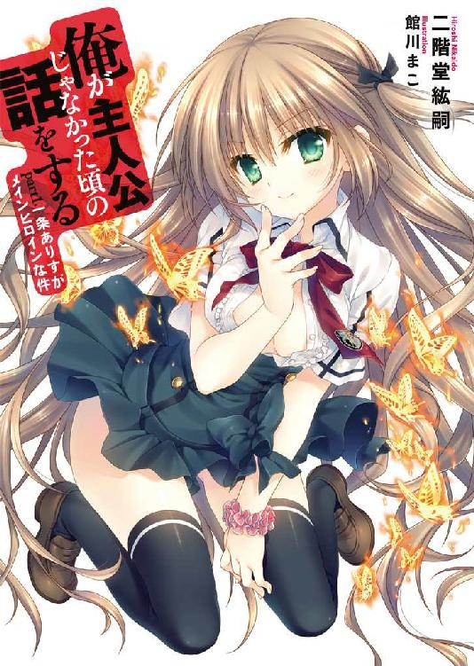
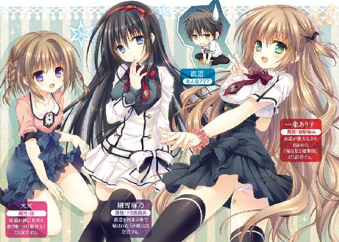
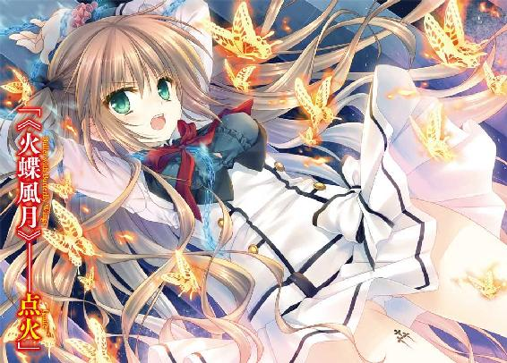
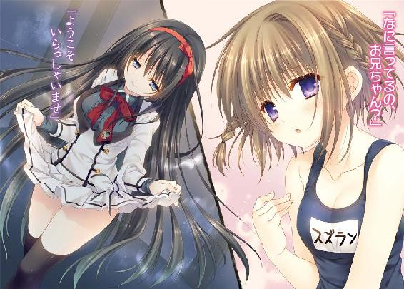
ＭＦ文庫Ｊ
俺が主人公じゃなかった頃の話をする
part1, 一条ありすがメインヒロインな件
二階堂紘嗣
口絵・本文イラスト●館川まこ
目が覚めると、そこは見知らぬ部屋だった。
俺はベッドの上に寝かされていて、顔にはプラスチックのマスクみたいなものがかぶせられていた。なんだか酸素マスクみたいだなあ、とぼんやりと思った。事実、それは酸素吸入マスクというやつであった。
わけがわからなかった。それでもひとまず、からだを起こそうとして、そこで、左手がなにかにつつまれていることに気づいた。
目をやれば、ありすが俺の左手を握ったまま、ほっぺたを俺の腰あたりに押しつけて、くすうくすう、と寝息を立てていた。
キャラメルみたいな色をした髪が白いシーツの上に散らばっていた。
なにしてるんだよ、ありす？
声をかけようとしたのだけど、のどがかすれてしまって言葉にならなかった。
それでもありすは気づいたらしくて、ガバッと勢いよく起きあがったのだった。
「ナオくんっ！」
ありすが強く俺の名前を呼んだ。
ずいぶん懐かしい呼び方だった。
ありすの大きな目からぽろぽろと真珠みたいな涙がこぼれて──。
○ ○
「んあ？」
朝、目を覚ますと、幼なじみの顔がめっちゃ近い。
「ぐっもーにん、直道！」
一条ありすが寝ている俺の上にまたがっていた。
マウントポジションというやつである。
母方の家系がイギリス貴族だとかで、生まれつき色素の薄い髪。
活発な印象を与える大きな目。
すっきりとした鼻梁と、桜色のくちびる。
左手首にシュシュを巻いている。
ありすは一見すると爽やかな笑顔を浮かべていた。
が、青筋とでも呼べばいいのか、まんが的に言うと「キレてる」マークがおでこのとこに浮かんでもいた。
俺の眠気は一瞬にして成層圏のかなたまで吹っ飛んでいく。
「ぐ、ぐっもーにん......って、なにしてんだよ？」
俺はあくまでも控えめに訊ねてみた。
制服の短いスカートから「者ども控えおろう、この健康美が目に入らぬか」という具合にありすの太ももが惜しげもなくさらされていて、その内側に貼られている絆創膏もまる見えで、頼むからもうちょいガードしてくれよ、と思った俺は、一応、からだを起こしてありすを上から退けようと試みたのだけど、ありすがぷにむち太ももを巧みに使ってがっちりきっちりと俺を押さえこんでいたので、それはついぞ叶わなかった。
「さて問題です」
ありすは爽やかな笑みを浮かべたまま俺に言う。
「あたしは、いったいなにをしているところでしょう？」
その手には掃除機のホースが握られていた。
「そ、掃除、とか」
俺が見たまんまを答えると、
「正解です☆」
ありすは掃除機のスイッチを入れた。
ぶおおおおー、という強力な吸引音が響く。
「くらえいっ」
そしてありすはホースの先端を俺の頬に押しつけた。
ぶおおおおー。
「なにすんだっ！」
ほっぺたが吸われる。ひっぱられる。
「この社会のゴミめ、ダメ人間め！」
「俺がなにをしたって言うんだよ！」
「吸われてしまえ吸われてしまえ！」
「やめろ、ほっぺたが伸びるーっ！」
今度こそ俺は飛び起きた。
マウントポジションをとっていたありすは、必然的に転げ落ちる格好となる。
「ぎゃおす」
ありすは怪獣みたいな奇声をあげて床にひっくりかえった。頭をぶつけたらしく「いたた」と両手で押さえている。
「痛いじゃない。なにすんのよ！」
「こっちのセリフだ！」
俺はありすからの反撃に備えて、体勢を立てなおす。かのシャーロック・ホームズが得意とした格闘術、バリツのかまえをとった。
が、唐突に、
「ひあ、うな、やめ」
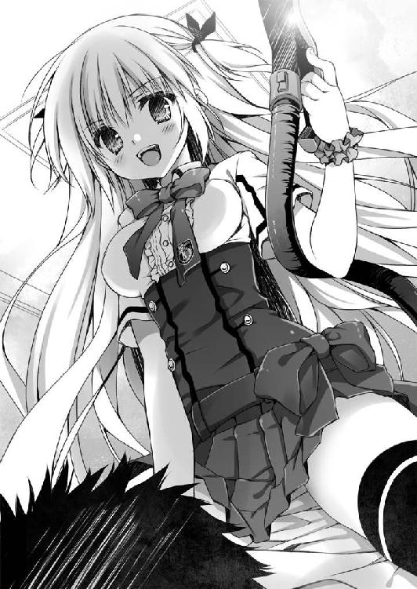
ありすが妙な声を発しながら身をよじらせた。
「なんなのよ、これ」
見れば、ありすのスカートを掃除機が勇猛果敢に攻めているではないか。おかげで下着がちらりとのぞいた。白だった。がんばれ、掃除機。
「うぎゃあ、見るなーっ！」
ありすはじたばたと暴れる。
助平な掃除機が俄然やる気をだしたみたいに、ぶおおおおーと声をあげた。
スイッチを切ればいいんじゃないかな、と思ったけど、快眠を邪魔された腹いせにしばらくのあいだは黙っていることにする。
俺たちのやりとりを、呆れたような顔つきでちくわぶ（猫）が眺めていた。あくびでもするみたいに、ふみゃあ、と一つ鳴いて部屋からでていく。
──そんな朝。
多少普通じゃないけど、俺にとっては異常ってほどでもない一日のはじまり。
このときはまだ、こんな毎日がずっとつづいていくものだと信じていた。
だって俺は、
無自覚な魔術師じゃないし、
夢を見ている救世主でもない。
赤い糸で結ばれた許婚なんてもってのほかだ。
なんだ、そのバカげた設定は。くだらない。
俺はどこにでもいる普通の男子高校生なのだ。
そのはずだ。
それなのに。
「あんたのことはあたしが守るから。べつに、それは好意とかじゃなくて、幼なじみだから仕方なくだけど......ってなによその目、みかんの汁をお見舞いされたいわけ？」
「お兄ちゃんのことはスズが守ってあげる。そのためにはお布団やお風呂の中でも一緒したほうがいいと思うの！ 変なことはしないから！ しないから！」
「直道さまのことはわたくしが責任をもって調教してさしあげます。まずは侮蔑的なまなざしで『この卑しい虫けらめがっ！』とわたくしを罵ってくださいませ。さんはい！」
なんのこっちゃ。
七月。
初夏の日差しがふり注ぎ、スズメが軽やかにさえずっている。
「三柴直道──出力最大！」
「うるさいんだけど」
「もー、急ぎなさいよー、遅刻しちゃうじゃんかよー」
ありすに罵声を浴びせられながら、俺は、きりきりと自転車のペダルをこいだ。
俺が前に座っていて、ありすはうしろに立ってのっている。ありすはなんかのスイッチでも押すみたいに俺のつむじをぴこぴこと押していた。
「やめれ」
「説明しよう。ニトロ・エンジン搭載の三柴直道は、緊急時には時速二〇〇キロで走行することが可能なのである」
「わけわからん。つーか、ありすが掃除機なんか持ちだすからいけないんだぞ」
おかげで現在遅刻ギリギリの時間なのである。
「何度呼んでも起きようとしない直道が悪いのよ」
「まったく記憶にない」
実際なんの記憶もなかった。ありすによれば、何度声をかけられても、俺は「う～ん、あと五分だけ」という、磯野カツオのごとき返答をくりかえしたということだった。腹にすえかねたありすは掃除機を持ちだし、さきほどの蛮行に踏み切ったらしい。
「あと直道が苦しんでるところを見ると、あたし、胸の奥らへんがね、きゅんとするの」
「あんた、鬼の子やわ」
掃除機で吸われた左っかわのほっぺたが、まだ、ヒリヒリする。家をでる前に鏡で確認したら、赤いわっかができていた。
「冗談に決まってるでしょ」
「冗談じゃなかったら幼なじみの縁をみじん切りにしてるところだ」
「直道ももう高二なんだから、いい加減、ちゃんと一人で起きなさいよ」
「おかしなことに俺の買う目覚まし時計はいつも壊れているみたいなんだ。寝る前にちゃんとタイマーをセットしているのに、まったく鳴ろうとしない。政府の陰謀かなにかじゃないかと疑っている」
「直道が寝ぼけて消してるんでしょ」
「まさか、そんなはずはない」
「これだもの」
ありすは大きくため息をついた。
「できの悪い幼なじみを持つと苦労するわ」
「べつに無理して起こしにこなくてもいいって、いつも言ってるだろ」
俺がそう言うと、ありすは「ぬ」とうなった。「だって、それは......」とかなんとか、もにょもにょと小声でなにか言っている。
「なに？ 聞こえないんだけど？」
「あ、あたしは心優しいの。あたしの半分はバファリンでできてるんじゃないかって、近所でも、もっぱらの噂よ」
「そんな噂聞いたことないけどな。ただ、おまえの言葉どおりなら、成分中の優しさは四分の一に減るけどな」
「むあ」
「素で間違ったのか」
「えーい、うるさいっ、うるさいっ、鎮痛効果だって四分の一あるのよ！」
苦し紛れに言いながら、ありすはまだ赤丸が残っているであろう俺の左の頬をうにうにとひっぱった。
「やめろっての、暴力反対」
「口答えするなら、制服のズボンを断裁して半ズボンにしてやるんだからっ！」
「そんなハレンチな格好で登校しろと!?」
「とにかく、あたしは、おばさまから『くれぐれもナオをよろしくね』って言われてるの。遅刻なんかさせられないでしょ。遅刻は留年のはじまり！」
「さもありなん」
俺の両親は、大学の研究室でくる日もくる日も「藻」の研究に明け暮れている。二人そろって「藻」萌えの人たちなのである。日本の「藻」だけではあきたらず、海外にまで足を運んでは珍しい「藻」を採取してくる。そのため家をあけていることが少なくない。そこで、俺の母は全幅の信頼を寄せるありすに「このでくのぼうを更生させてあげてちょうだい」とかなんとか言って合カギを渡していた。
妙な義務感にかられたありすは、こうして毎朝のように起こしにくるのである。
「ほら、急ぎなさいよ。あたしが急げと言ったら、その五分前にはすでに察して行動しているくらいでなければダメなのよ」
むちゃくちゃなことを言いながら、また、うにうにとありすが俺の頬をひっぱる。
「あぶないっての。ハンドル操作誤ったら事故るっての」
「事故らないように安全運転で急ぎなさいな」
事故らないように安全運転で急いだところ、なんとか遅刻せずにすむ時間に、学校に到着することができた。二年生の駐輪場に自転車をとめて、昇降口へと急ぐ。時間ギリギリに登校してくる生徒はけっこう多くて、昇降口は混雑していた。
「あ！」
不意にありすが声をあげる。見ればなにやら難しい顔をしているではないか。
「なんだよ、忘れ物か？」
「さっきから今日の直道はいつになく作画崩壊してるなとは思ってたんだけど」
「......いじめだな、これはいじめに違いない」
「ワイシャツのボタンかけ違ってるわよ？」
ありすに指摘されて見おろしてみれば、確かにボタンが一個ずつずれていた。
「あれ、ほんとだ」
ぜんぜん気づいていなかった。急いで家をでてきたせいだろう。朝食だって、あんぱん一個を牛乳で流しこんだだけ、という慌ただしさだった。
「まったく、だらしないんだから」
これ見よがしに大きくため息をつくと、ありすは細い指を俺のほうへ伸ばした。間違ったところでとめられているボタンをはずして、正しい位置にはめなおしていく。
「い、いや、自分でやるからいいって」
「いいからじっとしてて」
ふわりと甘い香りが俺の鼻をくすぐった。
ありすの長いまつ毛がよく見える。
なんだか、すごく恥ずかしかった。
っていうか、ほかの生徒に、ちらちら見られてるし。
この幼なじみ、実はけっこうな有名人である。
一条邸と言えば市内でも知らないやつはいないんじゃないかってくらいの豪邸だ。大正ロマンな感じの洋館なのである。一条家は、古くはイギリス王室ともつながりのある由緒正しい御家柄であるらしい。ありすはお金持ちのお嬢さまってわけだ。黙ってれば、気品のある顔立ちをしているし、身のこなしだってスマートだ。
うちの高校はお金持ち学校とかではないのだけど、有名デザイナーの制服を採用しているので、それを目当てに受験してくるやつも少なくない。ありすもその口らしい。
「直道ってば、あたしがいなきゃ、ほんとダメダメなんだから」
と、ありすは呟いた。
「ほい、できた」
俺の胸をぽんとついて、にっこり笑う。手首のシュシュがふわりと揺れた。
その笑顔が照れくさくて、
「か、かたじけない」
俺はありすから目をそらす。
このむやみに元気で、滅法かわいくて、ときどき無防備な幼なじみを、俺はちょっとばかり持て余している。むかしっから一緒にいたから、それが当たり前みたいになってしまって、でもそのおかげで、俺にもありすにも彼女彼氏の一人もできないのである。
おまえらつきあってるんだろとか、よく言われるけど、残念ながら俺たちはつきあってなどいない。ただの幼なじみ同士っていうだけで。
そりゃそうだ。いくら幼なじみって言っても、なにげにありすはお嬢さま、平凡極まりない俺とつりあうはずもない。こんなふうに仲はいいけど、俺は勘違いしてはいけないのだ。身の丈を知れってやつ。
ありすにとって、俺はできの悪い弟みたいなものなのだろうな。
なんて思いながら、俺は上履きに手を伸ばした。と同時に、薄いピンク色のなにかがふってきた。かさりと、すのこの上に落ちたので拾いあげる。
「あ」
意図せず、俺の口から声がもれた。
「え、なに？」
ありすは今落下したそれに気づかなかったらしい。
「い、いや、なんでもない」
俺はとっさにそう答える。拾ったそれも、ポケットの中にねじこんで隠した。
「？？？」
ありすは不思議そうに首を傾げている。
「なんでもないって、ほら、急ぐぞ」
「変な直道」
上履きをとるときに落ちてきたそれ。
それは、かの悪名高き恋文に相違なかった。
○ ○
いやいや待ちたまえよ。
いまだかつて、俺が異性から好意を向けられたことなんてあっただろうか、いやない。
ということは早合点してしまったけれど、これはラブレターでもなんでもなくて、果たし状かなにかなのかもしれない。果たし状をもらったことがあるのかと言うと、それもないんだけど、ラブレターよりも確率は高そうだ。
たとえば、ありすに惚れている男子から「ありすを賭けて勝負だ！」とかなんとか。
古い学園まんがみたいな展開だけど、案外ありそうな気もした。
二年生男子のあいだでは、うちのクラスのありすと、三組の細雪麻乃さんとで人気を二分していると言っても過言ではない。まあ、細雪さんは親衛隊なんてものができているから、ちょっと別格な気もするが。ツイッターのフォロワーとか五万人くらいいるらしい......。何者だよ、細雪麻乃。
それはそれとして。
幼なじみの俺が言うと身内びいきみたいだけど、ありすは美少女だ。
行動的だし、明るいし、話していても話題がつきなくて楽しい。いいとこのお嬢さまなのに、それを鼻にかけたりもしない。
不良グループからも一目置かれていたりするし、カツアゲされそうになった他校の生徒を救ったとか、原付で逃げるひったくり犯を追いかけてぶっ飛ばしたとか、ホームから線路に落ちた子供を間一髪で助けだしたとか、ありすの伝説をあげればきりがない。
かく言う俺自身もご多分にもれず、ありすに救われた一人だったりする。
って、ありすの話じゃなかった。
果たし状（仮）についてである。
でも、果たし状に「♡」のシールなんて貼ってあるものだろうか。
ほの淡いピンク色の封筒には「三柴直道くんへ」と書かれている。
朝のホームルームの合間に、俺は机の下でそっと果たし状の封を切ってみた。
中にはメッセージカードみたいなものが入っていた。
三柴直道くんへ
放課後、第二図書室にきてください。
待っています。
手書きのまるっこい文字は大変かわいらしかった。メールにはない趣がある。
ただ、どこにも差出人の名前はなかった。
ありすの字ではないな。ありすの書く文字はもっと右あがりで男らしいのである。なにせありすは書道五段の腕前だし。空手六段、剣道五段、弓道三段に、一〇〇メートル走は十二秒フラット、あとついでにけん玉検定二級。
第二図書室というのは、図書室からあぶれた、破棄されてもおかしくないような図書を保管しておく特別教室のことだ。普段から誰もいない。
相手はもしかして図書委員かなにかなのだろうか？
そこでまたべつの考えが浮かぶ。
あるいは、これは果たし状ではなく、偽ラブレターなのではないだろうか。向こうは罰ゲームかなにかで俺を呼びだしただけで、俺が本気にとろうものなら「なにマジにしてんの、キモイんだけど」とか言うのである。
......想像しただけで泣きそうになってきた。
って、いやいや、もう少しポジティブに考えてみよう。
人生のうちで三回はモテ期なるものがくるという都市伝説もある。もしかしたら、俺にも、そのモテ期なるものが訪れたのではないだろうか。
俺の内面からにじみでる、隠そうにも隠せないこの誠実さに気づいた心清らかなる乙女が、勇気をふりしぼって、この恋文をしたためたのかもしれないじゃないか。まあ、恋文というか、ただの呼びだし状なんだけど、そこはどうでもいいのである。
......ん、いや、待てよ。ほかの可能性もあるぞ。差出人の名前がないということは、身元を明かしたくない、という気持ちがあるということだ。はっ、もしや相手は男！
てな具合に、ごちゃごちゃ妄想しているうちに一日はすぎていった。
すこぶる平和であった。
そんなこんなで帰りのホームルームも終わったところ、
「ねえ、直道」
ありすに声をかけられて、俺はギクリとした。
「な、なんだよ？」
「あたし、手芸部に寄ってくから......って、どうかしたの？」
「い、いや、べつに。なんでもない。むしろなんでもない」
「む。なんか怪しい。挙動不審」
ありすはすいっと目を細めた。
「怪しくないって。辞書で『清廉潔白』と引いたら『三柴直道と同義』と書いてあるぞ」
「あたしの妖怪アンテナがびびびと反応している」
ありすは自分の髪の毛をつまんで、ぴょんぴょんとひっぱった。むむむ、と顔を近づけてくる。
「ほ、ほら、手芸部いくんだろ？」
話をそらすべく、俺はべつの話題をふった。
「待たせてるんじゃないか？」
ドアのそばで女子生徒が三人立っている。手芸部の女の子たちだ。
「あ、そうだった！ 衣装の打ちあわせがあるんだった！」
ありすはスポーツ万能なので、運動部からの誘いがひっきりなしにかかっていたが、どういうわけかぜんぶ断っていた。それでも、たまに手芸部に顔をだしていたりする。
「こんなとこで直道にかまっているひまなどないのだよ！」
「そうかい、そうかい」
「こんなとこで所詮三次元の直道にかまっているひまなどないのだよ！」
「言いなおさなくてもよくないか？」
「この駄立体め！」
ひとしきり俺を侮辱したありすはキャラメル色の髪をひるがえして、すたこらさっさと教室をあとにした。
俺は帰宅する生徒のピークがすぎるまでそわそわしながら教室で待ちつづけ、それから第二図書室へと向かう。
辿りついてみると、第二図書室の周辺にはすでに誰もいなかった。校内だというのにとても静かだ。俺は一つ深呼吸をしてから、扉を開いた。
○ ○
窓から穏やかな日差しが差しこんでいる。少しほこりっぽい第二図書室の窓際、長机に浅く腰かけるようにして、彼女はそこにいた。
「よかった。きてくれないんじゃないかって思ったの」
扉をあけた俺を見て、彼女はそう言った。ショートヘアで、目のくりっとしたかわいらしい女子だった。うちの学校の制服ではなくて、黒いプリーツスカートに白い清楚なブラウスをあわせていた。浅く腰かけていた長机から、ぴょこんと立ちあがる。
「あ、えっと......」
とっさになんと言えばいいのか思い浮かばなかった。というのも、俺は彼女にまったく見覚えがなかったのだ。
「あの、俺に、手紙くれたひとだよね？」
訊ねると、彼女はにっと目を細める。
「そだよ」
人違いとかではないらしい。俺の記憶にないだけで、どこかで会ったことがあるのだろうか。これだけかわいいのだから、一度でも会っていれば忘れなさそうなものだけど。
「直道くんは、わたしのこと『この愛くるしいキュート・ガールは誰だろう？』って思ってるんでしょ？」
「ご、ごめん」
謝りつつも、見知らぬ女の子に名前を呼ばれてどぎまぎした。あと、この子、自分で愛くるしいキュート・ガールって言ったぞ。
「謝らなくてもいいんだよ。直道くんがわたしのことわからないのは当然だし」
「そうなんだ？」
「うん。でも、わたしは直道くんのこと、よく知ってるの。とてもよく」
彼女は俺を知っていて、俺は彼女を知らない。そういう関係らしい。
それじゃあ、きみの名前は？
と訊こうとしたけど、その前に彼女は俺とのあいだにあった距離を、とんっ、と軽やかな跳躍でつめた。俺よりもちょっと背の低い彼女が下から見あげてくる。
彼女はにっこりと微笑んで、
俺を押し倒した。
「は？」
満足な受け身もとれずに床の上に倒され、したたか腰を打つ。
彼女はそんな俺の上に覆いかぶさった。
「ちょ、ちょっと待ってくれ」
いくらなんでも展開が早すぎるだろ。心の準備が整っていない。まだお天道様もこんなに明るいうちだし......。慌てて立ちあがろうとしたのだけど、彼女が上にいるので、うまく立つことができなかった。
「大丈夫。わたしに任せて」
彼女はにっと目を細めて言った。
なんだこれ、なんだこれ、なんだこれ！
「わたし、男の子のにおいって好きよ」
彼女はそんなセリフを囁いて、俺の胸に顔をうずめる。
「な、なにを！」
それから彼女は顔をあげて、俺のくちびるを塞いだ。
「──っ!?」
息がとまる。
柔らかいくちびるの感触。
つづいて彼女の舌が俺のくちびるを割って、侵入してきた。
ダ、ダメだ。頭がくらくらする。貧血でも起こしたみたいだった。動悸が激しくなる。手足の感覚もひどく鈍くなった。風邪をひいて寝こんだときみたいに全身が重たい。自由がきかない......あれ？ なんか、ほんとに変だぞ。
「......？」
しかし、彼女はこちらの異変になどまるで注意を払わずに、俺のワイシャツのボタンをはずしていくではないか。
これ以上はちょっとタイム！
抗議の声をあげようとしたけど、言葉がでてこなかった。
おかしい。
なにかがおかしい。
なにもかもがおかしい。
俺はわずかな抵抗もままならぬうちに、上半身を裸にされてしまう。
俺の上にのっている彼女は「ふーん」と呟いた。
「とってもおいしそう」
ひい。
彼女は人差し指をぴんと立てて、俺のくちびるに触れる。それから、ゆっくりと指をおろしていった。あごを通過し、のどを伝い、鎖骨までおりて......。
瞬間、バチン、と静電気みたいなのが弾ける。
彼女は瞬時に、俺から距離をとった。
俺に触れていた彼女の人差し指から、ぽたんぽたんと血が滴り落ちる。彼女はまたしても「ふーん」と呟き、怪我をした人差し指を口に含んだ。
「魔術結界の外では、《守護の刻印》が発動するという仕組みなのね」
謎すぎるセリフを彼女は口にする。
彼女が触れようとしたのは、半年前の事故で俺の左胸にできた火傷のあとだった。
「なんなんだよ！」
突然、声がでた。からだも動く。俺は慌てて立ちあがった。ワイシャツの前をあわせて抗議する。
「わけわからん。きみ、誰なんだ？」
「わたしが誰であるかよりも、あなたが何者なのかというほうが重要なのよ」
彼女は重ねて意味不明のことを言った。
「俺は普通の男子高校生だ。彼女いない歴＝年齢の童貞男子だ。悪いか！」
「そんなふうに思っているのはあなただけ」
「記憶のないうちに経験していたと言うのか！」
俺のセリフに彼女は眉をぴくりとそびやかす。
「......あ、いや、口が滑ったというか」
彼女は今のやりとりはなかったことにしたらしく、
「わたしはあなたの中に封じられている《凶戒原則》がほしいのよ」
そう言った。
俺の頭は一瞬フリーズする。なに言ってるんだ、この子は？
「......え、なに、ネメシスコア？」
「そう。魔力炉《凶戒原則》。使わないならわたしにちょうだい？」
ここにきて、ようやく俺は理解した。
この子はどうやら、重度の中二病患者らしい。かわいそうに、現実と妄想の区別がつかなくなってしまったようだ。
やはり冷静に考えてもみれば、俺みたいな、なんのとりえもないやつにラブレターなんて代物が届くはずがないのだ。なにを期待していたんだ、俺は。俺に届くものなど学習塾の案内と不幸の手紙くらいに決まっているではないか。
「あー、悪いんだけど、そういう相談にはのれないや。それじゃ」
俺は早いところ、この場から立ち去ろうと決めて、彼女に背を向けた。そそくさと出口へ足を進め、第二図書室の扉に手をかける。
が、どうしたことか、扉がびくともしないのである。
「カ、カギがかかってる？」
待て待て。ここは室内だ。外からカギをかけられたにしても、中からつまみを使えばあけることができる......んじゃないのかよ！
「......開かない」
「むだよ。この空間はすでに外界からは切りはなしてあるのだもの。わたしの許可がなければ外へでることはできないわ」
ドアからでていけないのだとしても考えがある。ちょっと危ないけど窓からおりればいい。ここは二階だ。なんとかなるだろう。と思ったのだけれど窓の外は真っ暗であった。夜の暗さなど比較にならないほど暗い。すべてが黒く塗りつぶされたみたいに、景色そのものが存在していなかった。窓の外の世界が──ない。
「なんでやねん」
なにがどうなっているのか、俺は説明を求めようとして、彼女に向きなおる。
彼女はにっと微笑んだ。右手を床と水平になるよう肩の高さまであげる。
「魔術式展開・《猫乃手喪狩体》起動──」
彼女が謎の言葉を紡ぐと、その右腕が青白く発光しだした。同時に、数倍もの太さ、大きさもある半透明の〈腕〉が彼女の右腕をつつむようにして構成されていく。
「──慢心乱心完了──」
彼女の右腕に重なるようにして輝く、半透明の〈腕〉。
彼女が腕をふるうと、その半透明の〈腕〉も同じように動いた。
本棚が崩れて、ほどけた紙片がひらひらと舞う。
「な、なんだよこれ、なんの冗談だよ」
目の前にあるものが信じられない。
「──猫殺ぎ奪え」
次の瞬間、俺は半透明のバカでかい〈腕〉にからだをつかまれていた。足が床から浮く。ギリギリとからだが軋んだ。無理やり暴れてみたけれど、まったく歯が立たない。
「く、くるし......」
「男の子でしょ？ 情けない声ださないでよ。じゅんじゅんしちゃうじゃない」
彼女は巨大な右手で俺をつかんだまま、左手で再び、俺の左胸にある火傷のあとに触れようとした。
バチン。
またしても静電気のようなものが発生する。
「さすがは《千年魔女》の《刻印》ね。かなり強力だわ。こうなると、もう少しばかりあなたを弱らせないとダメかしら」
そうして彼女はそっと息を吐きだし、
「ごめんね、直道くん。本意ではないのだけれど、何本か骨折させてもらうわ」
さらりと、とんでもないことをおっしゃる。
「や、無理無理。なに言ってんだよ」
「だいじょうぶ。命まで奪ったりはしないように加減するから」
「そういう問題じゃない！」
彼女が右腕に力をこめたのがわかる。ギリギリとからだが大きく軋んだ。
「がはっ」
満足に声もだせなくなる。息が吸えないし、吐きだせない。これはぜったいやばい。
「もうちょっとかしら」
なんだよこれ、意味不明すぎる。悪い夢なら早く覚めてくれ！
俺が心の中で叫んだ、そのとき。
一匹の赤い蝶が俺の目の前を横切った。
ひらひらと舞う、そのさまは、まるで火の粉のようで──。
その一匹だけではなかった。何匹もの赤い蝶が飛びかっている。
そうと気づいた次の瞬間。
「《火蝶風月》──点火」
赤い蝶が俺をつかんでいる青白い巨大な〈腕〉に群がって──爆ぜた。
「うわっ！」
俺は爆風で吹っ飛ばされる。凄まじい衝撃だったけれど、幸いにも怪我はない。と思う。無様に床を転がった際に頭をちょっと打っただけだ。
俺はすぐに顔をあげる。そして、それを目撃した。
虚空から一本の腕が伸びていた。
うしろにはなにもなくて、だから、腕だけが空中に浮かんでいるみたいだった。
「む、ひっかかる......んん、よっこいせ」
そこに細い亀裂でもあるみたいに、
その亀裂を押し広げるかのように、
なにもないはずの空中から二本目の腕が伸びた。
「こ、今度はなんなんだ......」
ぱっくりと開かれた穴はさらに広げられて──。
「......なっ!?」
今度こそ腰を抜かすところだった。その穴からありすが顔を覗かせたのだから。
「間一髪ってとこね。直道、あんた、だいじょうぶ？」
「あ、ああ......」
俺は呆然としたまま答える。
「よし」
ありすは鉄棒で前まわりでもするように、空中の穴からからだをのりだしてくる。そのまま、俺に背を向ける格好で、すとんと着地した。
ありすは妙な格好をしていた。いわゆるメイド服というやつだ。エプロンやらスカートやらに、たくさんフリルがついている。
ただ、よく見かけるメイド服（いや日常生活を営む上でよく見かけることなんてないわけだが）と違っているのは、背中から、右に大きな悪魔の羽、左に小さな天使の羽が生えているところだった。
ありすは一度、俺をふりかえり、
「あんたはそこでおとなしくしてなさい」
不敵に笑う。
そして、すぐに名前も知らない彼女のほうへ向きなおった。
「お仕置きターイム」
ばきぼき、ばきぼき、とこぶしを鳴らす。
「ちっ、《千年魔女》か」
名前も知らない彼女は、ありすを見て吐き捨てるように言った。
「よく、わたしの代理世界に入ってこられたわね」
「そんなの朝飯前よ。むしろ昨夜の夕飯前ね」
「意味がわからないけど」
同感であった。
「ふん。とにかく、ここからは、あたしが相手になってやるって言ってんの」
ありすはそう宣言すると、どこからかタロットカードみたいなものを抜きだした。ふっとありすがカードに息を吹きかけると、突然、カードが無数の蝶の姿へと変化する。
「直道には手だしさせない」
蝶たちは一斉に名前も知らない彼女を襲った。同時に、彼女は〈腕〉をふるう。
爆発が起こり、俺は両腕で顔をガードした。爆風が吹きつけてくる。
ほこりが舞いあがる中、彼女の〈腕〉が伸びた。
ありすは右方向に飛びこみながら〈腕〉をよける。と思ったら、そのまま彼女のふところへ踏みこんだ。長い〈腕〉の間合いよりも内側だ。ぐっとバネをためて、アッパーカットの要領で掌底打ちをくりだす。
しかし、彼女はそれを人間とは思えない身のこなしでよけた。同時に〈腕〉をくりだすことも忘れない。それはありすではなく、俺のほうをとらえていた。でも、俺は反応できなかった。やばい、と思った次の瞬間、ありすに抱えられて床を転がる。頭や肩や背中を打った。本棚、長机、椅子が倒れて大きな音を立てる。
ありすはすぐに体勢を立てなおして、彼女を睨みつけた。
「卑怯者め！」
「なんとでも」
愉快げに言って、名前も知らない彼女は俺のほうへ視線を向けてくる。
まんまるな瞳がにっと細まった。
ぞっとしない。
ありすがまたカードを抜きだす。
名前も知らない彼女は、大きく〈腕〉をふりあげた。しかし、再び攻撃してくるというわけではなかった。彼女は巨大な〈腕〉を無造作に壁に叩きつける。壁はまるで障子紙が破れるみたいにえぐれた。
「でなおすわ、直道くん。またね♡」
「待ちなさい！」
ありすが言ったときには、名前も知らない彼女は穿たれた壁の穴に飛びこんでいた。
すぐさま、ありすも駆け寄ったのだけれど、
「ぎゃおす！」
壁に顔から衝突して弾かれ、どすん、とお尻から倒れる。
穴は消えていた。気づけば、そこはもう普通の第二図書室の中だった。
外の景色も復活している。校舎まわりをランニングする野球部のかけ声や、吹奏楽部の演奏が聞こえてくる。
火の粉を思わせる赤い蝶が、気遣わしげにありすのまわりを飛びまわっていた。
「いたたた......」
ありすはお尻をさすりさすりしながら、からだを起こしている。
俺は「世界無様王決定戦」なるものがあったなら、日本代表に選出されることは間違いないであろう見事な無様ぶりで、ありすを見あげた。
「なにが、どうなってんだ？」
○ ○
「単刀直入に言うけど、あたしは魔術師なの」
ありすは大まじめな顔で言う。
俺は、ずびしっと、ありすのすべすべのおでこにチョップをふりおろした。
「いたっ......なにさらすんじゃい！」
反撃で殴りかえされる。ありすのぐうが、俺の頬にめりこんだ。
「あ、痛くな......痛いっ！」
夢じゃなかった。夢だけど夢じゃなかった。とかでもなく夢じゃなかった。
場所を移さず、ここは第二図書室の中である。穏やかな風がカーテンを揺らした。不思議なもので、さっきの子が壊した棚も書籍も、今は元通りになっている。
「魔術師だって？」
俺は殴られた頬をさすりながら言った。
「そう」
ありすは重々しくうなずく。
「魔術師今手術中。魔術師今手術中。魔術師今手術中。言ってみ」
「まじゅちゅしいましゅじゅちゅちゅう......こほん」
咳払いをしてごまかしやがった。
「関係ないでしょうが」
「魔術師ねえ。物語の要素としてはあんまりおもしろくない。ありきたり。三〇点」
「信じてないわけね」
「信じてないわけだ」
ふむぅ、とありすは腕を組んだ。
「そう言うと思った。予想どおりの反応でおもしろくない。ありきたり。マイナス三〇点」
「そうかよ」
「でも直道だってこれを見たら信じずにはいられないでしょう」
「なにをだ？」
ありすは長机の上に腰かけた。
「直道はちょっとしゃがんで」
「あ？ いいけど、なんだよ」
言われたとおりに、その場でしゃがむ。
すると、ありすは右足を長机の上にのせた。
俺は慌てて目をそらす。
「な、なにしてんだよ、おまえ！」
ありすが足をあげたことで、スカート部分の防御力が著しくさがり、その下が見えそうになっていた。ありすも慌てたように、ぎゅっとスカートの裾を押さえる。
「ちょっと、どこ見てんのよ、エロ道！ 人類未満め！」
しゃがめと言ったのはありすのほうじゃないか。その前は「見てもらうのが早い」的なことも言った。理不尽すぎるぞ。
「見るのはここっ！」
ありすは太ももに貼りつけている絆創膏をぷにっと指さした。そういえば、あんまり深く気にしたことなかったけど、ありすはいつもそこに絆創膏を貼っている。
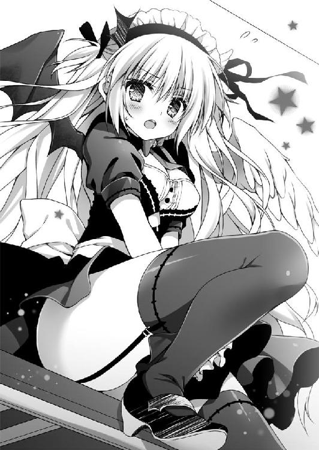
「よく見てて」
ありすは絆創膏を、ぺろっとはがした。
その下から、
奇妙な模様が浮かびあがる。
三本の十字架を思わせる、奇妙な模様が。
俺はとっさに自分のワイシャツをめくりあげて、自分の左胸に残されている火傷を確認した。「森」という漢字のように「†」が三つ並んでいる。
「同じだ......」
俺のからだにある火傷のあとと、ありすの太ももにある模様は同じ形をしていた。
「偶然、だよな？」
「偶然なんかじゃないわ。それは、あたしが直道の〈魔力〉を封印するために施したものなのだから」
「俺の......〈魔力〉？」
ありすは太ももに絆創膏を貼りなおして、ぴょこんと立ちあがった。
「半年前のこと覚えてる？」
「半年、前──」
俺は半年前の大晦日にけっこう大きな事故に巻きこまれた。らしい。
実は記憶にない。
俺は廃校になった母校の小学校の倒壊に巻きこまれて怪我をし、一時的に入院生活を送ることとなった。だが、どうしてそんなところにいたのか、まったく覚えていないのだ。気づけば新年ははじまり、俺は病院のベッドの上で寝ていた。事故の衝撃のせいで一時的な記憶喪失になったのだろうとかなんとか説明されたけど、半年が経った今でも当時のことは思いだせないままである。
ついでに言えば、小学校の校舎が倒壊した理由も定かではない。そこまで老朽化していたわけでもなかったし、地盤沈下したわけでも、ガス爆発などが起こったというわけでもなかった。まったくもって謎の倒壊だったわけだ。
その事故による怪我人は俺一人だった、というのが不幸中の幸いだろう。瓦礫の山から救出された俺は、奇蹟的にも命にかかわるような大怪我でもなかったし、生活に支障をきたすような後遺症も残らなかった。
あるのは、この火傷くらいのものだったのだが......。
「あの事故は直道の中にある《凶戒原則》の暴走が原因なの」
ありすが厳かな調子で言った。俺はその顔をじっと見つめる。
「なに言ってるのかよくわからないから、翻訳コンニャクを持ってきてくれ」
「日本語でしゃべってるでしょうが」
「なんだよ、その《凶戒原則》ってのは？」
さっきのあの子も言っていたけど、俺はそんなの知らない。
「魔術師の力の源、魔力炉の一つよ。魔力炉を持たない者は魔術師にはなれない」
「はあ」
「直道は自分では気づいてないだろうけど──」
びしっと、ありすが俺に人差し指をつきつけてくる。
「──魔術師なのよ」
「俺が魔術師ぃ？」
「正確にはその素質を持つ者。あたしたちは、《無自覚な魔術師》と呼んでいるわ」
「純真無垢ねえ」
「いきなり信じろと言っても無理なのは承知してる。実際、それが普通の反応よ。だからこそ、普通の人々に魔術の存在を知られてはいけないの。そのために存在しているのが、あたしたち『冥葬会』の魔術師」
「頭がこんがらがってきた」
「『冥葬会』というのは魔術師協会の一派で、魔術の鑑定・封印・破棄を主な任務としている組織よ」
「......はあ」
一から説明するわ、とありすは言う。
「一条家は中世ヨーロッパではじまった魔女狩りを生きのびた《千年魔女》の末裔なの。直道も魔女狩りくらいは知ってるでしょ。無知と偏見が招いた大量虐殺のことよ。実際のところ処刑された者のほとんどは魔女でもなんでもなかった。当時、教会には魔女から財産を没収できるという制度があったの。困窮していた教会は魔女をでっちあげては、その家の財産を奪いとっていたのよ」
悲しい歴史ね、とありすは呟く。
「そのことから本物の魔術師たちは学んだわけ。魔術や魔法は、公には存在してはならないんだって」
「どういう意味だよ？」
「直道は、魔術は存在する、なんて言われても信じてないでしょ？」
「......現在進行形で疑わしいと思っているところだ」
「それでいいの。魔術師たちは人々にそう思わせることに成功した。魔術や魔法なんて非科学的なもの、存在するわけがない。よって、魔女狩りも魔女裁判もバカげている、ってね。簡単に言えば、『冥葬会』の仕事は魔術を一般人に広めないこと」
「俺に教えちゃってるじゃん」
「緊急事態だもの。仕方ないわ」
「緊急事態ねえ......」
「あたしは、直道の《凶戒原則》を保護しなければならない」
「自慢じゃないけど、俺は魔法も魔術も使えないんだ」
「そんなの知ってるわ。さっきも言ったけど、直道は《無自覚な魔術師》なのよ」
「それ、なんなわけ？」
「《無自覚な魔術師》っていうのは、魔力炉を宿しながらも、魔術師たりえない者の総称よ。そうね、乾電池を思い浮かべてみて」
「乾電池？」
「単三乾電池が二本ここにあるとする。それを二本とも直道のポケットに入れたとして、さてどうなる？」
「いや、どうもならんだろ」
「そういうことよ。乾電池は、それ単体では役に立たない。テレビのリモコンとかの、直流電源を必要とする装置にはめこまないと使い道がないわけ。この乾電池が魔力炉で、テレビのリモコンが魔術師に相当する」
わかったような気もするし、ぜんぜんわからなかったような気もした。
「《無自覚な魔術師》というのは、〈魔力〉を使いこなす回路は持っていないのに、魔力炉だけを所有している人間のことよ。それでも通常なら大きな問題には発展しないの。さっきも言ったように、乾電池をポケットに入れていたってどうにもならないわけだもの。でも、直道の場合、ちょっと特殊なのよ」
「特殊って？」
「あんたは、とびきり強力な魔力炉、『冥葬会』のデータベースによると《凶戒原則》と呼ばれる高位魔力炉を宿しているのよ。その上、《無自覚な魔術師》のくせに魔力炉を起動させ、あまつさえ暴走させてもいる」
暴走──半年前の事故。
おいおい......。
「なにが引鉄となったのかはわからない。現在も『冥葬会』で調査がつづけられているわ。とにかく、半年前のあの日、直道の《凶戒原則》が突如として起動した。それがあの事故の真相よ。あたしは誰もいない小学校の校舎に直道を運びこみ、被害を最小限に食いとめるため、直道に封印魔術を行使したの」
ありすが俺の左胸を指さす。
「直道が火傷のあとだと思っているそれは《守護の刻印》という封印魔術の刻印よ」
「ブランド・オブ・アリス......」
「直道の《凶戒原則》を封印・停止状態にして、また万が一にも直道に危険が迫った場合、《刻印》をとおして、あたしに知らせてくれるって代物よ」
一応、大まかなつじつまはあっている......のかな。
「これで直道は普通に生活できるはずだったのよ」
「はずだった？」
「さっきのあいつ、あの特徴的な〈腕〉、間違いないわ、あいつの名前は《泥棒猫の爪痕》。魔術師協会から追放されたおたずねものの魔術師よ」
「おたずねものの魔術師？」
「《泥棒猫の爪痕》は《無自覚な魔術師》を襲っては、魔力炉を回収しつづけているの。これは魔術師協会が定めている〈魔術秘匿令〉並びに〈魔術師による一般人への魔術的介入禁止令〉に違反していて、魔術略取の罪に当たるわ」
「難しいことはわからんけど、その魔力炉とやらを集めるとどうなるんだ？」
「それこそ莫大な〈魔力〉を手に入れれば、なんでもできる。空を飛ぶことも、地球を破壊することも、死んだ人間を生きかえらせることも、過去や未来をいききすることもできるでしょうね」
「マジか......」
「もちろん、ただ魔力炉を集めただけでは意味ないけど。膨大な〈魔力〉も制御できなければ意味ないわ。まして、《凶戒原則》なんて普通の魔術師に制御できるはずがない。でも、《泥棒猫の爪痕》は集めた魔力炉を使いこなすだけの魔術式をすでに完成させているのかもしれない」
ありすは難しい顔をして下を向いた。
けれど、すぐに顔をあげて、俺の目を見つめる。
「あたしが直道と幼なじみなのは偶然じゃないの」
「あ？」
「《千年魔女》として、あたしは直道の《凶戒原則》を監視・保護してきたの。あんたの魔力炉は普通じゃない。そのことはずっと前から判明していて、『冥葬会』のほうでも要注意人物として直道はマークされてた」
「ちょっと待て。なんだよ、それ？」
俺が要注意人物？
「これまでは問題なんてなかった。けれど半年前に暴走を許してしまった......」
ありすはくちびるを噛む。
「あたしの落ち度よ。油断してた。しかもそのせいで《泥棒猫の爪痕》に目をつけられてしまった。ぜんぶ、あたしのせい。なにか手を打たないと」
ありすはずっと俺を監視していた。
監視するために俺に近づいた......。
その突然の告白に、俺はほんの少しだけ傷ついたような気持ちになる。
でも、それがどうしてなのかは、よくわからない。
俺は足もとを見た。右の上履きの先っちょが汚れている。首筋を撫でた。それで落ちつくということもなかった。湿気を含んだ初夏の風が吹きすぎる。
「いきなりで混乱するのはわかるわ」
ありすは俺を労わるように言った。
「でも、もう理解したでしょ。直道は《無自覚な魔術師》で、あんたの《凶戒原則》は狙われているの。相手は《泥棒猫の爪痕》。どんな卑怯な手を使ってくるかわからな......ねえ、直道、だいじょうぶ？」
ありすはうなだれる俺を下から覗きこもうとする。俺の肩が震えていたからだろう。ありすはそっと俺の手を握った。
「ねえ、直道、もしかして泣いてるの？」
泣く？ 俺が？ なんで？
「ねえ、直道」
「ふ、ふふふ」
「な、直道？」
「ふはははははははっ」
「直道が壊れちゃった」
「ＨＡＨＡＨＡＨＡ！」
俺は顔をあげる。まったくもって笑える。つーか笑うしかない。
「騙されるものか！」
言ってやったね。
「はあ？」
「わかってるぞ。ぜんぶドッキリなんだろ？ さっきのは手芸部の友達かなにかに違いない。そうだろ？ 俺を騙そうったって、そうは問屋がおろさない」
「ドッキリで、あんなことできるわけないじゃない」
「手品だ。そうに決まっている。なにが魔法少女だ」
「魔法少女じゃないってば、魔術師よっ！ 正義の魔術師！」
「魔術師手術室で長州集中手術中。魔術師手術室で長州集中手術中。魔術師手術室で長州集中手術中。言ってみ」
「まじゅちゅししゅじゅちゅしゅちゅで......こほん」
「そもそも説得力に欠けるんだ」
「なにがよ？」
「鏡を見ろ。なんて格好してやがる！」
「むあ」
ありすは短めのスカートをぎゅっとひっぱった。ぴよぴよ、と背中の羽が揺れる。
「こ、これは違くて」
わが校の手芸部は通称、コスプレ部と呼ばれている。
ありすは、去年の文化祭で、手芸部とマンガ・アニメ研究会の子たちに頼まれて衣装を着たことをきっかけに、ちょくちょくモデルみたいなことをしていた。
なにやら休日にはイベントとかにもいっているっぽい......。
そのありすがコスプレで登場である。
しかも、メイド服に天使と悪魔の羽、ぴんときたね。『キング・オブ・アウトロー』という格闘ゲームに登場する武装メイドの衣装だ。
これ以上ないというくらい浮ついている。浮ついているというか、軽く三センチくらい浮いてるんじゃないか？ 騙されてなんかやるものか。
なにが正義の魔術師だ。
なにが《無自覚な魔術師》だ。
なにが《凶戒原則》だ。
「どっかに隠しカメラでも設置して撮影してたんだろ？」
そうだ。これは、どこにでもいる平凡な少年がある日突然、非日常的な事件に巻きこまれる、なんてワンシーンを撮るための壮大なドッキリに違いない。
「ち、違うってば。これは単に衣装あわせをしてただけで、そしたら絆創膏の下が熱くなって直道がピンチだってわかって、急いでたから着替える時間がなかっただけなの！」
「信じないね。このハレンチ娘が。丈が短すぎる。お父さんは許しませんよ！」
「よこしまな目で見るな！」
「おまえには羞恥心がないのか」
「ううぅ......、とにかく信じろ、アホ道！」
言うが早いか、ありすは足技をくりだした。
左足を軸にした連続キック。
「ばか、おま、ぱんつ見え、ぶべらぶぼらぶぼっ」
逆立ち状態で回転キック。
「ががぼぼがぼらっ」
吹っ飛ぶ俺。
「信じなさい！」
そうしてリングに沈んだところをつり天井固めでやられた。
「ギブギブ、信じる信じる。全面的に信じさせていただく！」
○ ○
ありすがスコップで土を掘りかえすと、そこからタロットカードのようなものがでてきた。魔術札とかいうらしい。それを新しいカードにとりかえると、またもとに戻すみたいに土をかぶせ、ぺたぺたと、上からスコップで叩いた。
「これでオッケー」
三柴家である。ありすは敷地内の四隅で同じことをした。
「なにがオッケーなんだよ？」
「魔術結界を更新したの。悪意を感知して教えてくれるし、ある程度は魔術的干渉を防げるはずだから、これで家内安全よ。ついでに学業成就と商売繁盛の効能もある」
「そりゃ至れり尽くせりだな」
わが家は以前から結界なるものがはられていたということになる......わけか？ そういえば、さっきの女の子も結界がどうのとか言ってたような気がする。いつの間にカードなんか埋めていたのか知らないが、これだけ手がこんでいたら上出来である。
あのあと、ありすが、
「《泥棒猫の爪痕》が直道を狙っているうちは、あんたを一人にはさせておけない。今日は泊まりにいくからね！」
などと言いだしたので、まずは高台にある一条邸に向かった。ありすは涼しい顔をしていたが、自転車を押していた俺は汗だくになった。
そんなありすと俺を出迎えてくれたのは、一条家に仕えるリアルメイドの南奈美さんだ。肩まである髪をうしろで束ねていて、フレームレスのメガネをかけているキレイな女の人である。が、南さんは俺が小さいころから、まったくと言っていいほど容貌の衰えを見せない。いったい、おいくつなのだろうか。微妙に気になるのだが......。
まあ、それはともかくとして、俺が南さんにもてなされているあいだに、ありすはお泊まりセットの準備をしてきた。制服から普段着に着替えてもいた。Ｖネックのざっくりしたサマーセーターにショートパンツという格好だった。
「どうぞ、お嬢さまをよろしくお願いします」
と、南さんに見送られて、俺たちは出発した。
「直道さま、くれぐれも間違いなど起こされぬように」
と、念も押された。
「お嬢さまがたとえどんなにかわいらしくて、無防備極まりなくとも、努めて理性をお働かせになってください。さもなければ......うふふふふ」
笑顔が怖すぎた。
その後、俺の家にやってきたありすが結界なるものを設置した、という次第である。
ちなみに、一条家で匿ってもらうという案は最初からなかった。
南さんが微妙に怖いからである。
むかし、一条邸内でかくれんぼをしていたら、トラップにひっかかって、あやうく命を落としかけたことがある。あれは、ぜったいに俺を狙っていた。
だから、俺としては落ちつけるわが家のほうがいいわけだ。
うちの両親もありすのことは信頼しているし。
そもそも、ありすのお遊びにつきあってやるだけなのだから一条邸である必要はないだろう。そうだ。魔術師なんかいるわけがないのだから。
「おっじゃまっしまーす」
勝手知ったる俺の家、ということで、ありすは合カギを使ってドアをあける。
俺もありすのやたらと重いお泊まりセットをひきずりながら、うしろにつづいた。
「これ、なに入ってるんだよ。重すぎるだろ」
「勝手に中を見たらタダじゃおかないからね」
ほんと、なに入ってるんだろ。死体とか入ってそうな重さなんだけど。
ドサッとありすの荷物をリビングのソファの上におろす。
ありすはと言うと、冷蔵庫から牛乳をとりだして、わが家に常備されているありす専用グラスに注いで、こくこくとのどを鳴らしていた。
「ぷはっ、五臓六腑にしみわたるっ」
「なに言ってんだ」
「直道も飲む？」
「いや、いいわ。てか、口のまわりに白いひげができてるぞ」
指摘すると、ありすはぺろりと舌でなめとった。
「とれた？」
「ん、ああ。まあ......」
もうちょい恥じらいというものを覚えてほしいものだ。まあ、俺くらいにしか見せないんだろうけど......。
でも、ありすはさっきこうも言っていた。
──あたしが直道と幼なじみなのは偶然じゃないの。
なら、俺とありすの関係ってなんなのだろう。いや、魔術師なんているわけないんだから、あれはお芝居のセリフみたいなもののはずで、でも......。
そんなことを考えていたのが、不安に思っているとでも映ったのか、
「このあたしがいるかぎりだいじょうぶよ」
どん、とありすは自分の胸を叩いた。
「あんなへなちょこ魔術師、ひねりつぶしてくれるわ。だから、直道は不沈艦に肩車された気でいなさいな！」
「そこは『タイタニックにのった気でいなさい』って言って、『沈んじゃうじゃないか』というベタなやりとりをするところだろうが。つーか、スタン・ハンセンなんて今どきの高校生は誰も知らんぞ」
なんて話をしていると、ありすは唐突に、「ぺぷし！」と、大きなくしゃみをした。いつ聞いても変なくしゃみだ。ずびずびと洟をすする。
こういうとこも無防備だ。
「ほれ、ティッシュ」
「うむ」
ありすは勢いよく洟をかんだ。
「ところで、ちくわぶは？」
「さあ、どっかで寝てるんじゃないか」
ちくわぶというのは半年前、退院後もまだ自宅療養中だった俺のところに現れた猫の名前だ。首輪もしていなくて、野良猫のようだったのだけど、まんまるとしていて、そこはかとなく招き猫のような気品もあったので、どこかの飼い猫が逃げだしてきたんだろうと思った。「猫を保護しています」という張り紙をつくって、近所のコンビニとかに置いてもらっていたのだけど、結局、飼い主は現れず、そのままうちに居座っている。
「おーい、ちくわぶ」
一階をぐるりと見てまわった。が、ちくわぶの姿は見当たらない。
「いないなあ」
「せっかく、ひっくりかえして遊ぼうと思ったのに」
「おまえ、猫アレルギーだろうが」
ちくわぶと遊んでいると、いつも「ぺぷしぺぷし」言っている。さっきのくしゃみはそういうことだ。
「鼻炎のクスリは飲んできたから、そろそろきいてくるはず。ああ、ちくわぶの肉球をくにくにしたいのにー」
「嫌われてるくせに」
ちくわぶはありすが苦手らしい。いつも嫌そうな顔をして逃げていく。それをありすは追いかけ、ひっかかれる。ということをくりかえしていた。
「ふふふ、今日は秘密兵器を用意してきたのだよ。しばし待たれい」
ありすはでかいカバンの中をなにやらごそごそやった。そうして、でてきたのは猫耳カチューシャであった。それをおもむろに自分の頭にのっける。
「なにしてんだ、おまえ？」
「猫だにゃん」
にゃん、のところで猫っぽい（と本人が思っているらしい）ポーズをとる。
悔しいがちょっとかわいいぞ。
「ちくわぶも、これであたしが友好種族であることを察してくれるはずだにゃん」
「どうかな......」
一階にちくわぶの姿はなく二階をさがす。父さんの書斎と両親の寝室。しかし、どちらにも、ちくわぶはいなかった。
「なによ、直道、あんたの部屋、窓あけっぱなしじゃないの」
俺の部屋からありすの声がして、そちらを確認に向かう。
「これじゃあ魔術師どころか泥棒にも狙われるわよ」
魔術師はとにかく、泥棒は困る。
「おかしいなあ、ちゃんと戸締りしたはずなんだけど」
「ちくわぶがあけたっての？」
「そこまでの芸ができるかなあ、あの猫の手で。あいつお手もできないんだぜ？」
「猫は普通できないし」
まあ、たぶん、ここから外へでたのだろう。猫は気まぐれな生き物と言うし、どこかで遊んでいるに違いない。
「夕飯までには帰ってくるだろ」
「それじゃあ、しょうがないや。直道をもふもふして遊ぼう」
「うん、なに言ってやがる？」
「えいやっ」
突然、足払いを食らって、俺はベッドに倒された。
「お、おい！」
倒れた俺の上にありすが飛びのってくる。
「生娘でもあるまいに、恥ずかしがらずともよい」
ありすが俺の上で指をわきわきさせる。
「や、やめろ！ なにする気だ！」
「よいではにゃいか、よいではにゃいか」
「ぎああああああああああああああああああっ！」
○ ○
「ひーふいーおなかがいたいよー。腹筋が割れてしまうよー」
げらげら笑いながら、ありすは俺のベッドをべしべしと叩いている。
「うう、お婿にいけない......」
ありすにひんむかれた俺は、さっきまでありすが着ていた武装メイドのコスプレをさせられている。
俺とありすは身長差があるのだけど、着られないことはなかった。それにしてもスカートというのはなんとも心許ない代物だ。スースーして、どうにも落ちつかない。
「ぷぷ、直道が真っ赤な顔して、内股でぷるぷるしてる。萌える」
「やめろ、俺をよこしまな目で見るな」
「ふふふ、口ではそんなことを言っていても、からだのほうは正直だぞ」
「なんで、俺がこんな格好しなくちゃいけないんだよ」
「さっきので、ほつれちゃったみたいだからなおさないと......ぷぷ」
「笑うな！ 着ながらじゃなくてもいいだろ」
「立体の状態でバランスを見たかったのよ。胴まわりはサイズ違うけど、ま、これでいいわ......ぷぷぷ」
「くっ、べつに今やらなくてもいいじゃないか」
ますます、魔術師だとかそんな話が嘘くさく思えてくる。
「どうせひまなんだから、いいじゃない」
ありすはそう言うと針と糸を用意し、ちくちくとほつれた部分の補修をはじめた。
「へたに動くとあぶないから、じっとしててね」
「コスプレとかするひとって、接着剤とかでやるって聞いたことあるんだけど」
「接着剤、安全ピン、両面テープ、ホッチキス......やつらを信用してはならねえ」
実感のこもったセリフをのたまってから、ありすは真剣な面持ちで針仕事にとりかかった。頭には猫耳をのせたままだった。
ちくちく。
ちくちく。
ひまである。俺はぬぼーっと、つっ立っているだけで、なにもすることがない。
「なあ、コスプレっておもしろいのか？」
「やってみるとけっこうはまる」
「ふーん」
「最初は人前にでるの恥ずかしかったけど、わりとすぐ慣れた」
むかしから注目されるのは好きなやつだったし、そういうものなのかもしれない。
「イベントにも参加してるんだろ？」
「写真いっぱい撮られるよ」
「なっ!? こんな扇情的なかっこでか？」
「扇情的とか言わないでよ」
「いや、おまえ......」
俺はあらためてこの幼なじみを見つめる。
ありすはちょっとむっとした顔で俺を見あげた。
ふわふわの長い髪、くっきりした目鼻立ち、つやつやの肌。こいつ、自分が容姿にめぐまれていることに自覚がないのだろうか？
メイド服とか、べつに興味なかったけど、ありすのメイド姿はなんというか、けっこうかわいかった。思いだすと......やばい、夢にでてきそうだ......。
「......ほどほどにしとけよ？」
「なんでよ」
「いや、それは......」
ほかの男たちにエロい目で見られたりしたら嫌じゃないか、とは言えない。なんだか独占欲まるだしみたいで気がひけた。べつに、ありすは俺の彼女とかじゃないんだし......。
「幼なじみとして心配なんだよ。変なトラブルとか巻きこまれたら厄介だろ？」
「べつに平気よ。あたし、露出低いほうだし」
「あぶないやつがストーカーみたいになったらどうすんだよ？」
「正義のこぶしで、ぶっ飛ばす」
ありすは、にぎゅっとこぶしをつくった。
そうでした。
ありすはストーカーなんてぶっ飛ばせるくらい強いのでした。足も俺より速いし。
「いらん、心配だったみたいだな」
そうか、俺がありすにしてやれることは、なんにもないわけだ。
「でも、あたしのこと心配してくれるのは嬉しいよ」
ありすが俺に笑いかける。
「ありがとね、直道」
俺はなんだか照れくさくなってしまって、ありすから目をそらした。
でも、ありすはきっと、この笑顔をカメラにも向けるんだろうなと思うと、ちょっともやもやする。
幼いころの俺は内気な性格で、部屋にこもってゲームばかりしているちょっと暗い子供だった。友達は少なく、外で遊ぶということをほとんどしなかった。小学五年生くらいまではぷくぷくの肥満児だった。デブ道、と陰口を叩かれているのも知っていた。
そんな俺に声をかけてくれたのが、一条ありすだった。
とある昼休みのこと、俺は教室のすみっこで図書室から借りてきた『かいけつゾロリ』を読んでいた。
「ねえ、一緒にサッカーしない？」
ありすの声がしたけど、最初は自分が話しかけられているとは思わなかった。
なにせ、相手は一条家のお嬢さまなのだ。みんなの人気者で、とびきりかわいい女の子なのである。俺になんか声をかけるわけがない。
でも、ありすは俺の目の前に立っていて、俺に話しかけていた。
「......もしかして、ぼくに言ってるの？」
「そうだよ」
ありすは、俺の汗っかきな手をとって「決まってるじゃん、ナオくん」と言った。
「ナオくん......？」
俺は大いに戸惑った。女の子に手を握られるなんて、はじめてのことだったのだ。
一緒に遊ぼうと誘われたことも、ナオくんなんて呼ばれるのも。
「あの、ぼく、サッカーなんてできないよ」
俺はほとんど泣きそうになりながら言った。
「隣のクラスと勝負なんだけど、メンバーが一人たりないんだ。助けると思ってさ」
ありすは強引に俺を校庭までひっぱっていった。当然のことだけど、みんなは俺を見てすごく嫌そうな顔をした。体育の時間でも俺はいつもドンケツを走っているような子供だったのだから、それは当然だった。
「ナオくんを入れないなら、ありす、もうみんなとはサッカーやんないからねっ！」
ありすを失うわけにはいかないクラスメイトたちは、しかたがなく俺を仲間に入れた。
その日、俺は生まれてはじめてみんなでサッカーをやった。
役立たずだったけど。
ありすはカッコよかった。
とびきりかわいくて、めちゃくちゃカッコよかった。俺のヒーローだ。
ありすに誘われて遊んでいるうちに、俺は痩せていった。体力もついた。
俺の家もありすの家も、両親がいないことが多く、だから放課後も一緒にすごす時間が増えていった。一緒にゲームをして、まんがを読んで、夕飯を食べて。
俺はありすに憧れていた。ありすみたいになりたかった。
けれど、ありすのようになれないということもちゃんと心得ていた。
金魚のフン、そんなふうに悪口を言われたこともあった。でも、ありすと仲よくなる前ほどには、それも気にならなくなった。
不思議と俺たちは馬があった。
「なんかあったら、ありすに言うんだよ？ ナオくんをいじめるやつはありすがぶっ飛ばしてあげる！」
「暴力はダメだよ、ありすちゃん」
俺とありすは幼なじみで、一番の親友同士で、まるで本当の姉弟みたいで。
俺にとっては正義の味方で。
──あたしが直道と幼なじみなのは偶然じゃないの。
変だな。言葉がトゲみたいに刺さってる。ありすと俺の関係は本当に仕組まれたものだったのだろうか。そうなのだとしたら、ありすは俺にとってなんなのだろうか。俺はありすにとって、いったい、どんな存在なのだろうか......。
と、そのとき、俺は唐突に気づいてしまった。ありすが着ているサマーセーターの胸もとが開きすぎていることに。そして、そこからブラが覗いていることにも。
た、谷間が......。
なんたる無防備。
なんたる無作為。
俺は南さんの言いつけを守り、すぐさま顔をそむけた。
「あ、ちょっと！ 動いたらあぶないってば！」
ぷすっ。
ありすの手にあった針が、俺の手の甲に突き刺さっていた。
「ぎああああああああっ！」
「ごめん、だいじょうぶ？」
「し、死ぬ。俺はもう死ぬ」
へなへな、と俺は床に座りこんだ。
「なによ、大げさね」
「ああ、意識が遠のいていく......」
「大して血もでてないくせに、なに言ってんのよ」
「ダ、ダイイングメッセージを残さねば。犯人はア・リ・ス」
「直道が動いたのがいけないんじゃない。もう、情けないんだから」
そう言うと、ありすは俺の手をとって、ちゅっと、くちびるをつけた。
まるで、騎士と姫君みたいであった。立場、逆だけど。
怪我したほうの手を、ありすがそっとつつみこんでくれる。
そうされるだけで痛みがひいていくようだった。
そういや、肥満児だった俺は最初のころはよく転んでひざをすりむいていたっけな。
弱虫の俺はしょっちゅう泣いていて。ありすは「痛いの痛いの倍になぁれ」とか、ふざけて言って、俺はますます涙目になって......。
俺たちが通っていた小学校は、新設校と合併されてしまって、今はもうない。
建物も壊れてしまった。
あのころが、なんだか、とても懐かしい。
○ ○
奇蹟的にも一命をとりとめた俺は、普段着に着替えてからキッチンに立った。そろそろ夕飯の用意をしなくてはならない時間だ。
「なに、つくるの？」
ありすがうしろから覗きこんでくる。こいつはまだ猫耳カチューシャを装着していた。気に入っているらしい。
スポーツ万能、成績も中の上から上の中くらいをゆるりと上下している、そこそこなんでもできるありすだけど、こと料理に関してだけは使いものにならなかったりする。この女子、まず、分量をはかるということをしない。そのせいでやたら濃い味になったり、薄い味になったりするのだ。なにより手際が悪い。火を使う料理では、たいてい焦がしてしまう。そのくせ、火のとおりが悪い食材をあとから足したりするので、そいつだけは生のままだったりする。
なので、ありすには早々に戦力外通告をださせてもらった。
「経験値をためれば、あたしだってレベルアップできるのよ」
というのが、ありすの主張だ。そのとおりなのだろうけど、レベルアップするまでに俺が食中毒を起こしかねない。
少なくとも三柴家内では、ありすに食材を渡してはならないのである。
「なにが食べたい？」
「なんでもいい。あたし好き嫌いないし。直道の料理はなんでもおいしいし」
「じゃあ、チャーハンだな」
「ええー、チャーハンなの？」
こいつめ。
幼いころから両親が不在であることの多かった俺は自慢できるほどではないけれど、そこそこ料理のできるお子であった。チャーハンはわりかし得意である。大した食材が冷蔵庫に残っていなくてもできる料理だ。
「なにか手伝うことある？」
ハムとネギを刻む俺のそばを、ありすがうろちょろしている。にゅっと手を伸ばしてハムをつまみ食いした。
「包丁持ってるからあぶないっての。すぐできるから向こうで待っててくれよ」
「退屈なんだもん」
ありすは、ぷくう、と頬を膨らませた。
「テレビでも見てろよ」
邪魔以外のなにものでもない。
「自分に手伝えることはにゃいでありますか？」
「......。じゃあ、たまご二個、まぜといて」
「了解でありますにゃ、隊長」
ありすがたまごをまぜているあいだに、俺はフライパンを用意した。強火で一気に熱する。あらかじめサラダ油をまぶしておいたごはんを投入し、たまごも落とす。ざっと炒める。手首のスナップをきかせて、まんべんなくごはんをまぜるのがコツだ。刻んだハムとネギをくわえて、またちょっと炒める。
「とりガラスープの素はっと」
俺が手を伸ばそうとしたとき、
「ここでマヨネーズっておいしそうじゃない？」
ありすが妙なことを言いだした。
「は？ なにをわけのわからんことを。邪魔しないでくれよ」
「ぜったい、おいしいって」
ありすはいつの間にかマヨネーズを手にしている。これだ。素人にありがちなマヨネーズ信仰。なんでもマヨネーズをかければいいと思っている。
「できあがってから自分のにかければいいだろ。それは自由だ。好きにすればいい」
「騙されたと思ってさ」
「いや、そういうのはいらないから」
「いいから、いいから」
ぐいぐいとありすがからだを密着させてくる。
「あぶないっつーの」
というか胸が腕に当たってるんだよ。勘弁してくれよ。
「マヨネーズは正義！」
ありすはそんなことを言って、ぐいっとお尻で俺を押しのけた。
「あ、バカ、あぶないっ！」
フライパンの取っ手にからだが当たった。
そのせいで熱せられたフライパンがひっくりかえる。
俺はとっさにありすを抱きしめた。
「──つっ！」
左腕に一瞬、激痛が走る。
フライパンが床に落ちて、中身があたりにぶちまけられた。
「た、大変、すぐ冷やさなきゃ」
俺の腕の中でありすが言う。スカートのポケットから魔術札とやらをとりだした。
「バカっ！」
俺はそんなありすを怒鳴りつけた。びくっとありすが縮こまる。
「なにやってんだよ、おまえ！ あぶないって言っただろ！ なんで邪魔したんだ！」
「ご、ごめん。おいしくなる、と、思って。それより冷やさないと」
ありすが魔術札をそっと差しだしてくる。
けど、俺はありすの手を乱暴に払った。
「いい加減にしろよ」
「な、なによ」
俺は水道の蛇口をひねって、流れでる水に腕をつっこむ。
「正直うんざりしてんだ。おまえのお遊びにつきあう身にもなれよ」
「そ、そんな言い方しなくてもいいじゃない！」
俺は水の音に紛れて聞こえなかった、というフリをした。
「ねえ、直道......」
ありすが俺を呼ぶ。ちょんちょんと、うしろからシャツがひっぱられた。
「......その、ごめんね」
でも、俺は無視をする。
「な、なによ、ちゃんと謝ったのに」
俺はなおも無視をしつづけた。
「ふ、ふんっ！ 勝手にすればいいわ！ バーカバーカ、へっぽこアホ道！」
俺はそれでも返事をしなかった。水の音に耳をすませる。
ありすはもう一度「ふんっ」と大きく鼻を鳴らして、キッチンからでていった。
俺はふりかえらなかった。
水からひき抜くと、腕は赤く腫れていた。ひりひりする。タオルでそっとくるみ、救急箱をとりにいく。軟膏をとりだして塗った。上にガーゼをかぶせてテープでとめる。
とんだ災難だ。
思えば朝からついていないな。今日は厄日なのだろうか？
リビングを見やると、ありすがごそごそとカバンの中をあさっていた。いつの間にか武装メイドのコスプレに着替えている。どうやらチャーハンがこぼれた際に服を汚してしまったみたいだ。あれ以外に服、持ってきてないのだろうか？
ありすはカバンの中からゲーム機の本体をとりだして、テレビに接続している。どうりで重たかったはずだよ、あのカバン。
ありすは、むすっとした顔のままゲーム機を起動させた。
俺はキッチンに戻って、床にぶちまけられてダメになってしまったチャーハンを回収する。そうしながら、さすがにちょっと言い方が悪かったかなと思った。
頭に血がのぼって、あんな言い方になってしまったけど、本当はあんなふうに言うつもりじゃなかった。ただ、俺は......。
大きなため息をついてから呟く。
「夕飯はコンビニ弁当でも買ってくるか」
ぜんぶキレイに片づけてから、もう一度リビングを確認する。ありすは猫耳武装メイドのまま、ぴこぴことコントローラーのボタンを連打していた。
俺は財布をうしろポケットにつっこむと、スニーカーをつっかけて、ありすにはなにも告げずにそうっと家をでた。
近所のコンビニで『マガジン』を立ち読みしてから、焼き肉弁当を二つと、食後のデザートにエクレアを買った。このくらいは奢ってやるさ。
外にでると誘蛾灯が、バチ、バチ、と音を立てていた。
それが昼間の、あの幻想的なできごとを思いださせる。俺を呼びだした彼女が、俺の左胸にある火傷のあとに触れようとすると、彼女を拒絶するように反応した。そんなふうに見えた。ありすの説明によれば、この火傷は《守護の刻印》とかいう魔術刻印で、俺の中にある魔力炉《凶戒原則》を封印・保護しているのだとか。
「......バカバカしい」
家に戻る道をゆっくりと歩く。ありすはまだ怒っているだろうか。
そう言えば、ありすのやつ、家の四隅に魔術札を埋めて、結界だかなんだかをこさえていたな。勝手にでてきてしまった。まあ、いいか。どうせごっこ遊びだ。
月極駐車場の脇にひっそりと立っている自販機の明かりが、あたりをぼんやりと照らしていた。歩いているひとの姿もなく、とても静かだった。
ちょうど、その自販機の前にさしかかったところで、
「こんばんは、直道くん」
昼間の女の子が現れた。
白いブラウスに黒いプリーツスカート。ショートヘアの彼女だ。
「......」
厄介なのに会ってしまった。正直相手をしてる気分じゃない。
「悪いけど、俺急いでるから」
それだけ言って彼女の横をとおりすぎようと試みる。
が、彼女はそれを許してくれなかった。
「魔術式展開・《猫乃手喪狩体》起動。慢心乱心完了」
まただ。彼女の右腕が青白く発光して、半透明の巨大な〈腕〉につつまれる。いったい、どんなトリックを使ってるんだ。
「猫殺ぎ奪え」
その〈腕〉が伸びてくる。俺はとっさに横にジャンプしてそれをかわした。左腕の火傷がひりひりする。
「いつつ......って、あ！」
今のでビニール袋の中身がぐちゃっと潰れてしまった。
「なんてことするんだ。弁償しろ！」
「コンビニのお弁当なんてわびしいわね。なんならわたしがつくってあげるわ。直道くんがおとなしく《凶戒原則》を渡してさえくれればね」
「もう、その設定はいいよ。ぜんぶドッキリなんだろ？ はっきり言って迷惑だ」
俺の言葉に彼女は目を細めた。
「《千年魔女》から説明を受けたのではないの？」
「聞いたよ。それもこみでドッキリなんだろ？ 手のこんだごっこ遊びだよ」
「ごっこ遊び......ふふ、そうね」
彼女の右の〈腕〉がふりあげられて、ふりおろされる。
「うわっ」
俺は転がるようにして、それをよけた。またしても火傷した部分がひどく痛んだ。
一瞬前まで、俺がいたその場所が大きくくぼんでいる。
冷たい汗が背中を伝った。
「そう、これはタネと仕掛けしかない、ごっこ遊び。ちょっとだけつきあってよ」
こんなこと現実で起こるはずがない。起こるはずない。起こるはずないのに！
「だいじょうぶ。これは所詮お遊びだから命まで奪ったりはしないわ」
彼女がまた〈腕〉をふりあげる。
その風圧が、無様に倒れている俺の頬を無遠慮に撫でた。
おかしい。おかしいおかしい。こんなのおかしい。
これ、ドッキリなんだよな？
なんかトリックがあるんだよな？
ただのごっこ遊びなんだよな？
カメラはどこだよ？
さすがにちょっとやりすぎじゃないか？
......ひょっとして、これってマジなのか？
俺は本当に魔術師に狙われているのか？
彼女はふりあげた〈腕〉を──勢いよくふりおろす。
腰をアスファルトにつけたままでは逃げようもなかった。俺はとっさに強く目をつぶって、頭を庇うように両手を前につきだすことしかできなかった。
けれど、彼女の〈腕〉が俺に到達することはなかった。
俺はおそるおそるまぶたを開いて、それを目撃した。
「......ありす」
俺に背を向けるようにしてありすが立っていた。武装メイドの背中で、天使と悪魔の羽が揺れている。そして、ありすの手には大きな剣が握られていた。それがショートヘアの彼女の〈腕〉を受けとめている。
「でやっ！」
ありすはかけ声とともに一閃、〈腕〉を弾きかえした。ショートヘアの彼女は、それでありすから距離をとる。と同時に、ありすの剣は蝶の群れとなって離散した。
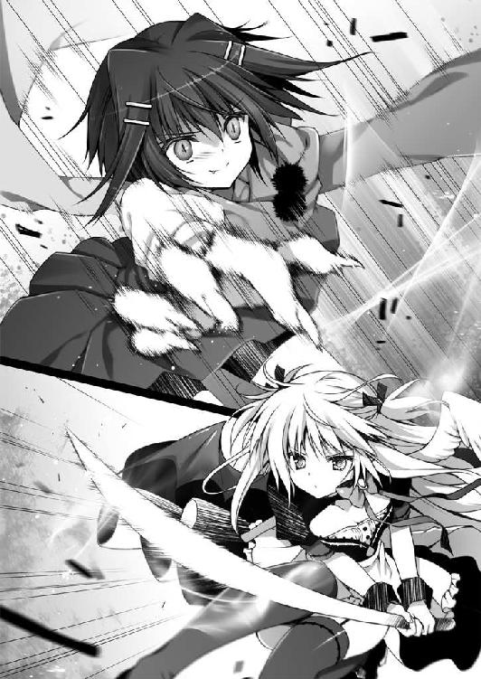
「遅かったじゃない、《千年魔女》」
「正義の味方はここぞという見せ場で登場するものよ、《泥棒猫の爪痕》」
「そう、よかったわ」
「よかった？ どういう意味？」
ありすは魔術札をかまえる。ふっと息を吹きかけると、カードは無数の炎の蝶となってありすのまわりを固めた。
「わたしは、あなたが現れるのを待っていたのよ、《千年魔女》」
「はあ？」
「魔術式展開・《猫弐故蛮》起動」
彼女が唱えた瞬間、俺はからだの自由を失った。
動悸が激しくなる。貧血みたいに頭がくらくらして、全身が重たい。
これは......そうだ、彼女にくちびるを奪われたときと同じだ。
「あ......り、す」
「直道？ どうしたのよ、あんた？」
わからない。自分のからだじゃないみたいなんだ。という、その言葉でさえ伝えられない。気づけば、俺はコンビニの袋の中から割りばしをとりだしていた。それを両手で強く握りしめて、自分の首につきつけている。
「直道っ！」
「そんなものでも頸動脈を傷つければ死んでしまうのよ」
「くっ」
「さあ、《千年魔女》。直道くんを傷つけたくなければ《刻印》を解除なさい」
ああ、なるほどね。と、俺はまるで他人事のように思った。
最初にくちびるを塞がれたとき、からだが満足に動かなくなった。あれは、そういう魔術で、それはずっと俺の中に潜伏していたわけだ。
昼間俺を襲撃したとき、彼女があっさりと逃げたのも、これで頷ける。彼女は、最初から、ありすに《守護の刻印》を解除させる予定だったのだ。一度目の襲撃はそのための伏線。うんうん、まんがや小説ならここはそういう場面だ。
「それはできない」
ありすは言った。
「直道の《凶戒原則》が再稼働したらどうなると思うの？ 半年前は建物一つですんだけど、今度もそれくらいですむとはかぎらない！」
「暴走したらね。わたしはうまくやる。直道くんのことも傷つける気はないのよ？ ちょっと〈力〉を貸してくれればいいだけ」
「身の丈に不釣りあいの〈力〉なんて破滅への近道でしかないわ」
「魔術師というのは、いつの世も、常に『より以上』を目指すものでしょう？ いいえ、それは普通の人間でも同じことじゃない。あらゆる欲望を満たすために科学は発展してきた。それと一緒」
そこまで言って彼女は、にっと目を細める。
「ああ、そっか、なるほどね。あなたも自分の手元にその〈力〉を置いておきたいのね」
「違う！ そんなんじゃない！」
ありすは激高して言いかえす。
「『冥葬会』の任務と言いながら、《無自覚な魔術師》の強力な魔力炉を長いあいだ放置してきたのは、その〈力〉を制御して、自分のものにするためだったんじゃない？ でも、そのせいで半年前の事故が起きた。あはっ、それってあなたのせいじゃない」
「違う！ あたしは......」
「なまぬるい」
次の瞬間、ありすのことを〈腕〉が襲った。
ありすのからだが壁に叩きつけられる。
俺の頭の中は一瞬、真っ白になった。
「力ずくで言うことを聞いてもらうしかないようね」
彼女がまたその巨大な〈腕〉をふるう。
俺は自分ののどに割りばしをつきつけたままバカみたいにつっ立っていて、
なんでだろう、
不意にぷくぷくの肥満児だったころのことを思いだした。
○ ○
その朝、登校すると、そのときにはすでに使われなくなっていた焼却炉の中に、ありすが頭をつっこんでいるのを見かけた。スカートがめくれて、パンツまるだしだった。
「なにしてるの、ありすちゃん？」
俺はありすの背中に声をかけた。ありすは俺の声に驚いて、がんっ、と頭を焼却炉のふたにぶつけた。「いたた......」と涙目になりながら、ありすは俺をふりかえった。
「なんだ、ナオくんか」
「だいじょうぶ？」と、俺は訊ねた。
「平気」と、ありすは答えた。
俺はもう一度、「なにしてるの」と訊いた。
「ちょっとさがしもの」
「こんなところで？」と、俺が口にだすと「まあね」とあいまいにありすは言った。
ありすの頬はススで汚れていた。
「手伝おうか？」
「いい、一人で平気」
ありすは俺の手伝いを頑なに拒んだ。
「そろそろチャイム鳴っちゃうよ。一緒にさがしたほうが早く見つかるよ」
「......そう、だけど」
「手伝うよ。なにをさがしてるの？」
俺が訊ねると、少しためらうようにして、それでも、なんでもないことのようにありすは答えた。
「......上履き」
「え？」
「朝学校きたら、上履きがなくなってた。あはは」
信じられなかった。俺はありすが誰からも好かれていると信じていたから。
なんと声をかければいいのかわからなくて、俺は下を向いてくちびるを噛んだ。
ありすは運動靴のままだった。
下を向いたら、なんでだか泣きそうになって、俺は慌てた。
顔が熱かった。手がふるえた。
「さがすの、手伝う」
俺はかろうじてそう言った。
二人で学校中をさがして、体育館わきのゴミ箱の中からありすの上履きを見つけた。
先生には言わなかった。
「誰にも言わないで。約束して」
ありすがそう言ったからだ。俺は約束を守った。破れば、ありすの名誉を傷つけることになると思った。これは俺たちだけの秘密であるべきだ。
俺はありすの手を握った。強く強く握った。
「ぼくはありすちゃんの味方だよ。ずっと、ずっと、ありすちゃんの味方だから」
ありすはその日も、その日以降も、いつもどおりだった。
ありすは強い。
今も昔も。
でも、ありすは弱い。
今も、昔も。
俺が声をかけたとき、ありすはわざと焼却炉のふたに頭をぶつけたんだと思う。あのとき、ありすはたぶん泣いてたんだ。それを俺に知られたくなかった。俺の前では強がろうとした。そこでありすは、頭をぶつけて半泣きになった、みたいなフリをした。
そうとわかったから。
ありすよりもずっと弱っちい俺は、ありすのことを守ることはできなくても、支えてやれるような男になろうと、あの日、誓ったのだ。
だから──。
──だから。
俺は思いどおりにならない腕をぎちぎち軋ませながら、
割りばしをへし折った。
全身の骨と筋肉が悲鳴をあげる。血管が破裂しそうなほど頭が痛い。
それでも根性を総動員してねじふせる。
「く......そ、がっ！」
ありすが俺に声をかけたのは、俺が《無自覚な魔術師》だったからなのかもしれない。
そうでなければ、ありすが俺なんかに声をかけるはずがないじゃないか。
あのころの俺は暗いガキだった。友達になったって、ちっとも楽しくない。
ありすはきっと任務だから、仕方がなく俺に声をかけたのだろう。
でも、それがなんだというのだ。
そんなのはどうでもいいことだ。
魔術師だとかドッキリだとか知ったことじゃない。
俺は嬉しかった。ただ、本当に嬉しかった。
俺に声をかけてくれてありがとう。俺の友達になってくれてありがとう。俺の手をひっぱってくれてありがとう。俺の幼なじみでいてくれてありがとう。
俺はべつに正義の味方じゃない。
でも、ありすの味方だ。あの日も、今も、これからも。
「俺の幼なじみになにしやがるっ！ 許さねえぞ！」
「直道っ！」
ありすが叫ぶ。
「バカな!?」
ショートヘアの彼女も声をあげる。
しかし、バカでかい〈腕〉は、ありすめがけてふりおろされていた。
あれをまともに食らったら俺もやばいんじゃないかとか、そんな弱気も今は忘れる。
俺はただまっすぐ走る。突進する。バカみたいに声をあげる。
「うらああああああああああああああああああっ！」
ありすのまわりに赤い蝶が舞っている。
「直道、ダメっ！」
俺はありすの前に飛びだす。
《凶戒原則》だっけ？
半年前はそいつが暴走して、校舎がぶっ壊れたんだろ？
よく知らんけど、そんな裏技があるなら、なんとかしてくれよ！
俺はぐっと目をつぶった。
............。
............。
「............ん？」
おそるおそるまぶたを開く。
ふりおろされた〈腕〉は、俺のすぐ真横の壁をバナナの皮でもむくみたいにえぐっていた。あらためて、これはやばかった、と俺は思った。へたしたら死んでた。
俺はぜえぜえと荒い息をつきながら、
「なんで？」
そう訊ねた。
残念ながら、俺の中に眠っていた能力が目覚めた、とかではないみたいだ。
つまり、彼女はわざと攻撃をはずした、ということだ。
「あなたをへたに傷つけたら、《凶戒原則》がまた暴走するおそれがあるもの。それは困るわ。わたしはあくまでもその〈力〉をスマートに利用したいの。そのために《刻印》を解除させようとしたのに、最後で台無しにするわけにはいかないでしょ？」
「よく、わかんないけど」
はからずも、俺は盾としての役にくらいは立ったらしい。
「それに......」
と、彼女は言う。
「無謀と知りながら困難に立ち向かう男の子というものは、なかなかどうして愛おしい」
彼女の腕から、巨大な〈腕〉が消えていく。諦めて、くれたのか？
「《千年魔女》」
彼女は俺のうしろのありすに呼びかけた。ありすは脇腹を押さえながら立ちあがる。
「なによ、《泥棒猫の爪痕》！」
「わたしがここで退いても、またほかのやつが彼の〈力〉を求めてやってくるでしょう。もし、本当に直道くんを守りたいなら、隔離施設に収容するべきなんじゃない？」
「そ、それは......」
「隔離施設？ なんの話だ？」
俺は二人の話に割りこんだ。
「直道くんが所有しているほどの魔力炉を野放しにしておくなんて危険極まりないもの。協会の施設で隔離するのが当然の処置なのよ」
「なんだよ、それ」
「言ってみれば、直道くんは歩く爆弾なわけ」
「俺が爆弾......？」
「必要ない。直道はあたしが守るんだから。隔離施設でひとりぼっちになんかさせない」
ありすが俺の前にでてきた。
「あら、守れてないと思うけど？ 実力を伴わない理想論は醜悪だわ」
「できる！ やってみせる！ あんたにも負けない！」
ありすはカードをかまえる。
しばしの沈黙ののち、彼女は声をあげて笑った。
「その選択のせいで、いつか後悔すればいいわ」
「あたしが直道を守る！ 後悔なんてしない！」
彼女は、今度は俺を見た。なにかを言いかけ、でも口を閉じる。首をふり、「お邪魔むしは退散するわ」と言った。それはたぶん、口にしかけた言葉ではないのだろう。
「ふふ、どうかあなたたちに一つでも多くの勝利がもたらされんことを」
彼女は微笑む。
「願わくは、勝利よりも一つ多くの敗北を」
彼女はとんっと軽やかにバク転をして──消えた。
消えるその一瞬、どうしてだか、俺には彼女が猫に見えた。
その姿はわが家に居候している......。
「助かった」
のか？ まあ、とりあえず危機は切り抜けたと思う。
俺は急いでありすの正面にまわった。
「おい、ありす、だいじょうぶか？」
「あ、うん。平気」
「そっかよかった」
「よくないわよ！」
「どうしてだよ？」
「あたしがついていながら、こんなことになっちゃった。直道を守れなかった。守るって約束したのに......ほんと、あたしなにやってたんだろ。この役立たずめ役立たずめ！」
ありすがわめきながら自分の頭をぽかすか叩くので、それをやめさせる。
「そんなことないって。ありすのおかげで助かった。感謝してる」
すると、ありすのやつ、今度は俺を殴りだした。
「いた、いた、痛いって。なんだよ」
「信じてないくせに......ううん。本当はそれでいいの。直道は普通に暮らしていくべきだった。それが一番なの。直道にはなにも知らないままでいてほしかった」
俺はありすの手をそっと握る。柔らかい、その手を。
「ありすは俺を守ってくれてたんだな。俺が普通に生活できてたのって、おまえのおかげなんだろ？」
俺が歩く爆弾だなんて危険な存在なのだとしたら、確かに隔離施設に収容されていたっておかしくなかったはずだ。でもきっと、ありすがそれをとめてくれていたんだ。俺の知らないところで。
そんなふうに想像するのは、あながちはずれてもいないだろう。
「ありすに、俺と幼なじみなのは偶然じゃないって言われたとき、実はけっこうショックだったんだ。俺はずっと、おまえに救われたと思ってたから」
「......ごめん」
「きっかけなんてどうでもいいんだ。俺はありすと一緒にいられて楽しかった。ありすと知りあえてなかったら、俺は今でも楽しいことなんてなにも知らなかったかもしれない。すごく感謝してる。だからさ、シャンとしろよ。おまえは俺の憧れなんだ」
「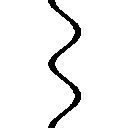っ！」
ありすは顔を真っ赤にさせ、また俺を殴った。
「いた、いた、痛いってば。なんなんだよ」
「あ、あたしを泣かせようとしたな。直道のくせに生意気！」
「むちゃくちゃだぞ、おい」
さすがにこんな事態になってまで、ドッキリだなんて言わない。言えない。信じがたいには信じがたいけれど、この世界には、かくも不可思議なことがあるものらしい。ちょっとずつ受け入れていこう。
「これからは一人で抱えんなよ。なにかあったら俺にも言えよ。役立たずかもしんないけどさ」
だって。
「俺は二四時間年中無休でおまえの味方なんだから」
ダメになってしまった焼き肉弁当とエクレアは、そのままにしておくわけにもいかず、家に持って帰ってゴミ箱に捨てた。
「ごめんなさい」
合掌して頭をさげる。食い物を粗末にすると、いつかバチが当たるのである。
さすがにもう夕飯をつくる気がしない。カップめんでがまんするか。
俺はヤカンに水を入れて、火にかけた。
ありすはダイニングテーブルの椅子に座って、おとなしくしている。なんとなく間が抜けて見えるのは武装メイドのコスプレのせいだろう。さっきの一件のせいで、またちょっと汚れてしまったのではないだろうか。
さっきは、ぽかすか俺を殴っていたありすだけど、食事という話題から、チャーハンひっくりかえし事件のことを思いだしたに違いない。今は、むすーっとしている。
「おまえ、怪我はなかったか？」
と、声をかけた。
「ちょっとすりむいただけよ」
不機嫌そうにありすは答える。俺は頭をがしがしとかいた。
「じゃなくてさ、さっき、フライパンひっくりかえしたとき、火傷しなかったか？」
「......な、なによ。また蒸しかえそうっての？ いいわよ、勝負したる」
「なんで、そうケンカ腰なんだよ」
「直道が先にケンカ売ってきたんじゃない」
俺はため息をつく。
「あれは、ごめん。言いすぎだったし、態度最悪だった。謝るよ。俺はただ、ありすに火傷させたんじゃないかって焦ったんだ。火傷って、ほら、あと残るだろ？ でもよかった。なんともなかったんなら、それでいいんだ。悪かった」
すると、ありすが椅子から立ちあがった。
「......で、でも、直道は火傷しちゃった、よね？」
「大したことない。おまえに怪我がなかったなら、それでいいんだ」
俺は思いだす。ありすを追いかけて、転んで怪我ばかりしていたころのことを。弱虫の俺は泣いてばかりいた。
「痛いよね」
「痛くない」
「そんなわけ──」
「痛くないって言ってるだろ。少しはカッコつけさせろよ」
笑って力こぶをつくってみせた。頼りないかもしれないけど。
ありすの瞳の輪郭がふわりと揺らぐ。
「なお、みち」
「ん？」
「あ、の......あのね、ご、ごめ、なさい......ずず」
「ありす？」
「ごめ......ごめんなさい......ひっく、ずず」
「おいおい、なに泣いてんだよ」
「ずず、だって、だって、ずず」
俺は泣いているありすの頭にそっと手のひらをのせた。背中の羽が揺れている。
「どうしたんだよ、急にしおらしくなっちゃって」
「しおらしくって、ずず、言葉を聞くと、ずず、塩をかけられたナメクジが、ちっちゃくなっていくのを、ずず、連想してしまう」
「なに洟すすりながら、わけわからんこと言ってる」
「ナメクジって砂糖をかけてもしぼむんだって、ずず」
「心底どうでもいい」
ヤカンがしゅーしゅーと蒸気を吐きだしている。
「ほら、いい加減泣きやめ。お湯わいたぞ。ラーメン食べるだろ？」
「ずず、食べる」
「よし、いっぱい食べろ」
「直道の分も食べる」
「いや、俺にも食べさせてくれよ」
ぽんぽんと頭をなでる。
「そういやさ」
俺はついでみたいにして言った。
「......うん」
「俺、コスプレとかよくわかんないけど、ありすのはさ、すごく似合ってるよ」
「......あ、うん......ありがと」
「似合ってるってのも変な言いかたか。つまり、なんて言うか......」
かわいいって言えばよかったのかもしれないけど、恥ずかしくて言えなかった。
「その格好で歩いてると職質されそうだけど」
「......そしたら、三柴直道ってひとに無理やり着させられましたって言う」
「いやいやいや！」
ヤカンがしゅーしゅーうなってる。そろそろ火をとめなきゃ、と思って、ありすからはなれる。
と、ありすが俺のシャツをひっぱった。
「あ、あのね、直道」
「ん？」
「あたしと直道が、その、ずっと一緒にいられたのは、ただ任務だったからってだけじゃなくてね......、あの、あたし......その......あたしは......」
ありすは俺の目を覗きこんでくる。
強い瞳。さっきまでの涙できらきら光ってる。
「あたしね、直道のこと──」
そのとき、俺は不意に気づいた。
ありすのほうから糸が伸びていることに。
なんだろ、と思った。
深く考えずにつまんで、ひっぱる。
「って、ダメ、それ、ひっぱったら──」
「え？」
糸の先はありすの着ている衣装につながっていて、ぷちぷちぷち、と、それはもうおもしろいくらいにありすの穿いているスカートが解体されていって──。
とすん、と布切れが床に落ちる。
「......水色のしましま」
「う、な、も、見るなああああああああああああああああああああああっ！」
そこで俺の記憶は閉じたのである。
どこかから猫の鳴き声が聞こえた気がしたけれど、それはたぶん気のせいだろう。
Don't Trust Magical Girl is closed.
さて、先日の奇々怪々、摩訶不思議なる一件から、俺の生活は一変した。
かと言えば決してそのようなことはなかった。
ちくわぶが、いつまでもうちに帰ってこなくなったくらいのものだ。もう、帰ってはこないのかもしれない。
俺の左胸には《守護の刻印》なる「森」みたいな形をした三つの十字架のあとが残されている。
しかしながら俺は、物語の主人公がそうであるように、これまで秘められていた、なんらかの特殊な力に目覚めるということもなくて、相も変わらず、のんべんだらりとした生活を送っていた。
夜中にかめはめ波を撃つ練習をしたり、座禅を組んで精神を集中させ、週刊誌の袋とじ部分を開かずとも透視できないものかと研鑚をつんだりもしたし、テストのときには、自動筆記能力が目覚めぬものかと心底願ったものだが、今のところ、なんの能力も開発されていない。役立たずめ。
なので先日のあれは、ひょっとすると悪い夢かなにかだったのではないだろうか。
俺はそんなふうにも思いはじめていた。
今日、この瞬間までは。
○ ○
ぴぴぴ。
ぴぴぴ。
「......うるさい」
ぴ。
俺は腕を伸ばして、目覚まし時計の息の根をとめてやる。まったく、目覚まし時計という輩は無粋でいけない。朝からけたたましく鳴り響いては、俺の眠りを妨げようとする。情緒の欠片もない連中である。
そのまま寝がえりを打つ。すぐさま眠気のビッグウェーブにさらわれて、俺の意識は再び深い安眠の海へ沈んで──いこうとしたところで部屋のドアが開かれるのに気づいた。
気づいてはいたのだけれど眠気のほうが強力で反応はしなかった。
さっ、とカーテンが開かれて、朝日が差しこんでくる。俺は眩しくて、もぞもぞとベッドの上でまるくなった。
「お兄ちゃん、起きて」
ゆさゆさ、と揺さぶられる。
「んん、あと五分」
「ダメだよ、お兄ちゃん。ほら、起きて」
ゆさゆさ。
「んん、あと一〇分」
「増えてるよ、お兄ちゃん。早く起きないと遅刻しちゃうよ」
「もうちょい寝かせてくれよ、ありす」
「なに言ってるの、お兄ちゃん。スズはありすちゃんじゃないよ、スズランだよ」
「......は？」
もっそりと俺はベッドの上で起きあがった。
そして目を見開いた。眠気が一気に吹っ飛ぶ。
そこには見も知らぬ、
小さな女の子が立っていた。
全長一四〇センチくらいしかないんじゃないかって感じだ。
目が大きい。ほっぺがまあるい。つやつやした髪はショートボブでまとめられているけど、左右の横っちょをちょっと伸ばして三つ編みにしていた。
そしてなによりも不可解なことに、
スクール水着にふりふりの白いエプロンをつけていた。
「ぎあああああああああああああああああああああああっ！」
俺があらんかぎりの悲鳴をあげると、
「うにっ!?」
その子もびくんっとなった。
「な、なに、お兄ちゃん？」
俺は驚きのあまりベッドから転げ落ちた。けれど、すぐさま体勢を立てなおし、ずざざざっと部屋の隅に避難した。かのブルース・リーを始祖とする最強格闘技、截拳道のかまえをとる。
「ど、どちらさまですか？」
俺はおそるおそる訊ねた。
見知らぬ女の子はくにっと首を傾げる。左右の三つ編みがひょこっと揺れた。
「なに言ってるの、お兄ちゃん？ 妹のスズランだよ？」
「妹......俺の？」
なんの話だ。なんの話だ。なんの話だ！
「俺は一人っ子だ。俺に妹なんていない」
妹を自称するスズランという少女はおっきな目をしぱしぱさせた。
それから、にこっと微笑む。てけてけと俺の前までやってきて、そっと俺の手を握った。少女の手はちびっこくて柔らかかった。
「やだなあ、お兄ちゃんは。まだ寝ぼけてるの？」
「は？」
「ほら、もう朝ごはんできてるよ」
ちょいっと俺をひっぱる。
なんなんだこれ。なんなんだこれ。なんなんだこれ！
「って言うか、どうしてそのような格好をしていらっしゃるのでございますでしょうか？」
ちょこっとでも押したら、はずれちゃいそうな肩。
控えめな胸に、細い腰。ホワイトアスパラみたいな生足。
そして謎すぎるスクール水着にエプロンという格好。
その組みあわせの意図はさっぱりわからないし、なにより、そこはかとなく中年男子の発想な気がするのだが......。
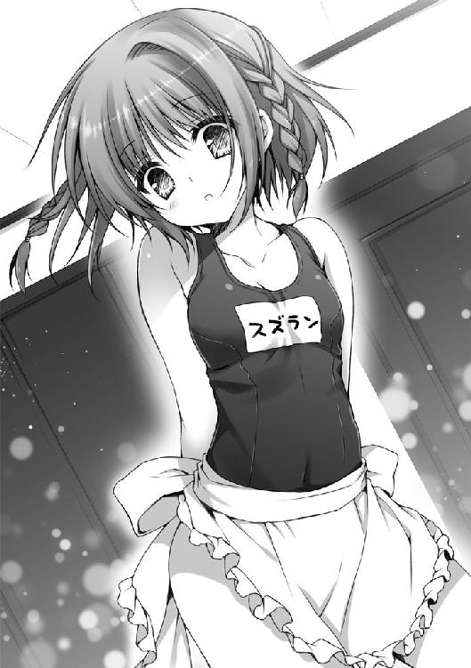
俺が訊ねると、自称妹は急に顔を赤くした。もじもじとエプロンの裾をひっぱる。
「そ、それは、お兄ちゃんが『偉大なる兄を起こしにくるときは常にスクール水着着用を義務づける。うへへ』って言ったから......」
前世からやりなおしたほうがいいかもな、そのお兄ちゃんとやらは。
そんなやりとりをしつつ、俺はある可能性に思い当たった。
すなわち、この子は本当に俺の妹であるという可能性だ。
より正確に言うと、父さんか母さん、どちらかの隠し子なのではないだろうか。
今のスク水エプロンのくだりは、まあ、場を和ませるための冗談かなにかなのだろう。俺はそんなアホな発言など間違っても口にしない紳士である。実際のところ、記憶にないし。
「ちょっとタイム」
俺は自称妹のスズランに言って、ケータイを握りしめると、トイレにこもった。
とりあえず母さんに電話をかけることにする。
『あら、おはよう、ナオ。どうしたの、こんな朝から電話なんて』
「おはよう、母さん。単刀直入に訊くけど、スズランはどっちの子なの？」
『なによ、やぶからうまい棒に』
「今朝、スズランっていう女の子が俺の妹だって言って、やってきたんだ」
『あんた、寝ぼけてるの？』
母さんは呆れたように言った。
「どういう意味？」
俺には意味がわからない。眠気なんて、とっくに吹っ飛んでるっつーの。
『......どういうって、あんた、本気で言ってるの、それ？』
「本気に決まってるだろ」
電話の向こうで、母さんはしばし無言になった。
『あんた、頭痛がするとか、目眩が起こるとか、なにか体調に変化はない？ 最近、物忘れが激しいとか、なんでもいいの』
「いや、そういうのはないけど......なんで？」
ちょっと先日、魔術師とやらに襲われたくらいだ。
『もしかして半年前の事故の後遺症みたいなのが今ごろ起こったのかと思って』
半年前の事故の後遺症？
「......なにそれ、どういう意味だよ？」
『スズはうちの子よ。お父さんとお母さんの大切な子供。あんたの妹じゃない。忘れたって言うわけ？』
俺は驚いて、一〇秒ほどその場で硬直していた。
ナニ言ッテンダ、コノヒト。
『冗談で言ってるなら怒るわよ。冗談じゃなくて本気で言ってるなら......ちょっとお父さんと相談するわ。病院で精密検査を受けなくちゃならないかも』
こっちは冗談でもなんでもない。
でも、向こうも冗談で言っているようには聞こえなかった。
コンコン、と、トイレのドアがノックされる。
「お兄ちゃん、だいじょうぶ？」
俺は慌てて、「すぐいく」と答えた。
母さんにも「ごめん、ちょっと混乱しただけ」と短く言って、電話を切った。
ドアをあけると、スズランが心配そうな顔をして立っていた。スクール水着から普通の服に着替えていて、俺はいくらかホッとする。
「どうかしたの、お兄ちゃん？」
「いや、なんでも、ないよ」
食卓には納豆と白いごはん、焼いたサケにほうれん草のおひたし、豆腐とわかめの味噌汁が並んでいた。見も知らぬ自称妹と向かいあって朝食などとっている場合ではなかったのだけれど、空腹には勝てず、警戒しつつも俺はずびずびと味噌汁をすすった。
「う、うまい！ 市販の和風だしにはない上品な味わい。味噌の香りも飛んでいない」
「ちゃんと昆布でおだしをとったんだよ。お味噌も入れてからは煮立ててないから」
「お主、できるな」
「えへへ、お兄ちゃんが喜んでくれるようにがんばったから」
てれてれっ、とスズランは笑った。
な、なんだ、くそう。かわいいぞ。
結局、ぜんぶキレイに平らげた。
しかし、朝食に思いのほか時間をかけすぎたので、急いで制服に着替えねばならなくなった。スクールバッグを担ぎ、自転車のカギをポケットに入れた。
スニーカーをひっかけて、よしいくか、と思ったところで、
「お兄ちゃん」
と、スズランが俺を呼んだ。
「ん？」
ふりかえると、スズランは目を閉じ、ややあごを上向きにつきだしながら、胸の前で手をあわせて立っていた。
「な、なに......かな？」
「え、えっと、その......うに」
スズランは恥ずかしそうにうつむいた。
俺の目が節穴でなければ、これは「遅刻した朝に転校生と衝突事件」や、「お風呂にする？ ごはんにする？ それとも、あ・た・し？」と並べても一切ひけをとることのない、かの有名な「いってきますのちゅー」とかいうものではなかろうか。
......って、なんだそのハレンチなイベントは。俺は一歩あとずさる。
「おにい、ちゃん？」
スズランは瞳をチワワみたいにうるうるさせながら、俺を見あげてくる。
なんだ、このおねだり破壊力は！
俺にはもちろん、登校前に妹にキスをする習慣なんてない。妹自体、いないはずなのだから当然だけど。
「わ、わかったわかった」
なに一つわかってなどいないが、この場は穏便にすまそうと思う。
スズランは再び目を閉じて、くちびるをつんととがらせた。ぷるぷると肩が震えている。
俺はどぎまぎしながら、スズランの肩に手をおいて、おでこに軽くちゅっとやった。
「こ、これで勘弁してほしいんだが」
「むむむ......妥協する」
俺はホッと安堵のため息をつく。
そして自転車を飛ばして、学校へとつづく道をひた走った。
○ ○
学校に到着するや否や、俺は教室ではなくて、被服室へ向かった。ここは手芸部の部室にもなっている。俺の幼なじみはここにいるはずだ。
「ありす！」
俺はノックもせずにドアを開いた。
ありすは数人の女子に囲まれて立っていた。ほとんど下着みたいな格好で、なにやら採寸されているところらしかった。
「違う、わざとじゃない」
「とっとと、でてけっ！」
分厚い『少年ガンガン』が飛んできて、角っこが俺の顔面にめりこんだ。
閑話休題。
「それで、あたしになんか用？」
パイプ椅子に偉そうに腰かけたありすが、床に正座させられている俺を睨みおろす。この位置だと、ありすのひざこぞうがすごく近くにある。太ももに貼ってある絆創膏もよく見えた。
ありすのほかにも手芸部の女の子たちがいたのだけど、二人で話したいと申しでると、みんな場を譲ってくれた。「告白かな？」「告白だよね」「どうする？ 盗聴する？」なんて若干物騒な会話が聞こえたような気もしたけど......。
二人きりになってから、俺はありすに今朝の出来事を説明した。
目を覚ますと、スズランという謎の少女が三柴家を闊歩していたこと。
彼女は俺の妹らしいということ。
しかし、俺には妹などいないということ。
母親に電話で確認すると、俺のほうこそ間違っていると言われたことなど。
「なあ、どう思う？」
「どう思うって......」
ありすは胸の前で腕を組んだ。被服室の窓から朝日が差しこんできて、ありすのキャラメル色の髪がきらきらと輝いて見える。
「先日のあれ以降なにもなかったけど、あのスズランって子も魔術師なんじゃないか？」
俺は自分の考えをありすに伝えた。ありすならこの状況をなんとかしてくれるのではないかと期待していたのだ。
なのに、
「魔術師ぃ？」
ありすは声を裏がえらせた。がたん、と椅子からずっこけるような格好をする。
「......どうしたんだよ、急に。そのリアクションは前世紀のものだぞ」
「どうしたもこうしたも、あんた自分がなにを言ってるのかわかってる？」
「俺、おかしなこと言ってるか？」
ありすは大仰にため息をついた。
「あのねえ、魔術師なんているわけないじゃない」
おまえこそなに言ってるんだよ、と、俺は思った。
ありすは足を組みかえる。
「そういうのはあくまでもフィクションでしょ。まあ、魔術とか魔法とかあったら楽しそうだとは思うけど」
「フィクション......」
「そうよ」
「ちょ、ちょっと待て。おまえは『冥葬会』の《千年魔女》なんだろ？」
「なにそれ？」
「なにそれって......。じゃあ、《凶戒原則》は？ 《守護の刻印》は？」
「高校生にもなって中二病を患うと、あとあと大変よ？」
「おまえが言うな！ てか、これだよ、これ」
俺はその場でワイシャツのボタンをはずした。
「半年前、俺の中にある《凶戒原則》が暴走したとき、おまえが封印を施したしるしが、この『森』みたいな形した......」
「なにもないじゃない」
なにもなかった。まくりあげたワイシャツの下、心臓の上らへん、昨日まであったはずの火傷のあとがすっかりなくなっている。
「なんでだ！」
「直道、だいじょうぶ？」
ありすはかわいそうなものを見るような視線を俺に向けてくる。
「......そうだ。おまえ、太ももの絆創膏！」
ありすの太ももに手を伸ばすと、ぎゅむっと顔面を蹴られた。上履きが思い切りめりこむ。
「こんのエロガッパ！ 成敗してくれる！」
「ち、違う。その下に──」
俺が言いかけてる途中で、ありすは絆創膏をぺりっとはがした。
「これは虫さされで腫れちゃっただけだし」
ドウイウコトダ？
ナニガドウナッテル？
「それにスズちゃんはあんたの妹でしょうが。なに記憶喪失みたいなこと言ってんのよ」
ありすは人差し指で、俺の額をつんとつつく。いつも手首にしているシュシュが俺の額に触れた。
「あんなに甲斐甲斐しくてかわいらしい妹なんてめったにいないわよ。ほかには『カードキャプターさくら』のさくらちゃんか、『男はつらいよ』のさくらか、どっちかくらいのものなんだから。それを、俺に妹はいない、なんて言ったらスズちゃんかわいそうじゃない。スズちゃんと全国のお兄ちゃん志望者に謝りなさい」
ありすのたとえはよくわからなかったけれど。
「スズランは、俺の、妹」
「直道、あんた、ほんとにだいじょうぶ？ ちょっと変よ？」
ありすが深く眉を寄せて、俺の顔を覗きこんでくる。
「......あ、ああ」
目眩がした。いったい、なにがどうなっているんだろう。
「顔色悪いわよ。保健室いったほうがいいんじゃない？」
「......たぶん、『ガンガン』を食らったせいだよ」
「むう」
「いや、悪い。ちょっと、なにか勘違いしてたみたいだ。寝不足、かな」
俺は立ちあがる。足もとが覚束ない......。
「だいじょうぶなの？ ほんとに気分悪くない？」
「ああ。邪魔して悪かった」
俺はそれだけ言い残して、被服室をあとにした。
ちょうど目の前を大名行列みたいにして、細雪麻乃と親衛隊の面々がとおりすぎていく。キレイな黒髪に赤いリボンのカチューシャ。透けるように白い肌と、特徴的なタレ目。学年一、いや校内一と噂されている美少女と、その親衛隊。いつものことながらすごい光景だな、と頭の片隅で思った。
俺は教室には向かわず、体育館のほうへ歩いていき、水道でじゃぶじゃぶと乱暴に顔を洗った。水が滴って、ワイシャツも少し濡れてしまった。
そのまま、俺はその場でぼーっとしていた。
セミが鳴いている。昨日は鳴いてたっけ？
思いだせない。
昨日の俺はスズランとどんなふうに接していた？
思いだせない。
少しすると、チャイムが鳴り響いた。
教室いかなきゃ、と思いつつ、からだが動かなかった。
「俺の頭はおかしくなっちゃったのかな......」
ふと、朝、母さんが俺に言った言葉を思いだす。
──あんた、頭痛がするとか、目眩が起こるとか、なにか体調に変化はない？
──もしかして半年前の事故の後遺症みたいなのが今ごろ起こったのかと思って。
半年前の大晦日、俺は母校である小学校の倒壊に巻きこまれて入院するはめになった。
でも、事故に遭う寸前の記憶さえも俺にはない。
医者はいつか思いだすだろうと言っていたけど、いまだになにも思いだせずにいる。
ひょっとして、俺は頭の回路がおかしくなってしまったんじゃないだろうか。
だとしたら。
こないだのありすとの一件はすべて俺の妄想みたいなもので。
現実にはなにも起こってなんかいなくて。
ありすと確かめあった絆のようなものも、ぜんぶ俺の思いこみにすぎなくて。
そして。
俺は大切な妹のことを忘れている。
○ ○
って、そんなことが現実に起こりうるものなのだろうか？
自分には生き別れになった妹がいるはずだ、などと主張する心の病を抱えた人たちが存在することは知っているが、俺の場合は妹の記憶がないのである。
うーん。
間違いなく自分の記憶は正しいと自信を持てないところがちょっと怖い。
人間の記憶なんてあやふやなものだ。実際、俺は事故に遭ったときの記憶がないし、毎朝、目覚まし時計をとめているという意識もない。
そう言えば、今朝はありすのやつ、俺を起こしにこなかったな......。
学校が終われば、部活動に所属していない俺は、とくに用事もないのでまっすぐ家に帰ることとなる。学校から家まで自転車で二〇分くらいの距離（バスを利用すると遠回りで逆に時間がかかる）なので、すぐに帰りついてしまった。
自転車からおりて、わが家を見あげる。
いつもどおりの自分の家に見える。でもどこか違和感を覚える。よく知っているはずなのに、ぜんぜん知らない他人の家みたいだ。
この中には謎の妹がいる。記憶にない俺の妹が。
......どっか寄り道してこようかな。
チキンな俺は自転車のサドルにまたがりなおす。
というところで、
「おかえりなさい、お兄ちゃん」
背後から声をかけられた。
「うっ......た、ただ、いま」
ゆっくりふりかえれば、そこには買い物カゴをさげたスズランが立っていた。
「早かったね、お兄ちゃん」
にこっとスズランが微笑む。左右の三つ編みがちょろーんと揺れた。
俺もにへらっと笑いかえす。
「ああ、うん、まあ」
ここで逃走するのも不自然なので、結局俺はスズランにつづいて家の中に足を踏み入れることとなった。
玄関を抜けたとたん、ふわりと甘い香りが俺の鼻をくすぐる。
「な、なんだ、これは!?」
俺は自分の目を疑った。ごしごしとこすって、もう一度目の前の光景を確認する。
家の中がまるで新築のようにキレイに掃除されていた。これまでだって、とくべつ汚かったというわけでもないのだけれど、見違えるようだ。
玄関には花瓶に活けられた花が飾られている。廊下は眩しいくらいにぴかぴかだ。
「はい、お兄ちゃん」
スズランが俺の分のスリッパを用意してくれた。普段はスリッパなんか使わんのに。
「あ、ども」
ぺったんぱったん、とスリッパを鳴らしながら、スズランがリビングとつづき部屋になっているキッチンまでいって、テーブルに買い物カゴを置く。
「夕飯はお兄ちゃんの大好きな親子丼ね」
「ああ、うん」
なぜ、俺の好物を知っている。妹だからか？
当然のようにリビングもキレイになっていた。ほこり一つない。フローリングの床も窓もぴっかぴかなのである。
「掃除、したんだ？」
「うん。お兄ちゃんが帰ってくるまでに、ぜんぶ終わらせておこうと思って......それと、あの」
スズランは買い物カゴから食材をとりだしながら、ちょっと恥ずかしそうに言った。耳とほっぺたが、ほんのりと赤い。
「あの、その、お、お兄ちゃんの部屋もちょっとだけ掃除したから」
その瞬間、血の気がひいた。
「そ、それって......」
「お兄ちゃん、その、スズにはまだちょっと早いけど、でも、がんばるから」
「うわああ！」
俺はリビングを飛びだし、階段を駆けあがり、自分の部屋の扉をあけはなった。
俺の部屋も見違えるようにキレイに掃除されていた。もはや、俺の部屋ではないかのようでさえあった。
そして、机の横にちんまりとそいつらが整理されて置かれていた。
「ぐはっ」
俺はあまりのダメージに、血を吐き、その場で膝をついた。
まったくなんたることであろうか。妹に女体の研究報告書及び、活動記録ＤＶＤを見られてしまった。いや、これはあくまでも研究熱心ゆえの収集であって、決して邪念とかそういうものではないのである。勘違いされては困る。
「いったい、おまえはなにをがんばると言うのだ」
俺は呟いた。
とりあえず、研究報告書とＤＶＤは目のつかないところにしまっておく。
それから一階に戻った。
スズランはエプロンをつけて早くも食事の用意をはじめている。
手持無沙汰もいいところだった。のんきにゲームとかできないし。
仕方がないので、少し早いけれど風呂でもわかしておこうかなと思って、浴室へ向かう。と、浴槽までも、これでもかというくらいキレイに磨きあげられていた。いっそのこと、新品のときよりもキレイになったのではないかと思うくらいだ。タイルに残っていたはずのカビとか、ひとっつもない。
完璧すぎる。
今さら手をくわえることなどなにもなく、蛇口をひねり、お湯だけはっておいた。
「なんだかなあ」
結局、手持無沙汰のまま時間はすぎて、そわそわしているうちに、
「お兄ちゃん、夕食の用意ができたよ」
夕飯の支度が整ったらしかった。
俺はなんとも言えない面持ちで、食卓についた。目の前には甘い香りが漂うふわとろの親子丼と揚げだし豆腐、ごまを和えたインゲンが並んでいた。
「い、いただきます」
「どうぞめしあがれ」
手をあわせてから、まずは親子丼を口に運ぶ。
「う、うまい。なんだこれ、こんなうまい親子丼は食べたことがない」
俺はもりもりと親子丼を胃袋におさめていく。
「えへへ」
と、スズランははにかんだ。
それがいちいちかわいらしい。なんなんだろう、この子は。
「お肉屋さんでね、今日、天に召されたばかりの新鮮な鶏肉を買ったんだよ」
「............」
その言い方はちょっと食欲を減退させるものが......。
「あ、お兄ちゃん」
「え、なに？」
正面に座っているスズランがにゅっと腕を伸ばしてきた。
「ほっぺたにごはん粒がついてるよ」
ぴっとそれをつまみ、ぱくっと自分の口に入れた。
はたから見たら、俺は郵便ポストよりも赤くなっていたことだろう。
こんなのまるで新婚夫婦みたいではないか。
恥ずかしさを紛らわすために、よりいっそうもりもりと食べた。
「うまい、おかわり！」
──って、すっかり籠絡されている......。
なにをやっているんだ、俺は。餌づけされてる場合じゃないぞ。
和やかな夕食後、俺は自室で座禅を組み、精神統一をしながら黙考した。
この不可解な現状をどうにかしなくてはならない。
さしあたってすべきことは......なんだろう？
よく考えると、なにも困ることはないのだった。
強いて言えば、記憶が曖昧である、というその一点だけだ。
妹のことは記憶になく、先日のありすとの一件までも妄想であった、というのであればいささか心もとない。
ただし、それだけなのだ。それを受け入れることにどんな抵抗があろうか。この世界には不思議なことはなにもなく、俺を狙って怖い魔術師がやってくることもない。優しくてかわいい妹と、仲よく普通の生活を送ればよい。
......それはそうなのだけど。
でも、それもなにか変だ。いや、変と言ったら、こないだの事件のほうがよほど変なのだけど、それでも、なんというかおさまりが悪いと言うか。
妙な不安定感。
それがなにに由来するものなのだろうか、と考えて、はたと気づいた。
今日一日、俺はありすとは、ほとんどしゃべっていないのだ。朝、俺から被服室にいったとき以外、まったくと言っていいほど話をしていない。
今朝、俺を起こしてくれたのはスズランだった。
でも俺は、いつもありすに叩き起こされていたはずなのだ。
もちろん、自分でちゃんと起きることだってある。そうすると、ありすはひどく無念そうな顔をして見せたものだ......。
スズランが毎朝俺を起こしてくれているのなら、ありすが俺を起こしにくることなんてないはずだ。合カギだっていらないだろう。
んー、どういうことなんだ？
そういえば、ありすの雰囲気もいつもと違った。べつによそよそしいってほどでもなかったけど、なにかが違った。言葉にはできない、なにかが......。
などと考えているうちに、うつら、うつらとした。
かくん、とからだが倒れそうになって、慌てて体勢を立てなおす。口からよだれがこぼれそうになり、手で拭った。おなかがいっぱいになって、それで目を閉じていたものだから、怒涛のごとく眠気が押し寄せてきたらしい。俺は頭をはっきりさせるために、風呂に入ることにした。
着替えを持って浴室へ向かう。
そこで、俺は風呂にまつわるある重大な問題に気づいた。
通称、お風呂でばったり──学術的専門用語で言うところの、のび太的展開である。
ざっくりと言えば、異性（しずかちゃん）がお風呂に入っているところに誤って姿を現してしまうというイベントだ。まあ、しずかちゃんはお風呂に入りすぎだと思うが。
それはともかく、ここでスズランとお風呂でばったりとか、よろしくない。
俺は全年齢対象の存在でいたいのだ。
よって、まずは目視で浴室の明かりを確認した。非常に有効な手段である。夜、お風呂に入るときには明かりをつける。当たり前だ。
そして明かりはついていなかった。ということは誰もいないのである。
俺はホッと息をつく。
しかし、ここで油断してはならない。念には念を入れてノックもする。朝、被服室ではいきなり突入をして、文字どおり痛い目にあってしまった。俺はちゃんと学習できる男なのである。
返事はなかった。
やはり誰もいない。
そのことに多大なる安堵と、一抹の寂しさを覚えつつ、俺は脱衣所で服を脱ぎ、浴室の曇りガラスのドアを押しあけ、それから、ざぷんっと湯船につかった。
「極楽極楽」
そのまま、しばらく、ぼーっとしていた。また眠気がやってくる。
と、いきなり。
がしょんっという音がして浴室のドアがあけられた。
「うわあああっ、な、なにしてるんだ！」
バスタオルをまいたスズランが立っている。
俺は慌ててタオルを湯船の中にひっぱり入れて、腰のまわりに巻いた。
一人でいる生活が長かったせいで、お風呂場のカギをしめるという習慣が俺にはなかった。油断していた。まさか、こっちのパターンだったとは。
「えっと、あの、お兄ちゃんの背中、流してあげようと思って」
ほんのり頬を染め、もじもじしながらスズランは言う。
「い、いや、いいから。自分でできるから」
「遠慮はいらないよ、お兄ちゃん。スズ、お兄ちゃんのためならなんでもできるもん」
「いやいやいや」
「そ、それに。昼間、お兄ちゃんの部屋で見た本にも、そういうのあったし」
「いけません、ああいうのを読んでは！」
正確には、俺もまだ一八歳未満だから読んだらダメなわけだけども。
「と、とにかく。いろいろダメだって。バスタオルなんて防御力低いし。そのまんまで冒険にでてみろ。しょっぱなで、スライムにでもやられちまうぞ」
「それは平気だよ。ほら」
ぺろーん、とスズランはバスタオルをとった。
「ひい──って、あれ」
下はスク水だった。
「あ、ああ、朝のやつか」
あらためて、お淑やかな胸と、ホワイトアスパラのような足を確認する。
俺の妹はいったい、いくつなのだろうか？ 中学生くらいか？
そういえばそんなことも知らなかった。知らないのではなく、思いだせない、のか？
昼間は学校......いってないよな。それってどういうことなのだろう。
俺の疑問をよそに、スズランは有無を言わさず俺の手をひっぱって、プラスチックの椅子に座らせた。からだを洗う用のスポンジにたっぷりボディーシャンプーをつけて、ごしごしと俺の背中を洗いはじめる。
「気持ちいい、お兄ちゃん？」
「ああ、まあ。気持ちいいよ」
なんなんだろう、この状況は。理解不能だ。
と。
「──っ！」
ふにっ。
俺の背中になにかが押しつけられている。柔らかくは──ない。
が、それでも微妙な弾力がある。これは第二次性徴で膨らむと、もっぱらの噂であるところの乳房とかいうやつではなかろうか......。
「な、なな、なにをなさっていらっしゃいますか？」
「あ、えと。お兄ちゃんのＤＶＤで、こうやって──」
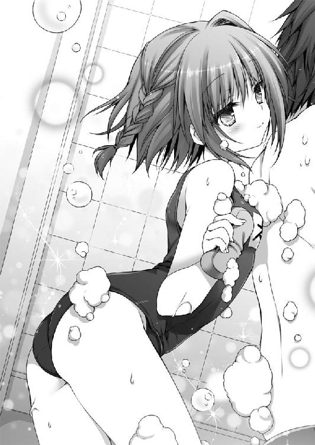
「それはダメ！ 禁止します！」
スズランの言葉を遮って俺は宣言した。それは、ほんとダメ！
俺の怒鳴り声に、スズランはびくんっとなった。
それから、しおしおとうなだれる。左右の三つ編みもしょんぼりたれていた。
「ご、ごめんなさい。スズ、お兄ちゃんに喜んでもらいたくて......」
今にも泣きだしそうである。なにやら、ちびまる子ちゃんみたいにどんよりした影がスズランの頭上にさしている。
妹ってこんなにもめんどくさいものなのか。
「ああ、ごめんごめん、怒鳴って悪かった」
「スズはお兄ちゃんの邪魔なんだね。いらない子なんだね」
「そんなことない、そんなことない」
「ほんと？」
スズランは上目づかいに俺を見る。チワワを思わせる黒目がちの瞳が、うるうると潤んでいた。
「ほんとほんと。だから泣くなよ」
ぺたぺたとスズランの頭を撫でる。
「な？」
こくん、と、スズランはうなずいた。
俺はこんなにもヘタレなのか、と若干へこむ。
それから......。
スズランの巧みなる話術によって誘導された結果、どうしてだか一緒の湯船につかることと相成った。もう、なにもわからない。なにがわからないのかもわからないということまでもわからない。
湯船の中は狭いので、からだが密着する。
スズランは俺の膝の上に座るような格好で、ちょこんと三角座りをしておさまっていた。
「いっい、湯っだっなっ、あははん♪」
と、歌を口ずさんでもいる。
「お兄ちゃん、気持ちいいね」
「あ、ああ。うん」
頭がくらくらした。
スズランはどこから用意したのか、アヒルの人形をぷかぷか浮かべて遊んだりもしている。ぴこぴこ、とお尻をつつくと、てやんでい、という具合にアヒルが泳ぎだす。
仮にスズランが本当の妹だったとしても、俺には彼女が妹であるという記憶がない。ほとんど初対面の年下の異性なのだ。年下の異性など、俺には宇宙人にも等しい。
どうすりゃいいんだ。どうすりゃいいんだ。どうすりゃいいんだ！
「ああ、もう！ なにがどうなってるんだ！」
ざばーっとしぶきをあげながら立ちあがる。
「うに？」
ずざーっと血の気がひいた。
○ ○
「んあ？」
起きあがると額から濡れタオルが落ちた。
俺はリビングにあるソファの上で寝かされていたようだ。上半身ははだかだったが、下半身はパンツをはかせられていた。......深くは考えないでおこう。そばにＴシャツとハーフパンツがたたまれて置いてあったので身につける。
俺は風呂で湯あたりして倒れたのだった。うん、その記憶はなんとなくある。
ということは、スズランがここまで俺を運んでくれたのだろうか。身長差もあるし、かなりの重労働だったはずだ。
俺はあたりを見まわす。
しかし、リビングのどこにもスズランの姿はなかった。
明かりはついたままだ。
今は何時だろう、と思って時計を見あげる。夜の一〇時を少しすぎたところだった。
俺は立ちあがる。まだちょっと足もとがふらふらした。
スズランは二階にでもいるのだろうか。
一応、目を覚ましたと伝えておいたほうがいいかな、と思った。
運んでくれた礼も言わなければなるまい。
それにしても情けない。あれくらいでのぼせて倒れるなんて。
そんな軽い自己嫌悪に陥りながら俺は階段をあがった。
二階には俺の部屋と両親の寝室、それから「スズのおへや」と書かれた部屋があった。
俺の記憶によれば、ここは父さんの書斎だったはずなのだけど......。
一応、ノックをしようと軽く手をふりあげる。
と。
中から声が聞こえてきた。
「......はい、計画どおり進行中です」
スズランの声だ。誰かいるのか......いや、電話で話しているのかもしれない。
計画って、なんの話だろう。
なんとはなしに聞き耳を立ててしまう。
「問題ありません。彼はまだなにも気づいていないようです」
......彼？ ってのは、ひょっとして俺のことだったりして。
そこに考え至って、唐突に背筋が冷たくなる。
スズラン、おまえはいったい誰と話しているんだ？
俺はノックしようとしてふりあげた手をそっとおろす。音を立てないように、慎重にドアノブをまわした。女の子の部屋を勝手に覗き見るなんて最低だけど、でも、今はなにかそういう場面ではないと思う。
「妹としての同居生活も順調であると思われます。まだ多少の違和感を抱いてはいるようですが、徐々に妹の存在を受け入れつつあります」
細く開いたドアの向こうにスズランの姿があった。スク水から普段着に着替えている。でかいカエルに向かって話しかけているようだ。
......カエル？
薬局の前に立っている、あれだ。
なぜに？
スズランは床に正座をしていた。
「第一段階は成功とみてよいのだな？」
カエルがしゃべった。なにやら渋い感じの男の声をしていた。
「はい」
スズランは重々しくうなずく。
「それでは《心中屋》、即時第二段階へと移行せよ」
カエルは、スズランのことを《心中屋》と呼んだ。なんだ、それ？
「お言葉ですが、それはいささか性急かと思われます」
「一刻の猶予もない今、性急もなにもない」
「ですが、彼に自覚を促すためには、より強固な信頼関係が必要かと」
「向こうは膠着状態がつづいている。彼の現場復帰以外に戦況を好転させるものはない」
「それはわかっています。ですが彼に拒絶された場合、打つ手がなくなります。せっかく築きあげた関係も修復不可能となってしまいます」
「その場合はプランＢを遂行せよ」
「プランＢ......。しかし、それは《虚夢への供物》の暴発を促してしまうのではありませんか。半年前の失敗もあります」
『虚無への供物』って、そういうタイトルの小説あったよな、確か。
「そうなっては、彼にどのような悪影響がでるか」
「われわれには時間が残されていないのだよ、《心中屋》。きみが彼のことを慕っていることは承知している。だが、ときには強硬手段をとらねばならないこともある」
「ですが」
「くりかえす。最悪の場合はプランＢだ」
カエルは言った。
「彼を──三柴直道を殺害せよ」
ギシッ。
カエルのひと言で、俺は一歩あとずさってしまった。そのせいで床が鳴った。
スズランは当然、その音を聞き洩らさなかった。
こちらを睨むような目をしてふりかえる。
「ああ、お兄ちゃん。聞いちゃったんだね」
そう言って、ゆっくりと立ちあがった。
「あ、いや......」
「ダメだよ、盗み聞きなんて」
やばい。とにかくやばいぞ。これはぜったいやばい。逃げなければ。
俺は慌てて階段を駆けおりる。
どうすりゃいい？
そうだ、ありすのところにいくんだ！ ありすならなんとかしてくれる。
スニーカーを足にひっかけ、玄関のドアを急いであける。
と、
「うわあああああああっ」
危うく落っこちるところだったのを踏みとどまる。
「くそ、なにが、どうなってんだよ」
俺の家の外は崖っぷちになっていた。
自分の目を疑う。
右の家も、左の家も、お向かいさんもない。
ただ、俺の家だけが、ぽつーんと絶壁に建てられている。
「嘘、だろ？」
「お兄ちゃん」
呼ばれて、うしろをふりかえる。
スズランが立っていた。
自称、俺の妹。でも俺の記憶にはいない女の子。
「な、なんなんだよ、さっきの？ おまえ、誰なんだ？ あのカエルはなんなんだよ？」
「あーあ。せっかく良好な関係を築けていると思ったのに」
スズランがひどく冷めた声で言う。そして一歩、俺のほうに踏みだしてきた。
俺は一歩さがろうとしたけど、そしたら落ちてしまうので、それ以上後退できなかった。スズランは俺との距離をつめ、そっと俺に抱きついた。俺はただ怖くて動けなかった。
「ど、どうするつもりなんだ」
「プランＢだよ、お兄ちゃん」
「プラン......Ｂ」
「一緒に死のう、お兄ちゃん」
とんっ、とスズランが俺を抱きしめたまま、絶壁を飛んだ。
「うわああああああああああああああああああああああああああああああああああ──」
○ ○
「──あああああああああああああああああああああああああああああああああ、あ？」
そこで俺は目を覚まして跳ね起きる。
と同時に、ごつん、と頭をぶつけた。
「ぐあっ」
「うにっ」
しばし悶絶する。
「だ、だいじょうぶ？ お兄ちゃん」
薄目をあけて確認すると、そこはリビングのソファの上だった。俺は上半身はだかで、下はパンツ一枚である。時計の針は一〇時を少しすぎたところだった。
どうやら、スズランが俺に膝枕していてくれたらしい。
スズランはおでこを押さえながら、気遣わしげな視線を俺に向ける。
「あ、ああ......えっと、あれ？」
わけがわからない。俺は今まさに、スズランと一緒に暗闇にダイブしたところではなかったか......。
「お兄ちゃん、ずっとうなされてたよ？」
「うなされてた？」
「うん」
さっきのは夢だったのか。
くそ、夢オチは手塚治虫先生によって禁止されているというのに。
「覚えてない？ お兄ちゃん、お風呂で倒れちゃって、それで、スズがここまでひっぱってきたんだけど」
そうか、俺は湯あたりを起こしたのだった。
「し、下は、み、見てないから！」
頬をさくらでんぶみたいにピンク色に染めて、スズランは言った。
これは完全に見た顔だな、と俺は思った。まあ、見られたからと言って減るものではない。無理やり見せたのであれば、俺の社会的信用度は著しく減るだろうけど。
俺はもっそりと上半身を起こす。
が、へろへろ、と力なくフローリングに転げ落ちた。
「お、お兄ちゃん？」
「ダメだ。顔が濡れて力がでない」
「新しい顔、すぐ焼いてくるね！」
ぺったんぱったん、とスリッパを鳴らしてスズランはキッチンへと駆けていった。
「ああ、お兄ちゃん。イースト菌がないよ！ 小豆もない！」
スズランの慌てふためいた声が聞こえてくる。
「大変だ、お兄ちゃんが死んじゃう。スズ、今すぐイースト菌買ってくるから！」
落ちつけ、妹よ。
「いや、とりあえず水を」
スズランが入れてくれた水を飲んで、ひと息つく。いつまでもパンツ一丁では風邪をひきかねないので、ちゃんとＴシャツとハーフパンツを装着した。
「本当にだいじょうぶ、お兄ちゃん？」
「たぶん」
スズランはまだ心配そうに俺を見ている。
その顔は、ちゃんと俺を気遣ってくれている顔だった。
だから、俺の胸はちょっと痛む。
さっきの夢は、夢とは言え、あまりにもひどいものだった。
スズランが俺を殺そうとしていた夢なんて。
ひどすぎる。
確かに、俺には妹の記憶がない。でも、こうして俺のことを心から大切に思ってくれているこの子が、俺の命を狙ったりするわけないじゃないか。
いけないのは、ぜんぶ俺なのだ。なにも思いだせないことが歯がゆい。
「すごくうなされてたけど、どんな夢を見たの？」
スズランが俺の顔を覗きこんでくる。
俺は少しだけ考えて、
「忘れちゃったよ」
と、答えた。
「......そう」
スズランが悪い子なわけがない。
俺はぽんっとスズランの頭に手をのっける。
照れもあったから、わしゃわしゃと、ちょっと乱暴に撫でた。
「うに、お兄ちゃん？」
「明日は土曜日で学校休みだし、どっか遊びにいくか」
俺がそんなふうに提案すると、スズランは目をキラキラさせて身をのりだしてきた。
「ほんと、お兄ちゃん？」
「ああ。どこいきたい？」
「えっとね──」
というわけで、翌日、俺らは横浜みなとみらいにあるカップヌードルミュージアム（安藤百福発明記念館）を訪れていた。
スズランは朝からはりきっていた。最寄の駅にいくあいだも俺の手をひいて、「早く早く」とせかしてきたほどだ。昨夜もどの服を着ていくかと散々迷い、なかなか寝つかなかった。そのくせ、朝は五時には起床して朝食を用意し、そしてまたどの服を着るか迷っていた。
「ねえ、これどうかな、お兄ちゃん？」
黒いワンピースを着ながらスズラン。
「うん、かわいいと思う」
「じゃあ、こっちは？」
ピンクのカットソーに白いふわりとしたスカートをあわせながらスズラン。
「ああ、それもかわいいと思う」
「もう、どれが一番かわいいの？」
ぷっくりと頬をふくらませてスズランは言った。
「一番というのは難しいものだ。二番を選ぼう」
と、俺は助言した。
最終的にはちょっとロックテイストな七分袖のＴシャツにデニムのミニスカートというところで落ちついた。やはり、遊びにいくときは動きやすい服のほうがよい。
カップヌードルミュージアムというのは、なかなかユニークな施設だった。
中でもおもしろいのは「マイカップヌードルファクトリー」というコーナーで、ここでは世界に一つだけのオリジナルカップラーメンをつくることができる。
カップに好きなイラストや文字を書きこみ、できあがったら、めんを入れて、お好みのスープと具材をトッピングするのだ。
俺とスズランも、もちろん、それに参加した。
カップはまるみをおびているので、そこになにかを書きこむのは、けっこう難しい。
隣のスズランは真剣な顔でマジックを握っていた。
「どんなん描いた？」
スズランのカップを覗いてみると、むかしの少女まんがにでてくるような、目の中に星のある王子さまを描きこんでいた。
「これ、お兄ちゃん」
「俺の目は星みたいか」
「うん、キラキラしてる」
妙に照れるな。
「お兄ちゃんは救世主さまで、悪の組織を倒して世界を救うの」
「なんだ、そりゃ」
「お兄ちゃんはなにを描いたの？」
「般若心経を途中まで書いてみた。どうだ、達筆だろ？」
スズランはおっきな目をしぱしぱさせていた。
「うん、それはそれでアリだと思うよ」
心なしか声が冷たかったのはなんでだろう。
オリジナルカップヌードルを完成させてから、昼食をとることにした。ここでは世界各国のヌードルを食べることができる。一食がハーフサイズなので、いくつかの味を楽しめるのだ。
ずるずる、もぐもぐ。
ずるずる、もぐもぐ。
「うん、食べたことない味だ。けっこういけるな」
「こっちのもおいしいよ」
「へえ、ちょっと味見させてくれよ」
「いいよ。はい、あーん」
そこで俺は、ぴしっ、と固まる。
向かいに座るスズランはわりばしで適量をつまんで、俺のほうに差しだしていた。
唐突に、俺たちは周囲からどのように見られているのだろうかと考える。
ちゃんと兄妹に見えているのだろうか。
それともやはり恋人に見えるのだろうか。
俺がスズランを誘ったのは、ひょっとしたら、二人ででかけることで記憶が戻るのではないか、という期待があったからだ。
残念ながら、今のところその兆しはないのだけれど。
「どうしたの、お兄ちゃん？」
「ああ、うん、なんでもないよ」
俺はバカップルのごとく、ぱくっとそれを食べる。正直恥ずかしくて味とかよくわからなかった。
「スズもお兄ちゃんの食べていい？」
「いいよ、ほれ」
俺はすっと自分のお皿をスズランのほうへ差しだした。
すると、スズランの瞳が、またチワワのようにうるうるする。
その瞳が「あーんてして」と無言の圧力をかけてきた。
兄妹って普通こういうことしないよな。俺には妹の記憶がないのであって、ということは目の前にいるのは、一人のかわいらしい女の子なのであって、その子に「あーん」とかしたりされたりするのは、ドキドキすることなのだけれど、でも、俺らは兄妹なのだから、本来的にはその程度でドキドキするというのはおかしいわけだ。兄妹でするのもおかしいけど、妹を異性として意識するのはそれ以上におかしい。ある意味不健全だ。
「よ、よし」
俺は覚悟を決める。
「ほら、あーん」
俺はひと口分をすくって、そっとスズランの口に運んだ。
スズランのくちびるは、スープで濡れて、ちょびっとだけ色っぽかった。
「はむっ......むぐむぐ。おいしいね！」
スズランはにっこりと笑う。
その笑顔が照れくさくて、俺は頭をがしがしとかいた。
○ ○
カップヌードルミュージアムをあとにした俺たちは、そこから歩いて五分とかからない場所にある遊園地に移動した。
そしてそこで、ジェットコースターに三回のるという暴挙にでた。
スズランはけらけらと笑っていたけど、俺の足はがくがくになった。恥ずかしいことに、こういうのはあんまり得意ではないのだ。
俺は軟体動物さながらにベンチでぐったりする。風呂ではのぼせ、ジェットコースターでは酔うなどと、われながら情けない。
「だいじょうぶ、お兄ちゃん？」
「ちょっと休めば平気」
「ごめんね」
スズランはしょんぼりと肩を落とした。左右の三つ編みも心なしかしぼんでいる。
「そんなに気にするな。大したことないから」
「でも......。あ、それじゃあ、スズ、飲みもの買ってくるね」
うつむいていたスズランがぱっと顔をあげる。
「うむ、よろしく頼んだ、スズラン二等兵」
スズランはしゅぴっと敬礼をすませると、てけてけと走りだした。
それを見送り、空を見あげる。
嘘みたいな青空が広がっていた。なんだか空に向かって落っこちてしまいそうだ。
俺の記憶にない妹スズラン。
俺を起こしにこないありす。
スズランとカエルの妙な会話。
そういうことが頭をめぐった。
俺の頭は、いったいどうしてしまったのだろうか......。
「直道！」
不意に声が聞こえて、視線をさげる。
そこには小さな女の子が立っていた。薄い水色のスモックをかぶっている姿は、てるてる坊主みたいで、なにやら愛らしい。肩から斜めに黄色いポシェットをさげ、胸にチューリップの形をした名札をつけている。
「えっと迷子かな？」
遠足かなにかの途中で、はぐれてしまったのだろうか？
「バカじゃないの、よく見なさいよ。あたしよ、あたし！」
幼女はあたしあたしと連呼して自分の顔を指さす。
新手のオレオレ詐欺だろうか。こんな幼い子供が？ 世も末だな。
「はーい、高い高ーい」
俺は園児の脇の下に手を入れ、高く持ちあげ、おろす。幼女はとても軽かった。
「それじゃあ、迷子センターにいこうか。お兄さんがつれていってあげよう」
「うるさい、アホ道！」
げしっと幼女が俺の脛を蹴った。
「うおっ」
俺はその場にうずくまる。
「な、なんなんだ」
「ちょっとあんた、こっちきなさい」
幼女が俺の手をとった。身長差があるので、俺はずいぶん屈まなくてはならなかった。幼女の手はもみじみたいに小さい。
「ちょ、ちょっと、なんだよ」
ぐいぐいと幼女が俺をひっぱる。
「お、おい！」
幼女は係員にチケットを差しだすと、そのまま俺をひっぱるようにして観覧車にのりこんだ。
観覧車という密室空間に、男子高校生と幼き少女。
......これって、やばくないか？ この子の親御さんなり、引率の先生なりに見つかったら、俺は極めて反社会的な趣味を持つ危険人物として警察署に連行されてしまうのではないだろうか。そう思って青ざめる。
そんな俺の気持ちなどまったく気遣うそぶりもなく、
「ひとまず、これで安心だわ」
幼女は幼女らしからぬ、しかつめらしい顔で言った。まあ、あくまでも幼女なので、眉間にしわとかはできなかったけど。すべすべである。
「きみ、なんなんだ？ 誰かと勘違いしてない？」
俺は目の前の幼女に訊ねた。
「あんたの目は節穴なわけ？ くりぬくわよ」
幼女に罵倒されるというのは妙に新鮮な体験である。
「あたしよ！ ありすよ！」
「あ、り、す......？」
「一条ありす！ 忘れたって言うわけ？」
幼女は胸につけているチューリップの形をした名札を俺の目の前につきだした。
そこには「いちじょうありす」と書いてある。
この幼女が？
「いやいや、そんなバカな、俺の知ってるありすは......ん、あれ」
俺は幼女の顔をじーっと見つめる。
色素の薄いキャラメル色の髪、ぷくっとした頬、桜色のくちびる。
どことなく面影があるような気がしなくもない。
俺は手を伸ばし、ありすを自称する幼女のほっぺたに触れてみる。子供の肌ってぷにぷにだな。ぺたぺた、ぷにぷに。ぺたぺた、ぷにぷに。
「って、なにすんのよ、アホ道！」
ごすっとちびっこいこぶしが、俺の脇腹をえぐった。
「ぐお......うう、この幼女らしからぬ重いパンチ......た、確かにありすだ」
幼女ありすはひと仕事終えた次元大介みたいに、ふう、とこぶしに息を吹きかけた。
座席に仁王立ちして、うずくまる俺を見おろす。
「ようやくわかったようね」
「嘘だろ、なんでおまえ、そんなちっちゃいんだ？」
「このサイズが限界だったのよ」
「限界って、なにが？ わかるように説明してくれ」
ありすは真面目な顔をする。でも、よいしょ、と座席に腰かけなおす姿は微笑ましかった。足が床についていないのでぶらぶらしている。
「いい？ これから言うことをよく聞いて」
「ん？ あ、ああ」
うなずくと、ありすはにゅっとちっこい指を俺につきつけた。
「あんたはね、この二日間、原因不明の昏睡状態に陥っているのよ」
「昏睡状態？ どういうことだ？ なんの話だよ？」
俺にはちゃんと意識がある。今だって、こうしてありすと話しているじゃないか。
「ここは現実世界じゃない」
「は？」
「ここは誰かが用意した代理世界よ。あんたの意識はそっちに強制接続させられてる」
「よくわかんないんだけど」
「簡単に言えば、誰かがつくった〈夢〉を見させられてるってこと」
「夢？ これ、ぜんぶ夢だって言うのか？」
俺は観覧車の外を見た。ゆっくりと観覧車はあがっていく。ランドマークタワーはそびえるように建っており、海は日差しを反射してキラキラと光っていた。たくさんの人が歩いている。親子、恋人、子供たち。今見えているすべてが夢？ 信じられない。
「すぐに信じろって言っても難しいのはわかってる......同じようなこと前も言ったけど」
「それで、ありすはなんでそんな格好してるんだ？」
「あたしは、この世界では『異物』なのよ。気づかれないためには、ちっさくしたほうがよかったの。見つかれば排除されるわ」
「排除？」
「殺されるってこと」
幼女姿のありすは物騒な言葉を口にした。
ところで、その幼稚園児の格好に必然性はあるのか？
「それより、こっちの世界でなにかおかしなことはなかった？」
「おかしなこと......」
と言ったら、あれしかない。
「俺に妹がいる」
「あんたは一人っ子よ」
「そうだよな。うん、そんな気はしていたんだ」
「ちょっと、しっかりしてよね」
「よくわからないんだ。最初は妹なんていないはずだって思ったんだけど、俺だけが間違っているみたいだった。母さんも、おまえも、ああ、つまり、この〈夢〉の世界のありすなのかな、とにかくそいつも、スズランは俺の妹だって言うんだ。もしかしたら、半年前の事故の後遺症で忘れているんじゃないかって言われて、ほら、俺、そのときの記憶があいまいだから、これもそうなのかなって段々思うようになって......これ、ぜんぶ夢なのか」
昨日、今日とスズランとすごしたこともぜんぶ夢なのか。
楽しかったことも、おいしかった料理も、なにもかも。
「ほかには、なにかなかった？」
「えっと......。そうだ。一度、変な夢を見た。〈夢〉の中で夢を見たわけだから、なんだかややこしいけど、とにかく、おかしな夢だった。いや、あれは夢じゃなかったのか......ああ、もう、よくわからん」
「なにがあったの？」
「俺の妹がカエルの置物としゃべってた。そのカエルは妹のことを《心中屋》って呼んでた。あと、《キョムヘノクモツ》がどうとか、計画の第一段階がどうとか。それで、最悪の場合はプランＢだって」
「プランＢ？」
「俺を、その、殺せって」
あのときはただの夢だと思った。風呂でのぼせて気を失い、悪い夢を見たのだと。
「ふむ」
ありすはちっちゃな手をあごにそえた。
「《心中屋》......《虚夢への供物》......なるほどね」
なにやらぶつぶつとひとりごとを呟いている。
「知ってるのか？ なあ、あの子は何者なんだ？ 魔術師なのか？」
「説明する前に、まずここから脱出するのが先決よ」
「どうやって？」
「直道、あんたあたしを信じる？」
ありすが真剣な目で俺を見た。
大きな、強い瞳。このありすは、俺の知っているありすだ。ぜったいだ。
これで間違ってるなら俺はありすの幼なじみ失格だ。幼なじみの座を返上してもいい。
俺はごくりとつばを飲みこむ。
「ああ、信じるよ」
するとありすは黄色いポシェットの中からカード──魔術札をとりだした。幼女ありすの手は小さいため、相対的に魔術札が大きく見える。
ありすは魔術札を、びりっ、びりっ、と破いた。
「これ、飲みこんで」
破いた魔術札を俺に差しだす。
「ええ？ これを？」
「そうよ」
「なんでだよ？」
「このカードにはあたしの魔力がこめてあるの。ほら、ぐずぐずしない」
仕方なく、俺はありすからカードを受けとり、もそもそと口の中に押しこんだ。噛んでも噛んでも味なんかしないので、無理やり飲みくだす。ヤギにでもなった気分だ。でも、ヤギって紙、消化できないらしいけど。
「飲んだよ。次はどうするんだ？」
すると、ありすは顔をほんのり赤くして、
「キスをします」
と、宣言した。
俺はすかさず、ずびしっと幼女のまんまるなおでこにチョップをふりおろした。
「ぎゃおす」
「なに言ってやがる、ませガキめ。幼稚園児のくせに、一〇〇年早いわ」
「違うわよ！ あたしだって不本意なのよ！ でも、ここから脱出するのに必要な手順なの！ てか外見以外は幼稚園児じゃない！」
「不必要だろう」
「話を聞けいっ」
ありすがちっちゃなこぶしで、またしても俺の脇腹をえぐる。
「ぐはっ」
「少しは冷静になった？」
「なりました」
「いい？ あたしは一人でなら、この代理世界から脱出できるの。でも、直道も連れてかなきゃいけない。そのためには、あんたの精神を一時的にあたしに近づける必要があるわけ。一時的にあたしと同化する、と言いかえてもいい。あたしの魔力を宿したカードを飲みこむことで下地が整ったから、次は唾液の交換をするの」
「唾液の交換って、なんか生々しいよ」
「うっさいアホ道。とにかくやるの！」
言って、ありすはにゅっと両腕を伸ばして、むにっと俺の頬をつかんだ。
「うな」
そのまま、ありすは俺に顔を寄せてくる。小さな桜色のくちびるが迫ってくる。
その顔は真っ赤であった。耳たぶまでも赤い。
うわ、幼女とキスしてしまう。
というか、ありすとキスしてしまうっ！
そのとき。
がくん、と観覧車が揺れた。
なんだと思ったのも束の間。
観覧車が──落下する。
「うわああああああああああああああああああっ!?」
俺は絶叫するだけだったけれど、ありすの行動は迅速だった。
「《蝶々発止》──抜刀」
ポシェットからだした魔術札にふっと息を吹きかける。
すると、魔術札は一瞬にして巨大な剣へと形をかえた。
ありすは小さな手で巨大な剣をふるい、観覧車をスイカでも切るみたいに、内側からさっくりと分断する。
「つかまって！」
ありすが叫ぶ。
俺は必死にありすのからだにしがみついた。
ありすは落下する観覧車の残骸を蹴って、高くジャンプする。
「ひいいいいいいいいいいっ」
俺はわれながら情けない声をあげた。
ありすはジェットコースターのレールの上に着地する。
俺もレールにひしとつかまる。
かなり高い。俺は足もとを見ないように顔をあげた。
と、そこで。
ふわりと、天から羽根でもふってくるみたいに、スズランが舞いおりてきた。
数メートルの距離を置いて俺たちは対峙する。
「ダメじゃない、お兄ちゃん」
スズランは言った。
「そんな小さな子に手をだしたりしたら逮捕されちゃうよ」
その顔には冷めた微笑が浮かんでいる。
「......きみは何者なんだ？」
俺の問いに、しかし、スズランは答えない。
ありすが剣の切っ先をスズランのほうへ向けた。
「あんた、『不死者同盟』の一員ね？」
『不死者同盟』？ なんだ、それは？
「あなたこそ、『冥葬会』の魔術師、あの《千年魔女》なんでしょう？」
ふん、とありすは鼻を鳴らす。
気づけば、世界は滅びてしまったかのような静寂につつまれていた。つい今しがた観覧車が落下したというのに、悲鳴の一つもあがらない。おそるおそる下界を見おろす。そこには誰もいなかった。家族連れも恋人も係員も。空は相変わらず嘘のような青空で、ああ、そうか、これは本当に嘘なのだ、と俺はようやく納得した。
俺はレールにしがみつきながら、スズランに視線を定める。
「き、きみも、《凶戒原則》を狙っている魔術師なのか？」
すると、スズランは、ふふ、と笑った。
「魔術師なんていないんだよ、お兄ちゃん。《凶戒原則》なんて存在しないの」
ふう、とスズランは息をついた。せっかくうまくいってたのにな、と小さく呟く。
どういうことだ？
ありすに言わせると、俺は《無自覚な魔術師》というものらしい。《凶戒原則》という強力な魔力炉を備えていながら、魔術を使うことのできない存在とかなんとか......。
「ねえ、お兄ちゃん。お兄ちゃんが『現実』だと信じていた世界はね、実は『あるひと』が見ていた夢の世界だったんだよ」
スズランは突拍子もない話をはじめる。
「『本当の世界』はね、こんなふうに平和ではないの」
「なんだよ、それ？」
俺が言うと、スズランは少し悲しそうな表情を浮かべた。
「本当に覚えてないんだね」
切なげに呟く。
「聞く必要ないわ、直道」
ありすが剣をかまえながら一歩前にでた。炎が蝶の形をとって燃えあがる。
「ちょっと待ってくれ」
俺の言葉に、ありすは不満そうな顔を見せる。
「話を聞きたい。聞かせてほしい。巻きこまれたんだから、権利くらいあるだろ。いったい、なにがどうなってるんだ？」
俺がスズランに投げかけると、スズランは一度目を伏せ、それから口を開いた。
「巨大隕石の落下」
と、スズランは言った。
「そのせいで世界は暗黒時代を迎えた。地球全体が分厚い雲に覆われ、太陽を見ることはできなくなってしまった。人々の生活は一変した」
スズランの口調は、いつの間にか大人びたものへとかわっている。
「今のあなたには想像もできないでしょうね。作物は育たず、食糧難となり、病気が蔓延した。文明は退廃し、分断された各地を軍部が統治、人々を支配していた。けれど虐げられる者たちが支配者に反発するのも世の常。圧政に苦しむ一部の民衆が武装蜂起し、軍部と衝突したの。それにより最も被害を受けたのは子供たちだった。想像できる？ 幼い子供たちまでもが武器を持たされている世界。敵も味方も関係なくね。ひどいものよ」
スズランは静かにつづける。
「でも、そんな暮らしはもう終わりにしようと立ちあがったひとがいた。わたしたちはそのひとを支持している。彼は救世主よ。誰よりも慈悲深く、勇気を持っているひと。彼がいなければ、世界はかえられない」
けれど、とスズランの声は沈んだ。
「内通者がいたの。彼は優しすぎたのね、その内通者が仕掛けた《虚夢への供物》の罠にはまってしまった」
「《虚夢への供物》......」
「脳内に架空領域を展開させ、閉じこめる強制催眠装置よ。一度眠りについたが最後、もう自分が眠っていることにさえ気づくことはない。果てない夢を見つづけるだけ」
「果てない夢......」
「そう、夢を見ている救世主」
スズランはすっと俺を指さした。
「それがあなた」
「......俺？」
「ええ。思いだして。あなたはわたしたちの最後の希望。あなたはわたしたちの救世主なの。世界は、あなたの〈夢〉でできている」
「デタラメよ！」
ありすが言った。
「こいつは直道を騙そうとしているのよ」
「騙す......」
俺はありすを見あげた。
「『不死者同盟』って言うのは、ありもしない『本当の世界』やら、『本当の自分』やらを狂信している危険集団なのよ。世界中に同盟支持者がいるらしいけど、全員、自分たちは死なないなんて思ってるやつらなの」
ありすはスズランを睨みつけた。
スズランもありすを睨みかえす。
「事実、わたしたちは死なない。〈夢〉の中で覚醒した者は、自覚的であるがゆえに死ぬことがない。それこそ、世界が〈夢〉であることの証明になっている」
「バカバカしいわ。ただの集団催眠よ」
「わたしから言わせてもらえば、魔術師というものもまた、世界が〈夢〉であるがゆえに存在を許されているにすぎないわ」
パニックを起こしそうなくらい、俺の頭の中はぐちゃぐちゃだ。
俺が救世主？
世界は《虚夢への供物》によって、俺が見ている夢？
スズランはそんな俺の目を覚まさせようとしている？
スズランの話はありすの説明とあまりにも食い違いすぎていた。
俺を騙そうとしている？ でも、なんのために？
スズランはありすから視線をはずし、俺を見据える。
「半年前、わたしたちはあなたと接触した」
「半年、前」
それは、あの大晦日の......。
「『不死者同盟』は、《虚夢への供物》を破壊し、〈夢〉の世界からの脱却を試みた。その結果起きたのが、あの学校の倒壊事件。あなたをあの場所に呼びだしたのはわたしたちなの」
俺はまたありすを見あげる。
どういうことだ？ あれは《凶戒原則》の暴走ではなかったのか？
「残念ながら、《虚夢への供物》を破壊することは叶わず、あなたを目覚めさせることもできなかった。わたしは、あなたに覚醒を促すため、こうしてあなたの前に現れたの。お願い、思いだして！」
スズランは必死に言い募る。
けれど、俺にはなに一つ思いだせない。
そんな俺の姿に落胆するように、スズランはそっと息を吐いた。
「せっかく順調だったのに、残念だわ」
言うと、スズランは大口径ピストルをとりだした。映画やまんがにはよく登場するけど、女の子の手にはあまりにもごつすぎる拳銃。
「あぶ、あぶないから、おろせよ、そんなの」
しかし、スズランは、俺の言葉に傷ついたような顔をする。
「これはあなたの銃よ」
切なげに目を細める。
「一度引鉄をひいてしまえば、命を奪うことに慣れてしまう。だから、ぜったいにひいてはいけない。あなたはわたしに、そう教えてくれた」
スズランは、俺の記憶にはない、俺との思い出を口ずさむ。
「その銃であなたを殺さなくてはいけないだなんて、あなたは意地が悪い」
やばい。スズランは本気だ。このままだと撃たれる。
「でも、これであなたが目を覚ましてくれるのなら」
スズランが引鉄にかけた指に力をこめた。
すると。
「いい、直道？」
ありすが囁く。
「合図をしたら飛びおりて」
「こ、こっから？」
かなりの高さがある。撃たれてもアウトだけど、落ちるのも同じくらいやばい。
「あたしを信じて」
俺はありすを見あげる。ありすは俺を見ずに、スズランを視界にとらえたままだった。真剣な面持ちで、冗談を挟む余地なんてちっともない。
「わ、わかった。ありすを信じる」
俺が返事をしたのと、
「お願い、目を覚まして」
スズランの言葉は同時だった。
「飛んで！」
ありすの合図で、俺はつかまっていたレールから身をのりだす。
弾丸が発射される。
ありすが剣をふるう。
落下しながら、俺は二人を見あげる。
コマ送りしているみたいに、すべてをはっきりと見届けることができた。
ありすは豆粒みたいな弾丸を真っ二つに切った。
ブラボー。
そして、無様に落下する俺に向かって、飛びだす。
勢いをつけたありすは刹那のうちに俺をかき抱く。
それから、
「寝ぼすけ幼なじみを叩き起こすのは、あたしの役目よ」
俺にキスをした。
○ ○
映像にノイズが走る。途中まで観ていた映画が、なんの手違いか、べつの作品で上書きされてしまったみたいな感じ。なんだこれ？
誰かが走っている。逃げている。それを俺が追いかけている......？
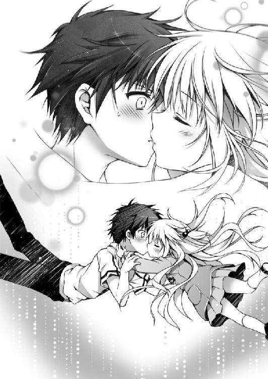
住宅地を抜け、公園の角を折れて、坂道をくだる。道ゆく人々は、みんなひどく厚着をしていた。吐きだす俺の息は白かった。太陽は傾き、足もとにできる影は長い。
俺はどこに向かっているんだ？
また映像にノイズが走り、場面は唐突にかわる。
俺はいつの間にか屋内にいる。
やけにほこりっぽい。天井にぶらさがっている照明が壊れていた。背の低い机や椅子、段ボールや遊具のたぐいがうしろのほうに積みあげられている。
見覚えがある。ここは......教室だ。俺が幼いころに通っていた小学校だ。
もしかして。
これは......俺がなくしてしまった、半年前の、記憶......なのか？
教室の中央に誰かいる。
薄暗くて顔がよく見えない。ただ、そいつがうちの高校の制服を着ているのはわかる。
それも女子の制服だ。
『あんた、誰なんだ？』
俺が言った。半年前の俺が、だ。
すると、その何者かがすっと手を持ちあげた。妙な形をした拳銃を握りしめている。筒の部分が大きくて、おもちゃみたいな感じの銃だった。銃口はこちらを向いている。
やばい！
思ったけど、今の俺の意志は反映されない。
だからこれは、やっぱり性質の悪い映画みたいで──。
バン！
○ ○
「うわっ！」
驚いて、俺は飛び起きた。
「だいじょうぶ？ からだはなんともない？」
ありすの声がして、そちらに顔を向ける。もう幼稚園児の姿ではない。ふわふわしたキャラメル色の髪、大きな目、すっきりした鼻と桜色のくちびる。左手にシュシュをしている。俺の知ってる高校生のありすだ。
本棚、勉強机、クローゼット。壁にはありすが正月に書き初めをした「疾風怒涛」の文字が貼ってあり、小学校の修学旅行のときに日光で買った白木の木刀も飾ってある。そこは俺の部屋だった。スズランが掃除したキレイすぎる部屋じゃない。ちゃんと俺の部屋だ。
俺は自分のベッドで眠っていたらしい。
「なんともない、と思う」
今一瞬なにかが頭をよぎった気がしたけれど、目覚めた瞬間に忘れてしまった。少しばかり腰も痛いけど、それは寝すぎていたせいだろう。
よく見ると、ありすが俺の手をぎゅっと握りしめてくれていた。
「もう、心配させないでよね」
ありすは、ふうと息をついた。
「心配、してくれたのか」
俺はありすの手を見つめる。
「べ、べつにっ！」
ありすは慌てたように手をはなし、ぷんっとそっぽを向く。
なんかちょっとかわいいぞ。
そう思い、同時に背筋を冷たいものがとおりすぎる。
ごくりと唾を飲みこんだ。
ありすは俺に対してこんなに優しかっただろうか？
ひょっとして、これもまだ夢のつづきなのではないだろうか？
俺は今、目の前にいるのが本物のありすなのか、それともニセモノのありすなのかを見極めようと目を凝らした。
「ど、どうしたのよ？」
「本物のありすは、もっと胸が大きかった気がする」
次の瞬間、俺の脇腹にありすのこぶしが突き刺さっていた。
軽く宙に浮き、落ちる。
声もだせずに、俺はベッドの上でまるくなった。
「どう？ 目が覚めた？」
「さ、覚めました......」
よし、ここが現実だ。ここはもう夢の中ではない。いや、スズランに言わせれば、ここも俺が見ている〈夢〉の中だということになるのだろうけれど。
一応、左胸の火傷も確認してみる。よし、確かにあるぞ。
俺は顔をあげる。
すると。
「動かないで」
スズランがありすの後頭部にバカでかい銃をつきつけていた。
「油断したわ」
ありすが苦々しく吐き捨てる。
俺たちがこっちに戻ってきたように、スズランもこちらへやってきていたのだ。どこから侵入したかなんて考えるだけむだだろう。こいつらは普通じゃないのだから。
「お、おい！」
俺は一歩踏みだそうとして、
「聞こえなかった？ 動かないで」
スズランの言葉で踏みとどまる。
「やめろよ、やめてくれ。頼むから」
俺の言葉にスズランはまた傷ついたような顔をする。
「そんなにこの女が大切？」
「大切だ。だから傷つけないでくれ」
「あなたはもう、戦うことをやめてしまったの？ こんなふうに、自分だけの安全な世界で生きることを選んでしまったの？」
「俺は......」
俺はスズランが語ったような記憶を持っていない。いや、そもそも、ありすの話す魔術の世界だって知らない。俺は普通の高校生のはずなんだ。
「信頼関係を築いてから説明すれば、あなたも思いだしてくれると思った。でも、あなたは思いだしたくないのね。あなたはこの虚ろな夢の世界に逃げこんだんだ」
「俺は......」
「この臆病者め」
スズランは──泣いている。
ぽろぽろと、大粒の涙を瞳からこぼす。
「あなたに憧れていた。あなたのためならなんだってできた。でも、あなたはもう、わたしの知っているあなたではない。あなたは戦士をやめた。あなたは今や敗残兵だ」
スズランがなにかをほうる。それが床に落ちて、転がる。
転がりつづけ、俺の足もとでとまった。それは液体で満たされた小さなビンだった。
「即効性の毒薬よ」
スズランが言った。
「飲めば苦しまずに死ぬことができる」
俺はビンを見つめる。
「それを飲みなさい」
「ダメよ、直道。そんなことしたら許さないんだから！」
「だいじょうぶ。わたしを信じて。あなたは本当の意味で死ぬわけではない。ここはあくまでもあなたが《虚夢への供物》によって見せられている〈夢〉の世界。ここで死んでも、あなたは『本当の世界』で目を覚ます」
「ダメよ、そんなの！ って、なに拾ってんのよ！」
ちゃぷん、と、ビンの中で透明な液体が揺れた。
「それでいいわ」
スズランは冷たい声で言う。
「いいわけあるかっ！ 直道っ！」
ありすがこちらへ飛びつこうとする。でも、スズランがありすの髪をひっぱって、それを許さなかった。
「ありすを解放してくれ」
俺はスズランの目を見ながら告げる。
「その必要はない。あなたが目を覚ませば《千年魔女》も自動的に解放されるわ。だって、この〈夢〉の世界自体が終わるのだから」
「わかった」
「わかるな、バカ！ アホ道！ へっぽこ！」
ありすがわめく。
「ありす」
俺は、今度はありすに呼びかけた。
「俺を信じろ」
言って、俺はビンのふたをあける。
無色だけれど、鼻に近づけると、ほんのりと甘い香りがした。
「さあ、早く飲んで」
スズランが催促の言葉を口にする。
俺は深呼吸をした。いっぱい酸素を吸いこんで、吐きだす。
この世界は偽りの世界。俺が見ている、見させられている、〈夢〉の世界。
ここで死んでも、俺は『本当の世界』で目覚めるだけ。
スズランの言うとおりなら、そういうことだ。
ビンを握る手から汗がじわりとあふれる。正直なところ、俺はビビってる。今すぐ、なにもかもなかったことにして逃げだしてしまいたいと頭の片隅で思ってる。
「なお、みち」
ありすが俺の名前を呼んだ。ありすの瞳が不安そうに揺れている。
その目を見て、俺は覚悟を決める。
ビンを口元まで運び、
「ごめん！」
飲まずにスズランの顔に向けて投げつけた。
「──っ!?」
中身がこぼれてスズランの髪を濡らす。
スズランはひるんでありすの髪から手をはなした。
「でかした、直道！」
ありすはその場から飛びこみ前転をするように、ぐるんと回転して、スズランから距離をとった。同時に魔術札を抜きだし、息を吹きかける。
「《火蝶風月》──点火」
魔術札は無数の蝶へと姿をかえる。
「さあ、かわいがってあげるわ、小娘！ 覚悟なさい！」
正義の味方と言うよりは悪の権化みたいなセリフを口にするありす。
そうして、
火の粉を散らす蝶に囲まれたスズランは、
進退きわまった末に、
自らのこめかみに銃をつきつけた。
「や、やめろ。なにしてるんだ！」
俺はそのあまりにも非現実的な状況に慌てて、スズランに手を伸ばした。
「こないで！」
スズランが鋭く叫ぶ。左右の三つ編みが大きく揺れる。
「最初からこうすればよかった」
「おい、やめろって！」
「だいじょうぶ。これを見ればあなたも信じる。わたしは死なない。ここはあなたの見ている〈夢〉の世界なのだから」
「バカなまねはやめなさい」
と、ありすも言った。
「そんなことしてもむだなのよ！」
「そうだ、やめろ」
「そんな顔しないで。本当にだいじょうぶなのよ。これであなたも、わたしを信じてくれるはず。そうしたら一緒に帰ろ。そして、どうか、わたしたちを救って。愚かなわたしたちを導いて。だいじょうぶ、あなたはきっと思いだす。今はただ、少しばかり疲れているだけ。あなたが挫けそうなときは、わたしがあなたを全力で支える。あなたがわたしに手を差し伸べてくれたとき、わたしはそう決めたの。だから──」
一拍置いて、スズランは言った。
「だから、今は、わたしがあなたのための供物となる」
スズランの指に力がこもる。
彼女は目をつむった。
その瞳から涙がこぼれ、
引鉄はひきしぼられる。
俺は。
スズランが引鉄をひく前に、その小さなからだを抱きしめる。
「は、はなして！」
「断る」
小さなスズランのからだはちゃんと温かい。
少なくとも俺には〈夢〉だなんて思えない。
俺はスズランの拳銃をそっと上から握った。
「もうやめろ」
「はなして！」
「はなさない」
「あ、あなたごと撃ってもいいんだ！」
「やれるものならやってみろよ。そんなんで世界が救われるならやってみればいい」
スズランの手は震えていた。
結局、引鉄がひかれることはなかった。
俺はスズランの手の中にあるピストルをゆっくりとりあげる。
「もうやめろよ。やめてくれよ。こんな悲しいこと、しないでくれよ。お願いだから」
スズランは全身を震わせていた。まるで寒さに耐えるように。孤独に耐えるように。
俺はいっそう強くスズランを抱きしめる。
スズランの震えを少しでも和らげたいと思って。
「おまえが......スズが死んだら、お兄ちゃん泣いちゃうよ」
スズランは、俺の胸に顔を押しつける。大きな声で、うわーんと泣いた。
俺はスズランが泣きやむまで、ずっとその頭を撫でつづけた。
○ ○
さて、これはどういうことなのだろうか？
日曜日なので昼すぎまで惰眠をむさぼり、それからごはんでも食べますか、と一階におりたところ、ダイニングテーブルに置いてあるそれを発見した。
大きな平皿の上に、ソプラノリコーダーが置いてある。
「意味不明すぎる」
呟き、俺はリコーダーを手にとった。懐かしくはある。まだ、指使いとか覚えているだろうか。なんて思っていると、不意に視線に気づいた。ビデオカメラをかまえたスズランが、冷蔵庫のかげから、俺をじーっと撮影している。
「なにしてんの？」
「つづけて、お兄ちゃん」
「いや、つづけるもなにも。ってか、なんなのこれ？」
俺はリコーダーをぷらぷらとふった。
「ソプラノリコーダーだよ」
「それはわかるけど」
「ちゃんとリサーチずみなんだから。男子は好きな女の子のリコーダーに尋常ならざる興味を抱くものなんでしょ？」
「──はあ」
「お兄ちゃんはスズのリコーダーにそれはもう多大なる関心を向けているに違いないと思うの。それをこう、証拠としておさめようと。なので、どうぞ、つづきを」
昨日、あれからどうなったかと言うとだ。
「一時、休戦協定を結ぶことになりました」
どっから運んできたのかカエルの置物と協議したスズランはそう言った。あのカエル、やはりしゃべるらしい......。
「『不死者同盟』幹部と『冥葬会』上層部のあいだでとりかわされた正式な決定事項です。わたしと自称魔術師であるところの《千年魔女》とは、今後、この休戦協定が維持されるかぎりにおいて不要な戦闘を避けます」
スズランに言わせると、魔術師なんてものは本来的には存在していないのだそうだ。あくまでも〈夢〉の中でしかありえない存在。『冥葬会』というのは誤った自覚をしてしまったがために〈夢〉の中で〈力〉を持ってしまった哀れな集団であるらしい。
それはありすの側から言わせるとまったく逆で、『不死者同盟』こそ、ありもしない『本当の世界』を狂信する危険集団であるそうな。この間違った世界から脱却するために試行錯誤しているらしい。《無自覚な魔術師》の一種だと言っていた。
それはそれとして。
「そうか、とりあえずはよかった」
俺が安堵の言葉をこぼすと、口をへの字に曲げたありすが「よくないわよ」と言った。
「今のちゃんと聞いてた？ このへちゃむくれのこわっぱは今後って言ったのよ、今後。今後があるのよ今後が」
「今後？」
「あなたに夢を見させている《虚夢への供物》を破壊し、あなたをこの〈夢〉の世界から救うため、これからもわたしはあなたの妹として生活をともにすることとなりました」
「............は？」
スズランは床の上に正座し、三つ指をついて深く頭をさげた。
「不束者ではありますが、なにとぞ、よろしくお願い申しあげます」
「あ、いや、これはどうも、ご丁寧に」
......なんだこれ？
顔をあげたスズランは、すすすっ、と俺にすり寄ってきて、ぴたっと腕にしがみついた。
「そういうわけで、よろしくね、お兄ちゃん」
「ちょっとあんた、はなれなさいよ！」
ありすがスズランをひきはがそうとした。
「なんなのおばさん、やめてよね」
「お、おばっ!?」
「お兄ちゃんだって若い子のほうがいいに決まってるもん。年増はひっこんでてよ」
「このへちゃむくれ、ぶち殺す」
ありすは魔術札をとりだし、スズランはデザートイーグルをかまえた。
「うわああああっ、やめろってば！」
俺は二人のあいだに割って入った。
「不要な戦闘は避けるんじゃなかったのかよ！」
「これは必要な戦闘よ。売られたケンカは希望小売価格より高くても買う！」
「意味わからん！」
「調子にのるなよ、《千年魔女》」
「だまれ、《心中屋》」
なんてことがあったわけだ。
幸いにも両親はたまにしか帰ってこないし、スズランがうちにいても、それはまあなんとかなるだろう。ただ、女の子と一緒に一つ屋根の下で生活していいものなのかどうか、それはちょっと悩ましいところではある。
「さあ、お兄ちゃん。スズのリコーダーを思うさま、舐めまわしてください」
ささ、どうぞ、とスズランは促してくる。
俺はひとまず、スズランのおでこにチョップをふりおろしておいた。
「うにっ」
まったく、俺の日常はめちゃくちゃになってしまったよ。
ありすに言わせれば、俺は無自覚な魔術師で、
スズランに言わせると、夢を見ている救世主となる。
半年前の大晦日に俺は事故に遭ったのだけれど、その記憶はない。
少なくとも、きちんと思いだすことができない。
ありすは、あれは《凶戒原則》の暴走であり、あいつが俺を救ったのだと主張している。
スズランは『不死者同盟』が《虚夢への供物》を破壊するために、俺を襲ったのだと言う。
おかしな話だ。
まったくもっておかしな話じゃないか。
俺が物語の主人公なら、二人の主張するどちらかの世界で活躍していたかもしれない。
でも同時にはありえない。
だって、二人の意見は矛盾しあうのだから。
どちらかが嘘をついているのか？
そんなふうにも思えない。
事実、俺は妙な事件に巻きこまれっぱなしだ。
なら、嘘でなくても、どちらかが勘違いしているのではないだろうか？
どちらかが？
いいや、そうじゃない。
二人とも俺を過大評価しているんじゃないだろうか。なにかの間違いなのだ。
だって、俺には不思議な力も革命家の才能も、これっぽっちもないのだよ。
そんな俺は物語の主人公に相応しくない。
そうだろう？
「むう、リコーダーがダメだと言うのなら、ピアニカはどうかな、お兄ちゃん？」
スズランが言う。
俺はスズランを見つめる。
スズランの言う『本当の世界』を俺は思いだすことができない。その世界の俺は大勢の人々を救う救世主さまであるらしい。でも、俺の記憶にはない。
それはそうなのだ。だって、俺じゃないのだから。人違いなんだ。
スズランが慕っているのは、どこかにいるかもしれない『救世主』であって、この俺じゃない。好意を向けられるべきなのは、俺ではない。
だから俺は勘違いしてはいけない。
「どうかしたの、お兄ちゃん？」
スズランが首を傾げた。三つ編みがひょこっと揺れる。
「なんでもない」
俺はもう一度、妹のおでこにチョップをふりおろした。
「うにっ」
Lollypop Dreamer is closed.
冷蔵庫をあけると、三角座りをしている女の子がいた。
当時、小学五年生だった俺は慌てて扉を閉めた。
なんで冷蔵庫の中に女の子が、と驚いた。でもすぐに、こんなところにひとがいるわけないよなと思いなおし、いや待て幽霊か、と理解した。幽霊はやばい。
しかし、子供というのは好奇心旺盛である。
俺はもう一度、今度はゆっくりと冷蔵庫のドアを開いた。
やっぱり女の子がいた。見間違いではなかった。
冷蔵庫の仕切りが勝手にとりはずされていた。女の子は、あとで食べようと思っていた俺のプリンを持っていた。生クリームののっている、ちょっとリッチなやつだ。
「きみ、誰？」
言うと、女の子はびくんっとなった。
小さくて、細っこい、やけに肌の白い女の子だった。今にも透けてしまいそうなほどだった。白いワンピースを着ていた。三角座りをしているので、白いパンツもまる見えだった。そして、すんすんと鼻をすすっていた。
「もしかして泣いてるの？」
彼女は泣きながら、俺のプリンを食べていた。
「どうして、こんなところで泣いてるの？ 寒くないの？」
俺は訊ねた。
でも、女の子はすんすんしながらプリンを頬張るばかりで答えてくれなかった。
「どうしたの、誰かにいじめられたの？」
ぷるぷる、と女の子は首を横にふった。でも、頑なに否定するさまは、誰かにひどく虐げられたことを証明しているようにも思われた。
女の子はうつむき、また、すん、と鼻を鳴らした。
事情はさっぱりわからなかった。
けれど、俺は泣いている女の子をかわいそうに思った。
「よくわかんないけど気にしないほうがいいよ」
慰めてみたけれど、語彙の少ない子供の俺は、それ以上なにも言えなかった。
「えっと、下の段にバナナもあるけど食べる？」
女の子は濡れたまつ毛をしぱしぱさせて、こくんとうなずいた。俺はバナナをだして女の子にわたした。女の子はバナナの皮をむいて、もぐもぐと頬張った。
「前にありすちゃんが言ってたよ。悲しいことがあっても、いっぱい食べていっぱい泣いていっぱい寝ればだいじょうぶだって。ねえ、バナナ、もう一本食べる？」
女の子はうつむいたまま、こくんとまたうなずいた。
「ぼく、直道って言うんだ。三柴直道。きみの名前は？」
○ ○
──妙な夢を見た。
まあ、夢だとちゃんとわかっているぶんマシか。
先日はひどい目に遭ったからな......。
今は何時だろう？
今朝はやけに冷えこむ。そのせいで目が覚めてしまったようだ。俺は、ずず、と洟をすする。と、俺の胸のあたりで、もぞもぞとなにかが動いた。
「なんだ？」
毛布をはぐ。
そこにはスズランがいた。コアラの赤ん坊みたく、俺にしがみついている。
「ぶっ!?」
驚いて眠気もぶっ飛んだ。
「な、なにしてるっ」
俺はスズランをべりべりとひきはがす。
「うに......ああ、お兄ちゃん」
スズランはごしごしと目をこすり、ふわあ、と大きなあくびをした。
「今朝はすごく寒かったから」
スズランも、ずず、と洟をすすりあげた。確かに七月とは思えないほどに気温が低い。半袖のＴシャツにハーフパンツという格好で寝ていたので、ぶるっとからだが震えた。
「っていうか、スズ、おまえはなんて格好してるんだ!?」
スズランは、サイズの大きい俺のシャツを着ているだけだった。あとは下着しか身につけていない。
「男の子は自分の彼女にこういう格好をさせたがるという統計結果が得られたの。どう、お兄ちゃん。欲情した？」
「欲情とか言うな！ スズは妹だろ。設定を間違えるな！」
と、そこで。
「直道ぃ、起きてる？」
ガチャリ、と、俺の部屋のドアがあけられた。
ありすが俺たちの姿を見て、その場でぴしっと固まるのがわかった。
「なにしてるわけ？ ベッドの上でなにしてるわけ？」
季節はずれのマフラーを巻いたありすが表情を消して言う。
「こ、これは違うんだ。話せばわかる」
すると、スズランがぴとっと俺にくっついた。あるかなきかの極めて控えめな胸が俺の腕に当たる。
「あーあ、見られちゃったね、お兄ちゃん。スズとお兄ちゃんがいい関係なとこ。ぽっ♡」
「なんで誤解を招くようなこと言うんだよ」
俺はくっつくスズランをひきはがそうとする。うにーっとスズランは抵抗した。
「違うんだ、ありす。これにはハリウッド映画化が決定してしまうかのような深遠かつドラマチックないきさつがあるんだ」
って、俺はなんでありすにこんな言いわけをしているのだろう。いや、このまま誤解されるのは名誉にかかわるからだ。俺は決してハレンチな男ではない。
だが、俺の幼なじみは、今朝のこの寒さはありすブリザードが原因なんじゃないだろうか、ってくらい冷たい目で俺を見おろしながら、
「不潔」
ばっさりと切り捨てる。
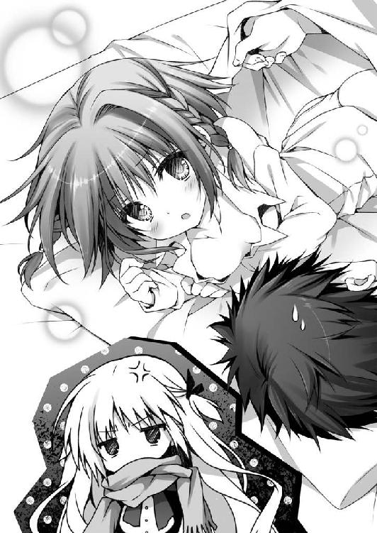
「いや、これはだな」
「下品」
「聞いてくれよ」
「黙れ、この虫けらめ」
「そこまで言わなくても」
「息もしないで。同じ空気を吸っていると思うと吐き気がするわ」
「俺だってさすがに傷つくんだよ？」
ありすはそのまま、ぷいっと背を向けた。
「お邪魔しちゃったみたいね。あたしは先に学校いくから」
「いや、ありす、ちょっと待ってくれよ」
ここで、こんなふうにわかれたりしたら、あとあと気まずいことになる。俺はありすを追いかけようとした。同時に、スズランが俺のＴシャツをつかむ。
「いいじゃない、お兄ちゃん。あんな口うるさいお姑さんみたいなのはほっとけば」
「うわっ、ひっぱるな」
おかげで俺はバランスを崩した。べしんっと顔からフローリングに落ちる。
「いてて......。なにするんだよーっ」
ごろりと転がり、目をあけた。
「あ」
そこはありすの真下であって。
ありすは俺の顔をまたぐように立っていて。
「......わ、わざとじゃない」
一応主張だけはしておいた。
「いちごとか見えていない」
「このっ」
ありすの顔がくしゃっとなって、真っ赤に染まる。
「さいって──っ！」
「ぺぎゃ」
俺はありすザウルスに踏み潰されて、あやうく絶命するところであった。
○ ○
「うう、さむっ」
冷たい風が吹きすぎていく。
「なんなんだよ、この気温」
空はどんよりと曇っていた。雪でもふってきそうだ。
吐きだす息は白くけぶる──七月なのに。
朝のニュース番組では、お天気お姉さんが、まるでそれが自分の責任であるかのような顔をして関東地方の天気予報を告げていた。局地的に気温が低下しているのだそうだ。
俺もクローゼットの中から学ランをひっぱりだしてきた。半袖のワイシャツでは風邪をひいてしまう。
ありすはまだご機嫌斜めな様子で、マフラーに顔の下半分を埋めたまま、ずんずんと先を歩いている。ありすもブレザーを着ていた。
「おーい、待ってくれよ」
俺は自転車を押しながら小走りでありすを追った。すぐに追いつき隣に並ぶ。
「なに怒ってんだよ」
「べつに怒ってない」
「いや怒ってるじゃないか。顔が怒ってる」
「寒いだけよ。寒いから顔が凍ってるの！」
「まあ、寒いけど」
凍ってはいないだろ。怒ってるだけだろ。言葉遊びみたいだな、それ。
あんまりしつこくしても余計怒らせるだけだろうな、と思ってそれ以上は話しかけることを断念する。
俺は黙って、ありすの隣を歩きつづけた。
自転車を押す手がかじかんでくる。手袋も持ってくればよかったな、と今さら思う。
道ゆく人々は誰もかれも厚手の冬物を着こんでいた。肩をすぼめて、足早に歩いているひとが多い。ちょうど半年くらい時間を巻き戻したみたいな感じだった。
昨日まで、ともすれば暑いくらいだったので、この急激な変化にからだがついていけていない。豊かな木々の緑も「話が違うじゃないか」と抗議するように冷たい風に揺られている。
「うう、さむっ」
俺は今日何度目かのセリフを吐いた。
そのときだった。
左手がなんだか急に熱を持ったみたいになった。
たとえるなら、寒空の下で遊んだあと、家に帰ってストーブで温めていたらじんわりとかゆくなった、みたいな感じだ。霜焼けって言うのかな。
「ん？」
左手を確認する。とくに変なところはない。普通だ。
......いや、なんだ？
左手の小指に赤いなにかが......。
「なんだ、これ？」
俺は目を凝らす。
次の瞬間、ぐんっ、と左手が斜め下方向へひっぱられた。
「うわっ」
驚いて、自転車をはなしてしまった。がしゃんと地面に倒れる。
まったくおそろしいことに。
俺の左手はありすのスカートの下に導かれていた。
と思ったら、今度は上へとひっぱられた。
まるでスカートめくりでもするような塩梅である。
が、そこはスポーツ万能・反射神経の鬼平犯科帳と呼ばれたありすであった。
二度もいちごパンツをさらすようなことは許さず、太ももで、がっちりと俺の左手を挟んでいる。
......これはこれで、なんかアレだけど。
「こんの、アホ道！ 外道、ここに極まれりね！ このネアンデルタール人め！」
「ち、違うんだ。これはわざとじゃないんだ。本当だ。勝手に動いたんだよ」
「勝手に動いた？」
「そう、勝手に動いたんだ。俺の意志じゃないんだ」
「もっとマシな言いわけは思い浮かばなかったの？」
ゴキブリを見るような目を向けられた。
「言いわけじゃないんだって！」
「さあ、歯を食いしばりなさい。しばき倒してあげるから！」
「タイム、タイム。俺の目を見てみろよ。これがへたな言いわけをしている男の目か？」
俺はじっとありすの目を見つめた。
ありすも俺の目をじっと見つめかえす。
「スケベ心で発酵している」
「バカな！ 俺ほどの高潔な志を持った人物がいるだろうか、いやいない。とにかく俺の左手をかえしてくれ。この状況こそ、ちょっといかがわしい感じになっちゃってるじゃないか」
女の子のスカートの中に手をつっこんでる男子高校生の図だ。逮捕されても文句が言えない。
「ふふふ、この場で『誰か助けて！』と叫んだら、どうなるかな？」
血の気がひく。
「シャレにならないだろうが！」
俺は左手をありすの太ももからひっこぬこうとする。
「ひやん」
「変な声だすなよ！」
そんなやりとりをしていると、
「道をあけてくれませんかしら」
氷のように冷たい声が俺たちに投げかけられた。
ありすと俺は同時に声の主へ目をやる。
人形めいた白い肌。
絹糸みたいな長い黒髪に、赤いリボンのカチューシャをのせている。
夢見るような、あるいは人々を見下すような、うっとりタレ目が俺たちを冷ややかにとらえていた。
細雪麻乃さんだ。
校内一と噂される美少女である。
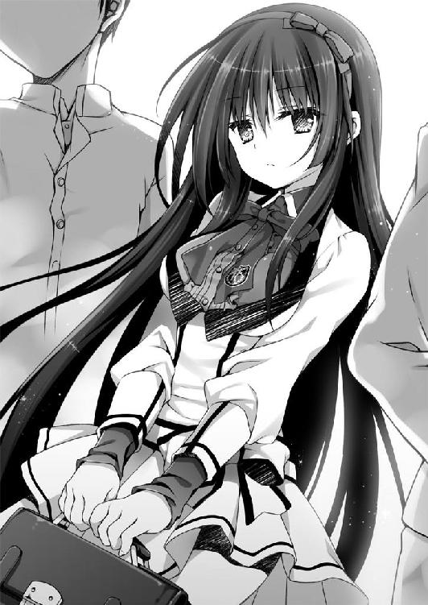
彼女の存在はなかばアイドルみたいなもので、実際今も、彼女をとりまくように親衛隊の隊員が控えている。
妙に筋肉質の男子生徒が一人、前にでてきて口を開いた。
「麻乃さんがおとおりになる。道を譲ってほしい」
ありすと俺は自分たちの間抜けぶりを恥じ入り、慌てて細雪麻乃御一行さまに道を譲った。細雪さんはしずしずと、音もなく歩いていく。
地面に落ちる彼女の影は、どこか薄い。
いや、今日はこんな天気だし、影が薄いのも仕方がないのか。
俺の横をとおりすぎるとき、細雪さんはちらりと俺を見た。
睨む、というほどでもないのに、俺は背筋に冷たいものを覚える。
なんだろう？ 俺、なんかしたか......？
細雪さんの姿が見えなくなっても、俺はしばらくのあいだその場に立ちつくしていた。
今のはなんだったんだろう？
と、ありすが倒れていた俺の自転車を「よっこいしょーいち」と言いながら起こした。そのまま、サドルにまたがり、きこきことペダルをこぎだす。
「って、おい！ 俺を置いていくなよ！」
ありすは一瞬だけ俺のほうをふりかえり、
「少しはからだを動かして、不浄なる心を清めなさいな」
べえ、と舌をだす。
そのままチリンチリンとベルを鳴らして遠ざかっていった。
「ちょ、冗談だよな？ お、おい！ 待ってくれ！」
俺はありすを追いかけて走った。そうしながら、ちょっと左手の小指を確認する。さっき一瞬だけ見えた赤いものは、もう見えなくなっていた。
気のせいかと思い、顔をあげる。
ちょうどそのとき、ふっ、と、白いものが目の前を横切った。
「あ、雪だ」
○ ○
昼休みがはじまるころには、町は真っ白な雪で覆われていた。雪だるまでも、かまくらでもつくり放題の量がふりつもっている。
くりかえすけど今は七月だ。異常気象にもほどがある。
「これはすごいな」
廊下の窓から中庭を眺めながら俺は呟いた。こんなに雪がふっているところは、今まで見たことがない。俺の町では真冬でもこんなに雪はふらない。それが七月にわんさかふっているのだから、驚かないほうがどうかしている。
不意に、
「アホ道」
と、呼ばれてふりかえった。顔にぺしんとなにかがぶつかる。
「う」
ありすがいつも手首にしているシュシュだった。ゴム鉄砲の要領で飛ばしたらしい。
「......なんだよ？」
「話があるの。ちょっと顔を貸して」
誰もいない階段の踊り場に移動する。そこも、すごく寒かった。
「で、話ってなんだよ？」
俺が訊ねると、ありすは口をへの字に曲げた。
「あんた、なんとも思わないわけ？」
「なんとも思わないって、なにが？」
「この雪はちょっと異常すぎるわ」
「確かに異常気象だと思うけどさ」
ありすはあからさまなため息をついた。
「のんきなものね。これだから三次元男子はダメなのよ。足短いし、汗くさいし」
「くさいとか言うなよ」
「せめてメガネでもかけてポイント稼ぎなさいよ」
ありすは両方の親指と人差し指でわっかをつくって目のところに当てた。
確かにメガネは最も簡単なコスプレなのかもしれないが。
「メガネ男子なんてどこがいいんだ？ あいつらメガネはずしたら目は『３』だぜ」
「はっ、これだから素人は困る。メガネ男子たるものいついかなるときもメガネはずすべからず。人前でメガネをはずすなんてわいせつ物陳列罪に値する。ハレンチな」
「......『裸眼』という言葉が急に卑猥な単語に思えてきた」
「『肉眼』など口にだすのも憚られるのだよ。気をつけたまえ」
「以後気をつけます」
メガネのネタは置いといて、とありすは左から右にものを動かすまねをする。
「これは何者かが仕組んだ天候に決まってるでしょ！」
「何者かが仕組んだって、それ、どういうことだよ？」
「誰かが直道を狙っている」
ありすはフレミングの法則みたいな手をして俺を指さした。
「誰かが俺を狙ってる？」
コイルの法則みたいな手で俺は自分を指さす。
「そう考えるのが最も自然だわ」
ありすに言わせると、俺は《無自覚な魔術師》であり、強力な魔力炉《凶戒原則》なるものを宿しているのだとか。そのせいで、俺はほかの魔術師に狙われている。
しかし、スズランに言わせるとちょっと違う。俺は夢を見ている救世主ということになる。この世界は俺が《虚夢への供物》によって見させられている〈夢〉の世界。スズランが所属する『不死者同盟』は、俺の目を覚まさせようと暗躍している。
「あたしが休み時間を利用して調べたかぎりでは、魔術の痕跡は見つけられなかった」
「てことはどういうことだ？」
「『不死者同盟』がかかわっている可能性があるってこと」
「でもほら、休戦協定を結んだんだろ？」
「もちろんそうよ。でも、上の人間が決めたことを全員が守るとはかぎらない」
「下っ端が勝手なことをしてるってわけか」
「その可能性は否定できないって話よ」
「ど、どうすりゃいいんだ」
「ちょっと、直道。あのへちゃむくれに電話してよ」
「スズにか？」
「なんで、そんな親しげに呼んでるのよ」
ありすは、にゅうっと顔を寄せてくる。
「え、あ、いや......なんとなく定着して」
ありすは、ふんっ、と鼻を鳴らした。
「魔術師の関与は感知できなかった。今度は、あのへちゃむくれに『同盟』のほうを調べさせるのよ」
「なるほど」
スズランは家にいるはずだ。俺はケータイで自宅に電話をかけた。
『はい、三柴です』
すっかりわが家の人間みたいにスズランが応じる。
「俺だよ。直道」
『お兄ちゃん。どうしたの？ スズが恋しくて電話してきたの？ かわいいなあ、お兄ちゃんは。お兄ちゃんはかわいすぎるよ。寝こみを襲いたいくらいだね。寝ているお兄ちゃんを亀甲縛りにして、ベッドにくくりつけて、辱めたいという欲求を押しとどめるのに今朝も苦労したもの。でも亀甲縛りって難しいよね。スズ、お兄ちゃんのためにがんばって覚えるね。ああ、でも今日は寒いな。お兄ちゃんに温めてもらいたいな。スズはお兄ちゃんのために、シチューをつくって待ってるから、お兄ちゃんもスズを温めてほしいな』
俺が口を挟む余地もなく、スズランは早口に語った。
若干物騒である。
「スズ、頼む。ちょっと話を聞いてくれ」
『なに、お兄ちゃん？ スズはお兄ちゃんのためならなんでもするよ。あ、わかった。あの邪魔な自称魔術師を消せばいいんだね。お茶の子さいさいだよ、お兄ちゃん。今すぐ事故に見せかけて殺害する方法を考えるから安心して。こんなこともあろうかと、密室トリックは三つほどストックがあるの。状況を整えて、計画的にやればスズたちに嫌疑がかかることはないから。ふふふ、目にもの見せてくれる、《千年魔女》』
「落ちつけ、スズ。黒いよ」
『《千年魔女》を消せって話じゃないの？』
「違うから」
『そっか、スズ、早とちりしちゃった。失敗、失敗。ということはやっぱり、その、スズとお兄ちゃんの挙式の段取りについてだよね。ぽっ♡』
俺はもうスズランとまともなやりとりをする自信がなく、ケータイをスピーカーフォン設定に変更してから、ありすにわたした。
「おい、へちゃむくれの《心中屋》」
『む、この声は年増の《千年魔女》』
すごく嫌そうにスズランは言った。その表情が思い浮かぶほどだ。
「あんたの大切なお兄ちゃんは預かった。かえしてほしくば言うことを聞け」
『この卑怯者め！ 見損なったぞ《千年魔女》』
「バカ言ってないで、ちょっと話聞きなさいよ」
『......なに？』
「この雪だけど、『不死者同盟』の仕業じゃないの？」
『はあ？ ちょーウケるんですけど』
女の争いって怖いな、と俺は思った。
「どういう意味よ？」
『この異常気象に対して「同盟」は一切関与していない。また、《虚夢への供物》がなんらかの誤作動を起こしている可能性も極めて低いものと考えられる』
「本当か、スズ？」
そこで俺も話に割りこんだ。
『お兄ちゃんへの愛に誓って』
それは信憑性があるんだか、ないんだかって感じだけど。
『それよりも「同盟」としては、自称魔術師の関与を疑っているんだけど？』
「あたしが調べたかぎりでは魔術師の痕跡は見つからなかった」
『ちゃんとさがしたの？ 見落としてるんじゃないの？』
「失礼ね」
『もしもお兄ちゃんになにかあったら、そのときはタダじゃおかないからね、《千年魔女》』
「ほざけ、《心中屋》」
そう言って、ありすはケータイの通話を切った。
「えっと、つまり、どういうことなんだ？」
「原因は不明」
ありすが俺にケータイを投げてよこす。俺は慌ててキャッチした。
「投げるなよ」
「でも、単なる異常気象だとは思えないわ。何者かの悪意を感じるもの」
俺はぶるっとからだを震わせた。寒いからだけではなく、ありすの言う「悪意」っていうのが、自分に向けられているのかもしれないと思うと、なんだか怖かったからだ。
「なに暗い顔してんのよ」
ぴんとありすが俺のおでこを指で弾く。
「安心しなさいよ。直道のことは、あたしが守るんだから」
俺はありすを見つめた。
「カッコいいな。男前すぎる」
「ふふふ、なにを隠そう、このシュシュはね、拘束具なのだよ。はずすとからだが軽くなり、真の力が発揮されると、設定資料集に書いてあった」
「そんな中二設定があったとは」
「たとえ、直道が登校途中にあたしのスカートをめくろうとするようなハレンチ男でも、あたしが守りとおしてみせる！」
それはつけくわえなくてよかったんじゃないかな。
午後の授業は中止になった。
雪国と違い、ちょっとでも雪がふろうものなら交通機関は麻痺してしまうからだ。
帰れるうちにとっとと帰れって話。
さすがに雪の中を自転車で走る勇気もなくて、ありすと俺はバスを利用することにしたのだけれど、雪のための徐行運転により、いつまで待ってもバスはやってこなかった。そもそもバス停でバスを待つ人の数が尋常ではなかった。仕方なくありすは南さんに車で迎えにきてもらえないものかと電話した。仕方なく、と言うのは、ありすはあんまり車での送迎を快く思っていないのだ。まあ、この場合はべつだろう。しかし、どうやら雪で道が塞がってしまって車がだせないようだ。
『本当に申し訳ありません、お嬢さま』
という声がケータイの向こうから、ちらりと聞こえた。
『つきましては、不肖南奈美、腹を切って謝罪する所存であります』
「いや、そういうのはいいから」
かなり時間はかかるけれど、俺たちはそっから歩いて帰ることにした。
「うう、寒い」
足の先までしんしんと冷える。鼻水も凍りそうだ。
町は白一色で塗りつぶされている。雪の迷宮みたいだった。空は相変わらずの灰色で、たんぽぽの綿毛みたいな雪がわさわさと間断なくふりつづける。これだけふっていると、キレイをとおりこして、ちょっと不気味である。
すると突然、
「ぎゃおす」
どすん、とベランダから漬物石でも落としたような重い音がして、俺はふりかえった。
「おい、だいじょうぶか？」
ありすが雪の上で滑ったらしく、尻もちをついていた。
「いたたた......び、尾てい骨が......」
俺はありすのほうにきちんと向きなおって、手を差し伸べる。
「ほら、つかまれ」
「う、うん」
ありすの手をとって立ちあがらせる。ありすはぱたぱたと粉雪を払い落とした。
「どすんって、すごい音したぞ？ だいじょうぶか？」
「どすん？ なにを根拠に」
「根拠もなにも聞こえたし」
「それはなにかの聞き間違いよ。ふわって、天使の羽根みたいに軽やかだったもの」
「屋根にふりつもった雪が、ずざざって落っこちてたけど」
「それとこれとの因果関係は認められない」
「まあ、いいけどな。ほれ、いくぞ」
俺はありすの手を握ったまま歩いた。また転んだりしたらあぶないからだ。
「ふ、ふん、生意気。ちっちゃいころは、あたしにひっぱられてたくせに」
そう言いながらも、ありすは俺の手をふり払ったりはしなかった。心なしか顔が赤い。
「背だってあたしより低くて、おなかもぽんぽこりんだったし」
「懐かしいなあ。あれは応仁の乱くらいのときだっけ」
「あんたはいつの時代のひとなのよ」
なんて感じで歩いていた。
するとだ。
またしても左手に妙な違和感を覚えた。
俺は自分の左手をまじまじと眺める。
「どうしたの？」
「左手がなんか変で」
「む。朝のつづきをやろうってわけ？」
ありすは俺から距離をとるとファイティングポーズをとった。
「いや、本当に変なんだ。熱いような、かゆいような......」
ありすも俺の左手を覗きこんでくる。
「なに、『しずまれ俺の左腕』みたいなこと言って──」
その瞬間、左手がまたしても勝手に動いた。
俺の意志を無視して、ありすの首へと伸びる。
「──っ!?」
俺は慌てて右手で、自分の左の手首を握りしめた。ありすの首をつかむ寸前で、なんとかとり押さえる。
「な、直道、あんたなにしてるの？」
「わからん。でも、なんかやばい！」
はたから見たら変なことをしているようにしか見えないのだろうけど、これは本気でやばい。もしも右手が間にあっていなかったら、俺はありすの首をしめていたんじゃないだろうか？ そう思い、冷たい汗が背中を伝う。
「その左手、どうしたのよ？」
「朝から変なんだ。そう言ったじゃないか！」
「ただのスケベだと思ってた」
「ひどい！」
バカな話をしているあいだも、左手は俺の意志に反してありすのほうへ伸びていく。
踏ん張っているのに、左手にひっぱられ、ずずず、と雪の上を滑っていく。
これ、物理的にもおかしなことになってるんじゃないのか。
「ま、待って。今なんとかするから」
ありすが魔術札をとりだす。
しかし、俺の左手に近づけたとたん、カードは燃えあがり、ただの灰となった。
「嘘、なんでよ!?」
同時に、俺の左手の小指に真っ赤な指輪が浮かびあがる。
血を思わせる、まがまがしい赤が輝いた。
「なんだよ、これ」
その指輪には鎖がついていた。鎖もまた毒々しい赤色をしている。鎖はまっすぐ道の先まで伸びていた。どこまでつづいているのか、先ははっきりと見えなかった。
「直道、あんた、どうしたのよ？」
「わからん。ただ朝から変なんだ」
七月にふる謎の雪。
昨日まではなかったはずの左手の違和感。
これらはつながっているのか？
鎖が俺をひっぱる。ずりずりずり、と俺はひきずられる。
ありすが俺に飛びついた。二人で綱引きのように鎖をひく。こんなときになんだが、ありすの胸が背中に当たっている......。
「もっと踏ん張りなさいよ、男の子でしょ！」
「もう無理。肩がはずれそう」
「鎖を切断するわ」
ありすはもう一枚、魔術札をとりだした。
「《蝶々発止》──抜刀」
息を吹きかけると、魔術札は瞬く間に大きな炎の剣に姿をかえる。
「でやっ」
ありすは鎖めがけて剣をふりおろした。
ガキンッ。
ありすの剣はあっさりと弾かれてしまう。
一瞬舞いあがった火花は小さな蝶の形をとり、そして消えていった。
ありすはもう一度剣をふりあげる。
でも、そのとき、俺は今までにないほどの強い力でひっぱられた。
「うわあ、ぐべっ」
「あ、ちょっと！」
もはや立っていることもままならず、俺は雪の上に倒れてしまった。あとは左手の小指に結ばれている赤い鎖にひかれるまま、ずるずるずると滑っていく。
「助けてくれ！」
「待ちなさい！」
ありすは俺を追いかけようとして、滑って転んだ。
「しっかりしろよ！」
「うるさい、アホ道」
ありすは「とうっ！」とジャンプし、俺にしがみついた。
○ ○
しかしながら、それはそれだけだった。
俺たちは、なす術もなく、ひたすら鎖にひかれつづけた。
誰と出会うこともなく、俺たちはいったい、どうなってしまうのだろうかと不安に思っていると、
がつん。
なにか硬いものに頭を打ちつけた。同時に鎖の力も緩んだ。
「いてて......ここはどこだ？」
俺は起きあがってあたりを見まわす。
一面の銀世界が広がっていた。骨まで軋ませるような冷たい風に白雪が舞う。
そして──。
「ふん、なかなか立派な建物ね」
ありすが俺らの頭上にそびえる、洋館をさして言った。どことなく修道院を思わせる外観をしている。雪をかぶっているせいかもしれない。ありすの家と同じくらい大きい。この洋館のほかには周囲に民家は見当たらない。
もちろん、こんな建物、俺たちの住む町にはない。と思う。
「なんだっけ、代理世界だとか、架空領域ってやつか？」
俺はありすに訊ねた。
以前、スズランがつくった『夢の世界』に連れこまれたことがある。それと同じようなものかと思った。鎖にひっぱられるうちに迷いこんでしまったのだ。
ありすは形のいい眉を寄せ、からだについていた粉雪をぱたぱたと払い落とした。
「わからないわ。でも、そうね、ここがあたしたちの町でないことだけは確か」
見渡すかぎりの雪景色、その中にぽつりとたたずむ厳粛な雰囲気の洋館。
俺は左手の小指を見る。
もう、そこには赤い指輪も、その先の鎖もなかった。
「俺たちをここに連れてきたかったのかな？」
「あたしたちを、ではなくて、直道を、でしょうけどね」
そう言って、今度はさっきとは違い、ありすのほうから俺の手をとった。
ありすの手もすっかり冷えてしまっている。
それでも握りあうと温かかった。
「だいじょうぶよ、あたしが一緒なんだから」
「頼りにしてるよ、ありすちゃん」
ありすはちょっとだけ、くちびるをうにうにと波立たせた。
「どうかしたか？」
「べ、べつに。急にむかしみたくに呼ばれたから、ちょっと......」
「おまえはむかしも今も、俺の憧れのありすちゃんだよ」
「な、なんで、そんな恥ずかしいセリフ、普通に言っちゃうかな」
小さい声で、なんかもにょもにょ言ってる。
「なに？」
「なんでもない。ここは冷えるし、誰の招待かは知らないけど中に入りましょう」
気をとりなおすように言って、俺の先をいく。
ここまできてカギがかかってたりはしないだろうな、と一瞬不安に思ったけれど、ちゃんと扉は開いた。ギイイ、と蝶番のこすれる音が重々しく響く。
玄関ホールは光に溢れていた。そして暖かい。一歩中に足を踏み入れると、俺たちにふりつもっていた雪がとけて、水となり、高そうな絨毯の上にぽたぽたと滴った。
「すいませーん」
俺は大声をあげる。
「ちょっと、なにしてんのよ？」
「あ、いや、勝手に入ったら怒られるかと思って」
ありすは、はあ、とあきれ顔でため息をついた。
「な、なんだよ......」
「べつに。とにかく中を探索するわよ」
まずは一階を見てまわることにした。
俺たちが最初に入った部屋は食堂であるらしかった。木製の長いテーブルがあり、その上に燭台が並んでいた。どれにも火が灯されており、ゆらゆらと炎が揺れている。誰もいなかった。その奥はかなり広めの厨房だった。そしてやはり誰もいなかった。
「なにもないよりはマシでしょ」
と、ありすは言って、厨房にあったフライパンを俺に持たせた。いざというときはこれで戦えということらしい。盾にもなる。
ありすはと言うと、魔術札をかまえていた。
一階にはほかに、トイレ、応接室、浴室、それから書庫もあった。当然のごとく誰もいなかった。庭にでるための扉もあったけれど、窓から見えたのは氷のオブジェだけだった。あとは雪、雪、雪。真っ白だ。
一階はすべて見てまわった。
「次は二階ね」
「その前に、俺、トイレいってくる」
「こんなときになんなのよ！ 緊張感が足りない！」
「仕方ないだろ、寒かったし」
というわけで、トイレがあるところまでひきかえす。とっとと済ませて外にでると、「一応、あたしも」とか言って、ありすもトイレに入っていった。
「なんだ、おまえもじゃん」
「うっさい！」
それから、ふり向きざま、
「はっきり言っておくけど、もし覗いたりしたら去勢するから」
ありすは両手をバルタン星人みたいにして、チョキチョキやった。
「おそろしいことを言いやがる」
ばたんっ、と音を立ててドアが閉められた。カチャリ、とカギもかけられる。
俺はフライパンを握りしめたまま背中を壁に預け、ずるずると座りこんだ。
ふう、と息をつく。
まったく最近は妙なことばかりに巻きこまれる。ありすは俺を無自覚な魔術師であると言い、スズランは俺のことを、夢を見ている救世主と呼ぶ。
「なんのこっちゃ」
俺は左手を眺めた。さっきは確かに赤い指輪と鎖が見えたのだ。俺が意図していないのに勝手に動いたりもした。
挙句の果てには、こんなところまでひきずられてきてしまって......。
俺はどうしてこんなところへ連れてこられたんだろう？
誰が、なんのために？
また半年前の事故がかかわってたりして......いや、まさか。
《凶戒原則》の暴走だとか、『不死者同盟』の仕掛けたショック療法だとか。
なんの話だよ、って感じだ。
俺は普通の高校生だ。物語の主人公ではない。
ありすもスズランも俺のことを買いかぶりすぎだと思う。なにかの間違いなのだ。
実際のところ、俺はなにもしていないじゃないか。
二人とも俺にはない不思議な力を使う。非科学的で非現実的だけど、目の当たりにしてしまった以上、否定するのは難しい。
でも、俺にはなにもない。
二人からアプローチを受ける前もそうだったし、今でもなにもかわらない。
自慢できるような特技もなければ、霊感みたいなものだって持ちあわせてなどいない。
物心ついてからこれまで不思議な体験なんて一度も......。
そこまで思って、ふと今朝見た夢のことを思いだした。
夢なんてものは起きたそばから忘れていってしまうものだけれど、今朝見た夢は覚えている。あれは俺が小学生のときに体験した実話だからだ。
でも、長いあいだ思いだす機会なんてなかったのだが。
あの日、学校から帰った俺はプリンを食べようと思って冷蔵庫をあけた。
すると、中に見知らぬ女の子が入っていた。今思いかえすと、すごい体験だ......。
女の子は泣きながら俺のプリンを食べていた。あれは、なんだったのだろう。やはり幽霊だったのだろうか。しかし、あれ一度きりで、二度目はなかった。
それとも俺は記憶を捏造しているのだろうか。本当はテレビかなにかで見た怪談番組の内容を自分が体験したことみたいに思ってる、とか。俺の記憶のあいまいさには定評があるからな。
でも、俺は彼女に話しかけたような気がする。
俺は自分の名前を口にしてから......、そうだ、俺は女の子に名前を訊いた。
あの子はなんて名乗ったのだったか......。
「思いだせん......って、なんか遅いな」
俺は腰をあげて、トイレのドアをノックした。
しかし返事はない。
「おーい、ありす。早くしろよ」
声をかけながら再度ノックする。
でも返事はなかった。
「......ありす？」
ドアに耳をくっつける。べつによこしまなことを考えて、とかではない。勘違いをされては困る。中から物音は──しない。
おい、これ、やばくないか。急に心拍数があがった。
「ありす、どうした？ 返事しろよ」
ドアノブに手をかけたけれど、さっき、ありすがカギをかける音を聞いている。案の定ドアは開かない。
「くっそ」
俺はフライパンをほうり投げて、ドアに向かってタックルする。
弾かれる。
タックルする。
弾かれる。
タックルする。
弾かれる。
さすがに肩が痛くなってきた。これ、ぜったい内出血起こしてるよ、と思ったところで、みしっとドアが軋んだ。よし、もう少しだ。
「うらあああああああああああああっ！」
短いけれど、助走をつけて渾身のタックル。ドアはそれで壊れてくれた。つんのめりつつ、中に踏みこむ。
「ありすっ！」
しかし──そこにありすの姿はなかった。
「おいおい、どうなってんだよ」
ドアの前にはずっと俺がいた。誰も出入りしていないはずだ。
俺はトイレの壁をぺたぺたと触る。どこかが抜け道みたいになっているのかもしれないと思った。忍者屋敷みたいに壁がくるりと回転するのではないか、とか。
でも、おかしなところは見つからない......。
「えらいことになった」
俺は、自分で言うのもなんだが、はっきり言って戦力外だ。切りこみ隊長のありすがいなければ、ほんとただの役立たずだ。だって俺は普通の高校生なのだから。
ケータイをとりだす。
スズランに連絡すれば助けてくれるかもしれないと思ったのだけれど。
「......なんでだよ」
圏外だった。電波が届く場所をさがしてあちこちに向けてみたが、ずっと圏外のままだった。助けを呼ぶことはできそうもなかった。
それでも、ここでしっぽを巻いて逃げ帰るわけにはいかない。というか、たぶん、一人じゃ帰れないし。ありすをさがさなくては。
目的はわからないけれど、ありすはこの館に潜む何者かにさらわれたのだろう。そいつは俺をここへ導いたやつに違いない。
「俺を守ってくれるんじゃなかったのかよ」
俺は廊下に落としたフライパンを拾いあげ、やけくそで軽く三回すぶりをしてみる。
「よ、よし」
すぐにでもスイングできるようにかまえながら、俺は一人で館の中を歩きまわった。確認のために、もう一度一階を探索してみたけれど、どこにもありすの姿はなかった。
ということは上の階だ。
手すりのついた立派な階段をあがる。なんの予備知識も作戦もない以上、手前から順番に部屋を見ていくしかなかった。
「ありす？ いるか？ おーい」
しかし、どこもはずれだった。どんどん心細くなる。いなくなったのはありすのほうなのに、まるで俺が迷子にでもなったような気分だった。
すると突然、目眩が俺を襲った。頭が割れそうに痛くなり、俺はフライパンを落として壁に手をついた。
「く、そ、なんだよ、こんなときに......」
左目がうずく。
同時に、妙な映像が脳裏に浮かびあがった。
脳裏に？
違う。
左目に、だ。
そこはほこりっぽい教室の中だった。俺とありすが通った、今はもうない小学校。背の低い机や椅子がうしろのほうに積みあげられている。空気の抜けたサッカーボールや、ひどく乾燥したボロ雑巾、黒板消しなんかが床に落ちていた。
前にもこんなふうに突然、変な映像が割りこんできたことがあった。そう、あれはスズランに襲われて、それでジェットコースターのレールから飛びおりたときのことだ。
なぜだか忘れていた......。
これはやはり半年前の大晦日に、俺の身に起きたことなのか？
いや、でも、そんなのおかしい。
なにがおかしいって、目の前に俺が立ってるんだぜ？
これが半年前の俺の記憶なら、なんで俺が俺を見てるんだよ？
......視点がズレているのか？ このあいだは確かに半年前の俺の視点だった。でも、今は俺と対峙していた人物から見た映像に同調している？ なんでそんなことが起きるんだ？ こんなふうに記憶が戻るなんて普通じゃないよな......。
なんにせよ、これじゃあ、俺が誰と向かいあっているのかわからない。
『あんた、誰なんだ？』
目の前にいる半年前の俺が前と同じセリフを言った。
すると、こちら側から拳銃が伸ばされた。銃口は半年前の俺に向けられている。
ダメだやめろ、と念じるが、今の俺はやっぱりなにもできない。
『□□□□□』
囁くように誰かの声がした。
バン！
またしてもそこで映像は途切れた。頭痛も遠のいていく。
「いったい、どうなってんだよ......」
呟き、俺は左目を覆った。
今のは半年前の出来事、なんだよな......。そのはずだ。視点がズレていたにせよ、今のが半年前の記憶なのだとしたら、俺の目の前にいたのは誰だったんだ？
暴走した《凶戒原則》を封印しているありすだったのか......それとも、俺の命を奪おとしているスズランだったのか。銃を向けていたということはスズランの可能性が......いや、以前映像が割りこんできたときに、うちの学校の制服を着ていたような気がするし、それなら、ありすなのか？ ありすが俺に銃を向けた......？
最後の声が、もっとはっきり聞こえていればよかったのだが......。
と、歯ぎしりをした瞬間、すべての照明が突如として消えた。
「うお!? なんだよ、くそ。次から次へと。今度はどうしたってんだ」
真っ暗になり、その場から動けなくなる。お化け屋敷よりも怖いぞ、ここ。
不意に。
俺のそばの明かりがともった。それを皮きりに、一つ、二つ、三つ、順番に点灯していく。まるで、「こっちだよ」とでも言っているかのように。
俺はごくりと唾を飲みこんだ。
「よ、よし。いってやろうじゃないか」
フライパンを拾いあげ、明かりのついているほうへ足を進める。
やがて、その部屋に辿りついた。ドアノブに手をかける。カギもかかっておらず、難なく開くことができた。
「ありす？」
おそるおそる声をかける。そこは寝室であるらしかった。キングサイズの立派な天蓋つきベッドが、どん、と部屋のまん中に据えられている。
そしてベッドのそばに誰か立っていた。
「ありす？」
もう一度呼びかける。
けれど、それはありすではなかった。絹糸みたいになめらかな黒い髪と、赤いリボンのカチューシャ、透きとおるような白い肌、そして冷たい瞳。
「細雪さん？」
そこに立っていたのは制服姿の細雪麻乃さんだった。
俺は慌てて、かまえていたフライパンをうしろに隠した。
「どうして、細雪さんがこんなところに？」
ひょっとすると彼女もこの雪で遭難したのだろうか。それで、この館に避難してきた、とか。でも、親衛隊のひとの姿はどこにもなかった。彼女一人で迷いこんでしまったのだろうか。
「あの、細雪さん。ありす......えっと一条ありす、うちのクラスの女子なんだけど見なかったかな？」
訊ねながら、俺は部屋の中へ足を踏み入れた。
「俺、あいつと一緒にきたんだけど、はぐれちゃってさ──」
瞬間、ばたんっ、と大きな音を立ててドアが閉まった。驚いてふりかえる。ガチャリ、とカギがかかる音までした。
あ、あれー？
俺はおそるおそる細雪さんに視線を戻す。
「ようこそいらっしゃいませ、三柴直道さま」
細雪さんはスカートの裾を持ちあげ、優雅なお辞儀をする。
そして嗤った。
やばい、このパターンはやばい。なんか知ってるぞ、このパターン。
二度あることは三度あるの法則だ。
「直道さまのことをお待ちしておりましたの」
細雪さんはくちびるに笑みをたたえたまま言う。
「俺を待っていた？ なにそれ、どういうこと？」
俺は一歩あとずさった。
「わかっていらっしゃるくせに」
「ぜんぜん。ぜんっぜん、わからない」
「あらそう」
細雪さんのくちびるから笑みが消えた。長い黒髪をうしろへ払う仕草をする。
「それではこれでわかってもらえますかしら」
細雪さんはなにもない虚空をぐっとつかみ、手繰るようにしてひっぱった。
すると。
「うわああ！」
見えない力で左手が強くひっぱられる。足が浮き、宙に投げ飛ばされた。そのせいで、フライパンを落としてしまう。
どすん。
俺はベッドの上に着地した。痛くはなかったけれど......。
「な、なんなんだ」
自分の身になにが起こったのかよくわからない。左手の小指に赤い指輪が見える。指輪には鎖がついていて、それは細雪さんのほうへ伸びていた。細雪さんは、なにもない虚空をつかんだと思ったのに、今見れば、彼女の手の中まで鎖はつづいている。
「われらが『まつろわぬ神』に伝わる《運命の赤い鎖》ですわ、直道さま」
言って、細雪さんは俺の上にまたがった。
制服の短いスカートがはらりとめくれる。白い足が俺のからだを押さえこんだ。おかげで起きあがることができない。
「ま、まつろわぬ、神......？」
「ええ、『雪乙女』ですわ」
「そ、それはいったい......」
「忘れられし神の一族とでも申しましょうか」
「神、さま」
「そんなにかまえずともよろしいのですよ」
パニクる俺をよそに、細雪さんは追いうちをかけるようにつづける。
「さあ、直道さま。子作りをいたしましょう」
頭が真っ白になった。
「こづ、へ？ は？」
「お顔が真っ赤ですわ、直道さま」
「いやいやいやいや！」
いきなりすぎる。なんの脈絡もない。
「俺は細雪さんのこと、なんにも知らない。細雪さんだって俺のこと知らないだろ？」
「いいえ、大変よく存じておりますわ」
「そうだろ、俺みたいな、いるんだか、いないんだか、わかんないようなやつのことなんて............え、今なんて？」
「大変よく存じております」
「そ、それはまた、どうして？」
「わたくしたちは〈許婚〉だからですわ」
「イイナズケ？」
「ええ」
「イチヤヅケ？」
「それはひと晩つけたお漬物のことですわ。転じて一夜でしあげる勉強や仕事の比喩です」
「イイナオスケ？」
「それは江戸幕府の大老ですわ。安政の大獄に憤激した水戸藩浪士らに井伊直弼が暗殺された事件を桜田門外の変と言います。そうではなく、〈許婚〉ですわ」
しばし思考が停止した。
許婚。結婚の約束をした相手。婚約者、フィアンセと同じ。もともとは、親同士が話を決める場合をさして言った。
「そんなこと俺はまったく知らされてない」
俺が言うと、細雪さんは端整な顔を、ほんの少し歪めた。
「そうでしょうね」
「どういうこと？」
「かれこれ、一〇〇年はむかしのことになりますわ。わたくしの母が山の中で倒れていた殿方をお助けしたことがありますの」
「はあ」
一〇〇年前......。お母さん、何歳なわけ？ と、思ったけど口は挟まないでおいた。
「母は、その殿方を食べようと思いまして」
細雪さんはあっさりと、とんでもないことを言う。
「ああ、食べると言っても、性的な隠語としてではなく、彼を食料とみなしまして」
ひい。
「しかし、その殿方は必死で命乞いをしたそうです。なかなかのイケメンだったのに、それはもう無様だったと母は申しておりました」
「は、はあ」
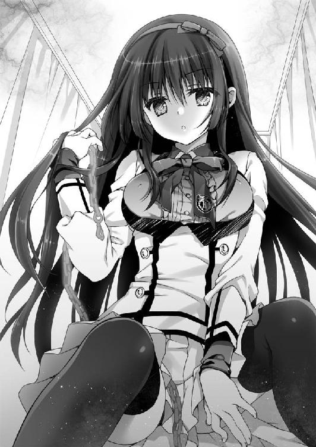
「そこで母は殿方の命を救うかわりにある約束を交わしたそうです」
嫌な予感がする。嫌な予感しかしない。
「三柴の一族の中で最も優秀な男を婿に捧げる、と」
「ま、まさか、それが......」
「そう、それが直道さま」
細雪さんは俺を指さした。
「これは単なる口約束ではありません。きちんとした契約なのですわ」
「契約、ですか」
「ええ」
じゃらり、と細雪さんは俺の左手の小指につながれている赤い鎖を手繰った。
「この《運命の赤い鎖》で結ばれた者こそ、わたくしの旦那さまに相応しい〈許婚〉なのです」
ああ、それは、今見れば、まるで〈運命の赤い糸〉みたいじゃないか。
「これで、ご納得いただけましたかしら」
「いや、ぜんぜん」
「ちっ、頭の悪い腐れこんこんちきめ」
「え？」
「なんでもありませんわ」
笑顔をつくりなおすと、細雪さんは俺の制服を脱がせはじめた。
「って、おい！」
「どうかなさいましたか？」
「いや、細雪さんこそなにしてんだよ？」
「子作りのつづきをと思いまして」
「こ、こづく......」
「性行為のことですわ。セックスです。男性の陰茎部を女性の──」
「説明されなくてもわかってる！」
「わたくし、直道さまのことが嫌いです」
「......は？」
「今すぐ死なないかしら、このカメムシ野郎、と思っております」
「今一瞬、言葉の暴力だけで死にそうになった」
「半年前、わたくしは直道さまを暗殺......いえ、婚約関係を破棄しようと思い立ちまして」
なんなのこの子。性格がつかめない......ん？
「半年、前？」
また半年前なのかよ、と、うんざりしながら、俺は言った。
「ええ。わたくしたちを結ぶ《鎖》を破壊すれば、関係は絶たれるはずだと思い、実行に移しました。直道さまを誰もいないあの廃校にお連れして......」
「ど、どう、なったの？」
「ご覧のとおりです。失敗しました」
俺の上にのっている細雪さんは〈鎖〉を乱暴に揺する。
ジャラジャラと硬質な音が響いた。
俺のほうに結ばれている〈鎖〉は今やはっきりとそこに存在している。ただ、細雪さんのほうへ伸びる途中でぼんやりとかき消えてしまっていたが。彼女のほうから一方的に揺すられるせいか、運命の赤い糸というよりも飼い主とペットをつなぐ鎖のように感じる。
「ちょっとやそっとでは壊れません。なにせ、『雪乙女』の秘宝ですから。おかげで校舎一つがなくなってしまい、かなり大ごとになってしまいましたわね」
「いや、ちょっと待ってくれ。それって......」
それだと、ありすが言っていることとも、スズランが言っていることとも重ならないではないか。いったい誰の言っていることが真実なんだよ......。
でも、そのことは今は重要ではない、とも思った。
「さ、細雪さんは俺と〈許婚〉の関係にあることが不満なんだね？」
「そのとおりですわ。なぜ、排水溝のぬめぬめのごときあなたと結婚など。ああ、汚らわしい」
「......わ、わかった。親だかご先祖だかが決めた結婚の約束なんて破棄しよう。うん、これでおしまい。だから──」
まずは俺の上からおりてほしい。目の毒だ。
「そんなに簡単ではありません」
俺の言葉を遮って、細雪さんは言う。
「《運命の赤い鎖》の呪力はぜったいですの。わたくしたちは呪われているのですわ。このままでは、間違って恋に落ちないともかぎりません」
「そ、そういうものなのか？」
ホレ薬みたいなものなのかもしれない。
「ええ、今も、わたくし、あなたにカビキラーをぶちまけてやりたいという気持ちと、まぶたを洗濯バサミでそっと挟んでさしあげたいという乙女心で揺れておりますもの。とても危険な兆候ですわ」
よくわからん。
「じゃあ、どうすればいいわけ？」
「もう一度、《鎖》の破棄を試みます」
「前はダメだったんだろ？」
「ええ。ですからほかの方法を試します」
「どうすんだよ？」
「あなたと子作りに励むのですわ」
「会話がループしてる！」
「ごちゃごちゃうるさいですわ。とにかく、つづきを」
「うわああっ」
俺は思い切り暴れて、細雪さんの手をとめさせる。細雪さんは夢でも見ているようなタレ目をいくらか険しくさせた。
「なにがそんなに不満なのですか？」
「不満とかそういうことではなくて」
「わたくしの姿態に思いをはせる殿方は大勢います」
まあ、そうでしょうとも。実際、今も白いぷにっとした太ももとか、制服を押しあげている胸とか気になります。
「それを自由に堪能できると言うのに......。ひょっとして、直道さまは男色家でいらっしゃいますか？」
「そうではないけれども」
「ああ、ご安心くださいませ。わたくし、処女ですが、『女医が教える本当に気持ちのいいセックス上級編』を愛読しております」
「いらないよ、そんな報告！」
「怒鳴らないでください、不衛生なつばが飛ぶのでひどく不快です」
心が折れそう......。
「と、とにかくダメだ。こういうのは、その、心から好きな相手とするものであってだな」
「気にすることはありませんわ。わたくし、あなたのこと殺しますし」
「......今、極めて不穏な発言を聞いた気がするんだけど？」
「わたくし、あなたのことを殺します」
ひい。
「『雪乙女』と行為に及んだ殿方は氷漬けとなりますの。そうなったら直道さまは生きてはいられないでしょう。《鎖》は破棄され、同時に憎き婚約者を処分できます。めでたしめでたしですわ」
「めでたくない！」
「ついでなので精気も吸わせていただきますわ。こんな時季に大雪をふらせたものですから、わたくし、ちょっとばかりバテ気味ですの。栄養補給をいたしませんと」
「むちゃくちゃだ！」
「そういうわけですので」
細雪さんはぺたんと手をあわせた。
「いただきます」
「ぎああああああああああああああっ」
俺はあらんかぎりの力をもってして暴れた。そのおかげで、なんとか細雪さんを退かせることに成功する。俺はそのまま転がり落ちるようにベッドからおりた。
そのまま一子相伝の暗殺拳・北斗神拳のかまえをとる。
「あら、わたくしと勝負なさりたいと？」
ぎらりと細雪さんの瞳が光った。
「あ、いや......」
ここはふざけてる場合じゃない。なんとかして逃げねばならない。
細雪麻乃はあまりにもクレイジーすぎる。
俺は必死にドアのほうへ走った。カギがかかっているらしいが、トイレと同じようにぶち破ってしまえばいい。思い切り助走をつけてドロップキック──は、失敗に終わる。
「ぐへっ」
〈鎖〉にひっぱられて、すっ転んだだけだった。
「往生際の悪いひと」
ゆっくりと〈鎖〉を辿るようにして細雪さんが俺のほうへ歩いてくる。
そして転んでいる俺の上に、またしても四つん這いになってまたがる。
「うう」
顔が異様に近い。
やわらかそうなくちびるが目に入った。
細雪さんの甘い吐息が頬にかかる。
こぼれた黒い髪の毛が俺の首筋を撫でる。
俺はぎゅっと目をつぶった。
「直道さまの最期なのですから好きにしてもかまいませんのよ？」
「ううぅ」
「それとも、されるのがお好きなのかしら？」
俺は目を開き、迫ってくる細雪さんの両肩をつかんで、押し戻した。
「ダ、ダメだ！ なし、これはなし！」
「いささかショックです。わたくし、そんなに魅力がありませんか？」
「そういう問題じゃなくて......」
「親衛隊の殿方は、つねったりシャーペンでつついたりするととても喜んでくださるのに」
知らんけども。
「ああ、なるほど。あの女を気づかっているのですわね？」
細雪さんが言う。あの女......って。
「ありす！ そうだよ、ありすはどうしたんだ！」
そうだ。こんなことしてる場合じゃない。俺は細雪さんをさらに押しのける。
細雪さんは鼻白んだような表情を浮かべた。俺の手を邪険に払い、立ちあがる。
「ずいぶんと《千年魔女》にご執心なのですわね」
「俺の幼なじみだ。変なことしてたら、た、ただじゃおかないぞ」
「声が震えてますわよ？」
「う」
細雪さんは「ふん」と鼻で笑い、それから暖炉の据えられている壁のほうへ移動した。そばに火かき棒がつりさげられている。......いや、よく見ると、火かき棒に見えるだけで、それはなにかのレバーらしかった。それを手前に倒す。
と、壁が一八〇度回転した。それこそまさに忍者屋敷みたいに。
「アホ道！」
「ありす！」
って、なんでここでアホ呼ばわりなんだよ。まあいいけど。
ありすは壁にとりつけられている氷の鎖で手を縛められている。そこから動けないようだ。じたばたと足で暴れるのでスカートがひらりはらりと、めくれている。
俺はありすのほうへ駆け寄ろうとした。
でも、残念ながらそれは叶わなかった。
急に左手をひっぱられる。
「くそ」
細雪さんが〈鎖〉をうまく使って、俺をありすから遠ざけたのだとわかる。俺にはよく見えないのだけれど、どうやら〈鎖〉を天蓋つきベッドの支柱に経由させているらしい。おかげで俺はベッドの脇までひきずられた。そこでストップする。
「なにやってんのよ、アホ道」
「こっちのセリフだ。なに急にいなくなってんだよ」
「ちょっと油断した」
「さがしたんだぞ。おかげで俺も捕まっちまったじゃないか」
「うるさいうるさい！ 直道のくせに生意気言うな！」
「仲がおよろしいことで」
細雪さんが揶揄するように笑う。
「細雪麻乃、今すぐあたしとあのアホを解放すれば、許してあげないこともないわ」
ありすの挑発的な言葉に、しかし、細雪さんは返事をしなかった。それどころか、ありすのことを見ようともしない。
そう、細雪さんはあくまでも俺を見ていた。
「ちょっとなに無視してんのよ。てか、あたしのカードをかえしなさいよ！」
ありすの文字どおり切り札であるところの魔術札は細雪さんにとりあげられているらしい。それはそうか。武器を持たせたままでいるはずがない。そう思って見れば、細雪さんのスカートのポケットがカードの形に膨らんでいるのがわかった。
細雪さんは妖艶な瞳で俺を見つめながら──ありすの首筋に氷の刃をつきつける。
「やめろ！」
立ちあがろうとしたが、〈鎖〉がきつくて、きちんと立つことはできなかった。膝立ちのまま、もう一度「やめろ」と怒鳴る。
「最期にいい思いをさせてあげようと思いましたのに。まあ、かまいませんけど。それよりもこちらのほうがよさそう」
「なんでもする。お願いだからやめてくれ」
「ご安心くださいな。これはあくまでも交渉なのですから。人質を殺してしまっては意味がありませんもの」
直道、とありすは呟いた。俺は右手で黙ってろ、と伝える。
「どうすればいい？」
「簡単ですわ。わたくしと口づけをしてくださればいいのです」
「それだけでいいのか？」
「ええ。わたくしはあなたの精気を吸わせていただきます。あなたは身も心も凍りつき、わたくしのオブジェとなるでしょう。それでおしまいです」
「ありすは助けてくれるんだな？」
「お約束いたしますわ」
俺は細雪さんを睨みつける。
「やめなさいよ、直道！ そんな約束守られるわけないでしょうがっ！」
ありすがわめいているけれど、俺は無視した。
「......わかった。口づけでもなんでもやってやるよ」
「アホ道！ やめなさい！ やめなかったら、あんたの恥ずかしい過去をここで暴露する！ あれはあんたが中学一年のとき、んー、もごもご」
細雪さんはありすの口に布を押しこんで黙らせた。
「するのがお好きかしら？ それとも、されるのがお好み？」
「どっちでもいい。俺は、きみのことが好きじゃないから。きみは見た目はかわいいのかもしれないけど、それだけだ。中身はからっぽだよ」
俺の言葉に、細雪さんは口をつぐんだ。そして、
「なんですって？」
剣呑な目を俺に向けてくる。
「きみはかわいそうな女の子だ。きっと友達はいないだろう。みんなはきみのきれいな顔が好きなだけで、きみのことを本当に好きなやつなんか一人もいない。同情するよ」
憤慨でもしたのか細雪さんの顔が赤く染まる。
「こ、こんなに失礼なことを言われたのははじめてですわ」
「きみを傷つけようと思って、わざと言った。意図が伝わっているようで嬉しいよ」
俺はありすのほうへ視線をやった。
ありすは「うーうー」うなりながら、ばたばたと暴れている。
ごめんな、ありす。俺はありすやスズランが言うみたいにすごい男じゃないんだ。なんの力もない、ただのつまんない高校生なんだ。不思議な力に目覚めて、みんなを救ったりはできないんだ。
だから、ありすを助けるにはこれしかないんだ。
ほんと、ごめんな。
細雪さんが俺との距離をつめてくる。
「わ、わたくしだって、あなたのことなんてちっとも好きではありませんわ！」
細雪さんは自分のペースをとり戻すためか、ふんっ、と大きく鼻を鳴らした。
「ですが、《千年魔女》に見せつけるというのは、なかなかどうして、悪い気はしませんけれど」
俺は返事をしなかった。
ありすが「うーうー」うなりながら、暴れている。口の中に押しこまれた布をぺっと吐きだして、「アホ道！」と叫んだ。
「冥途の土産に、わたくしが、してさしあげます」
細雪さんは囁き、俺に顔を寄せる。
労わるように、そっと、俺の頬をつつんだ。冷たい吐息がかかる。
「バカバカバカっ！ そんなことしたら幼なじみの仲を解約してやるんだから！ 違約金払わすぞ！ 借金まみれにしてやるぞ！」
おまえこそ、なにバカ言ってやがる。
「勝手は許さないんだから！ こんなの認めない！ ぜったいダメ！ だって、直道は、あたしと──」
ありすは大きな声をあげて、じたばたと暴れる。
けれど、それはそれだけ。
細雪さんのくちびると、俺のくちびるが重なる。
まるで、冷たくて甘い、アイスクリームみたいな──。
「──っ!?」
俺は細雪さんの細いからだを抱きしめる。
ありすの魔術札を回収するために。
細雪さんは驚いて、俺からくちびるをはなす。
一瞬くちびるを触れあわせただけなのに、俺の体力はがくっと落ちたような気がする。
マラソンを走りきったあとみたいな感じだ。
精気を吸われるってこういうことか、と思う。
確実に寿命が縮んだな。
でもその短いあいだに、俺はカードをほうり投げている。
ありすのいるほうへ。
「なんとかしやがれ、《千年魔女》！」
拘束されているありすは、手は不自由だけれど、口はもう自由だ。
ありすは大きく息を吸うと、ふうっ、と魔術札へ吐きかけた。
「《火蝶風月》──点火」
魔術札は炎の蝶へと姿をかえる。
「ちっ」
細雪さんがふりかえったときには、すでにありすの拘束は無数の蝶によってとかれていた。燐粉が舞いあがり、幽玄な光景が浮かびあがる。
「無様に助けられろ、直道！」
ありすは、ずだん、と一歩を踏みこむ。足もとで燃え盛る蝶が起爆剤のように弾けた。ありすは自身が一発の弾丸のように飛びだす。
「《蝶々発止》──抜刀」
炎の蝶をまとった剣が細雪さんに肉薄し、
「とまりなさい、魔術師！」
俺は細雪さんに氷のナイフをつきつけられながら、盾となる。
ぴたり、と、俺の眼前でありすの剣がとまった。
あと五センチくらいで、俺は死んでいただろう。
うしろからは細雪さんが氷のナイフを、前からはありすが炎の剣を俺に向けている。
二人は俺を挟んで睨みあっていた。
精気を吸われたせいで足に力が入らなくて、俺はその場にへたりこんでいる。
俺たちのあいだに息苦しいくらいの沈黙が横たわった。
ぱちぱちと、まるで二人の攻防に拍手でも送るみたいに、火の手があがっている。
ありすが生みだした蝶から室内に炎が移ったようだ。
赤い影がありすの顔を照らしている。
俺はごくりと唾を飲みこんだ。
それが合図であったかのようにありすが口を開く。
「あんた、何者なのよ？」
「あなたこそ、何者なんですの？」
「あたしは、こいつの幼なじみよ」
「あら、わたくしは〈許婚〉ですわ」
「はん、なにかの勘違いでしょ」
「そっちこそ」
そこで二人はまた静かになる。俺はそのあいだ身動き一つせず、おとなしくしていた。言うべき言葉も思い浮かばなかった。
また、ありすが口を開く。
「あなたの主張をいったん受け入れるとして」
「受け入れるとして？」
「あたしが《運命の赤い鎖》の呪いとやらを解いてあげるわ」
「ふん、あなたにそんなこと」
「できるわ」
細雪さんの言葉を遮ってありすは言った。
「もちろん、すぐには無理でしょうけれど、『冥葬会』の英知を結集すれば不可能ではないはず。そうすればあんたが直道にちょっかいをだす必要はなくなる。そうでしょ？」
「ええ、そうですわね」
「それなら」
「けれど、そんなに悠長なことは言ってられませんの」
「どういうことよ？」
「《運命の赤い鎖》の呪力はぜったいですわ。つながれている状態が長いほどお互いの絆は深まってしまう。こんなふうに話している今、この瞬間でさえも」
「なによ、それ？」
「魂さえも蹂躙し懐柔する呪い、それが《運命の赤い鎖》ですもの」
俺はゆっくりと左手に視線を落とした。
小指にはめられた赤い指輪。その先に伸びる赤い鎖。
今や確たる質量をともなって、それを見ることができる。
つまり、俺は細雪さんの〈許婚〉......なのか？
俺はいつか細雪さんを好きになってしまう。
細雪さんもまた俺のことを好きになってしまう。
今こうしているあいだにも、俺たちは恋に落ちつつある。
「あなたも、それは困るのではなくて？」
ありすは細雪さんを強く睨みつける。
「どういう意味よ、それ？」
「べつに深い意味はありませんわ。あるいは、もう一つだけ、呪いを解除する方法もあるのだけれど」
「どんな方法よ？」
ありすの問いに、しかし、細雪さんは答えず、そして俺から氷のナイフをひいた。
そのまま俺を蹴る。
「うわっ！」
「ぎゃおす」
俺はありすを巻きこんで無様に転んだ。それでもすぐに体勢を立てなおして、細雪さんのほうに向きなおる。
氷のナイフはぽたぽたと水を滴らせていた。炎の熱でとけているのだ。
そして、熱でとけているのはナイフだけじゃなかった。
「あなたのせいで、なにもかもおしまいですわ、《千年魔女》」
大量の汗でもかくみたいに、細雪さんもまた、とけかけていた。
炎のめぐりが異様に早い。カーテンは焼け落ち、絨毯は燃えあがる。そうして天井まで赤い腕を伸ばしている。俺たちは気づけば四方を火に囲まれていた。
一刻も早くここから脱出しなければならない。
「細雪さん！」
「近寄らないで、汚らわしい」
「こんな緊急事態で、なに言ってんだよ」
細雪さんは冷たい瞳で俺を見据える。
「わたくしが消えればあなたは解放されるのですわ」
「なんだよそれ？ どういう意味だよ？」
俺は一歩細雪さんのほうへ近寄ろうとした。でも、ほとんど同時に、天蓋つきベッドが崩れて、俺のゆく手を塞いだ。炎があがり、俺は一歩さがる。
「直道！」
ありすが俺の手をひいた。その手はひどく汗ばんでいる。
「早くここからでないと！」
「わかってる。細雪さんも早くこっちに！ 一緒に逃げるんだ！」
「嫌ですわ」
「......なに言って」
「い・や・で・す・わ」
細雪さんはぽたぽたと水になる。炎に照らされた顔が青白い。
そして彼女は微笑む。
「さあ、お逃げなさい」
「細雪さん......」
「ああ、勘違いしないでほしいのですけど」
彼女はとけ落ちていく髪をかきあげ、棒読み調子で言う。
「これは《鎖》のせいで好きになってしまったあなたを助けたいのだとか、そういうことではなくて、ただの、プリンのお礼なのですわ。あのとき、わたくしは......いえ、この話はよしましょう」
俺はそこでようやく思いだす。
ああ、どうして忘れていたんだろう。
「きみは──」
──俺、直道って言うんだ。三柴直道。きみの名前は？
──麻乃。細雪麻乃、ですの。
プリン泥棒の、あの女の子。
膝を抱えて一人泣いていた、あの子。
俺の〈許婚〉。
「直道！」
ありすが俺をひっぱる。
「ああ、熱い熱い。お熱いこと」
細雪さんがとけていく。ぱたぱたと手で顔を扇ぎながら、
「わたくし、あなたになら──」
細雪さんの、最後の言葉は聞こえなかった。ありすが窓をぶち破り、俺たちは館の外へ飛びでた。下は深い雪がふりつもっていて、クッションの役割を果たしたから、俺もありすも大した怪我はしなかった。
下から見あげる洋館は瞬く間に炎に飲みこまれた。
俺とありすは、黙ったまま手を握り、いつまでも燃えあがる洋館を眺めていた。
しんしんと、音もなく雪がふりつづいていた。
やがて炎は小さくなり、同時に雪もやんだ。
気づけばそこは山の中に建てられている小さな祠の前で、洋館もなにもなくなっていた。
○ ○
その夜、俺は夢を見た。
冷蔵庫の中の女の子とあやとりをする夢だった。
彼女には友達がいなかった。
いつも一人ぼっちで、みんなが遊んでいるのを遠くで眺めているだけ。
俺のところへ現れたのは偶然だったのか、それともやっぱり運命だったのか。
冷蔵庫をあけっぱなしにしていたので、俺は母さんに怒られてしまう。
でも、彼女は暑さに弱いから、これは譲れんのだ、と俺は母さんに言う。
女の子も俺も、あやとりなんてうまくなかった。
現代っ子だから仕方がない。
遊んでるうちに、俺と彼女の手はあやとりの赤い糸でからまってしまう。
ほどけないね、と女の子が言う。
ほどけないや、と俺も笑う。
そんな夢だった。
○ ○
スズランが俺の部屋に入ってくる気配を察して、俺は目を覚ました。
「ちっ」
「なんで今舌打ちした？」
「気のせいだよ、お兄ちゃん」
「はあ、俺はおちおち寝坊もできないのか」
朝から気温は高い。ずいぶんと寝汗をかいたようだ。
窓の外に目を向けると、雪もとけてなくなっていた。
家の前にシルバーのスポーツセダンがとまる。南さんが運転しているやつだ。
中から、ありすがでてきた。窓際に立つ俺に気づいたようで、ひまわりみたいな笑顔を浮かべて手をふった。
窓をあける。
「うーす」
「おはよ、直道。珍しいじゃない、自分で起きるなんて」
「身の危険を感じたからな」
「むう、あのへちゃむくれか」
ひまわりがしおしおになった。
「カギ使って中入っていいぞ。俺もすぐ下いくから」
「言われなくてもそうするわ」
そうですか。
窓を閉めてから着替えのワイシャツに手を伸ばす。と、スズランが俺の穿いていたハーフパンツに手をかけた。ぎゅっとひっぱるので、あやうくぜんぶ脱げるところだった。
「うわ、なにしてる」
「お兄ちゃんのお着替えを手伝おうと思って」
「手伝わなくていいよ！」
「ちっ」
「なんで今舌打ちした！」
「気のせいだよ、お兄ちゃん」
「もういい。着替えるからスズはでてってくれ」
「ええー」
むすっとスズランは頬を膨らませる。ちょっとかわいかったが、俺は心を鬼にして、スズランを部屋の外に押しだした。とっとと着替えをすませる。
そうこうしていると。
「ぎあああああああああああああああああああっ！」
一階からありすの悲鳴が聞こえてきた。
なにが起こった？
俺は慌てて部屋を飛びだす。階段を駆けおり、リビングのドアをあける。
ありすはつづき部屋になっているキッチンのほうにいた。冷蔵庫を指さしながらわなわな震えている。
ありすのそばでは、俺より先に駆けつけたスズランが呆けた顔で立ちつくしていた。
「どうした？」
俺も冷蔵庫のほうへ足を運ぶ──と。
にゅうっと、冷蔵庫の中から足が伸びてくるのが見えた。
白い足だった。最初は左、つづいて右の足が伸ばされ、床にぺたんとつく。
冷蔵庫のドアが邪魔をしていて、その足しか見えていないけれど......。
「お、お兄ちゃん、な、ななな、なに、この女」
スズランが声を震わせて言った。
同時に、冷蔵庫のドアがぱたんと閉まる。
そこに立っていたのは、一糸まとわぬ姿の──細雪麻乃だった。
「ぎゃあ、幽霊！」
俺はその場で腰を抜かすほど驚いた。
さらさらの黒髪に赤いリボンのカチューシャ、透けるような白い肌、夢見るようなタレ目。確かに細雪さんである。
「あら幽霊だなんて失礼ですわ、直道さま」
細雪さんが微笑んだ。ぷるんと形のいい胸が弾ける。
「お兄ちゃん、見ちゃダメ！」
スズランが飛んできて、俺の目を両手で塞いだ。っていうか目潰しだった。俺はしばしフローリングの上で悶絶する。
「あ、あああ、あんた、なんでここにいるのよ？ あんたはあの館の炎に巻きこまれて、とけて消えたはずじゃ？」
ありすが細雪さんに訊ねる。
「確かにとけて消えましたけれど、それで死ぬわけではありませんわ。『雪乙女』はとけて水になっても、それが凍ればまた復活するのです」
「聞いてないぞ！」
「聞いてないわ！」
俺とありすは同時に言った。
あの、ちょっと悲しげな結末とかなんだったんだ！
「スズ、ぜんぜん状況わかんないけど、それでも、この女がお兄ちゃんにとって害悪であることはわかる。悪霊退散！」
がるるる、とスズランはドーベルマンのごとくうなった。
「自称、妹風情がなにを」
細雪さんはふふんと妖艶に笑う。どうやらスズランのことも知っているらしい。
「わたくしたちは〈許婚〉ですのよ」
「え、それって解消されたんじゃ......」
俺が左手を確認すると、小指のつけ根がぼんやりと赤く光りだした。
赤い指輪が浮きあがる。そこには赤い鎖が結ばれていて、その先を辿ると──。
「わたくしは直道さまの所有物なのですわ」
細雪さんの首に巻かれている赤い首輪に結ばれているではないか！
「なに、これ？」
こんなにはっきり見えたことはなかった。てっきり、小指同士が結ばれているものとばかり思っていたのに。運命の赤い糸ってそういうもんだよな？
「なんで、首輪......」
細雪さんは白い頬をほんのりと紅潮させる。
「《運命の赤い鎖》は、ぜったい服従の証し。わたくし、身も心も直道さまの奴隷として生きることを今ここに誓いますわ」
俺の中で細雪さんのキャラクターが音を立てて崩壊していく。
「どうぞ、わたくしめを、卑しい雌犬とお呼びください」
「呼べるか！」
俺が叫ぶと、細雪さんはよろりとよろけた。
「あ、いや、ごめ」
ちょっと強く言いすぎたかも。
「ああ、そのように罵倒されては、わたくし、火照ってしまいますわ」
ひい。
「細雪さん、な、なんか性格かわってない？」
なんかもっと高飛車なイメージだったのだけど。
「なにを隠そう、わたくしＭですの。真正のＭ、Ｍの中のＭなのですわ。マクドナルドのロゴを見ますと、幸せな気持ちになります」
「そ、そうなんだ......」
わりとすごい告白だと思った。
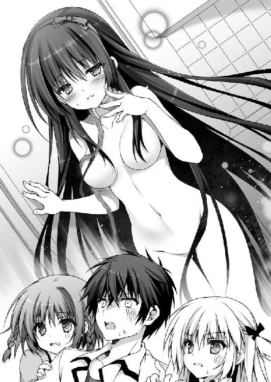
「でも、どなたでもわたくしのご主人さまになれるわけではありません。それなりの器をもった殿方でないと、わたくしのＭ心も満たされないのです。従って、普段はＳとしてふるまっておりますの。わたくしの暴言に心躍らせるような殿方はわたくしに相応しくありません。うふふ、これも一つのツンデレというやつですわ」
ツンデレっていうか、ツンエムだ。
「直道さまがくださった昨夜の暴言の数々、ああ、思いだすだけでもうっとりしてしまいますわ。わたくしのことを罵ってくださる殿方ってはじめてかも」
細雪さんは夢見る少女みたいに胸の前で手をあわせた。
「俺、なに言ったっけ？」
「『どっちでもいい。俺は、きみのことが好きじゃないから』とか、『きみのことを本当に好きなやつなんか一人もいない』とか、『きみを傷つけようと思って、わざと言った』とか。ああ、素敵でしたわ。もっとわたくしに心の傷を！」
あのとき、細雪さんが顔を赤くしてたのは、怒ってたんじゃなくて......。
「あんた、なに、バカ言ってるのよ！ おかしいんじゃないの？」
「そうだよ、って言うか、お兄ちゃんの前でなに脱いでるんだよ！ 服を着ろ、服を！ 話はそれからだ！」
ありすとスズランが細雪さんに言う。
俺はそろそろとその場から逃げようとした──が。
「あら、直道さまどちらへ？」
ずるずると、結ばれている〈鎖〉でひきずられた。逃げられない。
「ご安心くださいませ。直道さまが立派な飼い主になれるよう、調教してさしあげます」
わけわからん。
「と、とりあえず服着てくれないかな、細雪さん。目のやり場に困るんだ」
「細雪さんだなんて、そんな他人行儀な。麻乃、とお呼びください」
「え、あ、うん。じゃあ、麻乃さん」
「もっと荒々しく呼び捨ててくださいませ」
荒々しくって......。
「ま、麻乃」
ありすとスズランがすごい目で俺を睨んでる。こえーよー。
「なあ、麻乃、服着てほしいんだけど」
「ご命令とあらば」
うっとりと、細雪さん──麻乃は微笑んだ。
○ ○
ひとまず食卓を囲むようにして座る。かなり険悪な雰囲気だ。国会の答弁だって、もうちょっと和やかだろう。
「わたくしのテリトリーは昨日の火事で焼失してしまいました。ですので、これからは直道さまのおうちにご厄介になりたいかと。けれど、ご安心ください。わたくしは犬小屋なみの冷蔵庫で十分ですので」
制服を着た麻乃の言葉に、
「「反対反対反対！」」
ありすとスズランは強固に反対の意を表明した。
「あなたがたには聞いていませんわ。わたくしは直道さまに許可を求めているのです。いかがでしょうか、直道さま？」
「え、あ......その、親御さんはどちらに？」
「母は北極のシロクマを救うための活動をしておりますので、今は一人暮らしですわ」
ぴとっと、麻乃が俺の手に触れる。そこはひんやりとして気持ちがよかった。
でも、スズランがぺいっと麻乃の手をはらいのけた。ありすが俺の手の甲をつねる。
「なに、デレデレしてんの？」
「いや、決してそのようなことは......」
「家の中が問題でしたら、お庭でもかまいません。そうです、本当に犬小屋であっても」
「いや、それこそ問題だから。ああ、もう、仕方ないな」
ばしんっとありすがテーブルを叩きながら立ちあがる。俺の胸ぐらをぐいっとつかんだ。
「なにそれ、どういうこと？ この女をこの家に住まわせるってこと？ 断固反対よ！」
「いや、住むところなくなったのって、言ってみれば俺のせいだし」
麻乃は俺の手をぎゅっと握る。
「このご恩は忘れませんわ」
すると、スズランがどこからとりだしたのか、デザートイーグルをかまえて、俺のこめかみにつきつけた。
「え、ちょ、ま」
「お兄ちゃん、スズが一〇数えるうちに『スズは俺の嫁』って一〇〇回言って」
「不可能だろ、それ」
さらにありすが炎の剣を抜いて、俺ののどにつきつけた。
「直道、あんたこの家をでなさい。こんな魔窟にいたら命がもたないわよ」
「家をでろったって、じゃあ、どこいくんだよ」
「あ、あたしの家にくればいいわ。部屋の数なら余裕あるもの」
「なら、麻乃を住まわせてやってくれよ」
ありすと麻乃は一度視線を交差させ、すぐにぷいっと顔ごとそらせた。
「ぜったいやだ」
「ぜったい嫌ですわ」
「あんたがくればいいの。そしたら守りやすいし。もちろんそうするでしょ、直道？」
そこで麻乃も氷のナイフをつくりだして、彼女の場合は自分ののどにつきつけた。
「どうかわたくしを選んでくださいませ。でなければ、わたくしはここで命を絶ちます」
「ストップストップ、スト────ップ！」
「なによ、直道」
「なに、お兄ちゃん」
「どうなさいました、直道さま」
俺を〈魔術師〉と呼ぶ幼なじみ。
俺を〈救世主〉と呼ぶ自称、妹。
俺を〈許婚〉と呼ぶマゾヒスト。
俺は半年前の大晦日に、事故に遭った。そのときの記憶が俺にはない。
彼女たちは言う。
それは俺の魔力が暴走したからなのだと。
それは俺を覚醒させるためだったのだと。
それは俺との絆を絶つためだったのだと。
どういうわけか、彼女たちの主張はことごとく矛盾する。
じゃあ誰かが嘘をついているのか？
そんなふうにも、俺には思えない。
彼女たちは三人とも本気なのだ。本気で俺の力を買っているのだ。
「直道！」
「お兄ちゃん！」
「直道さま！」
三人が俺を呼ぶ。
「「「わたしを選んで！」」」
彼女たちと過ごしたこの数日でわかったことがある。
この世には、常識でははかれないような奇妙なことがたくさんある。
彼女たちは物語の主人公を導くような『ヒロイン』だ。
そして、残念ながら、彼女たちは勘違いをしている。
彼女たちが導くべき主人公は──俺じゃない。
そうなのだ。彼女たちはなにかの手違いで俺のもとへやってきたんだ。
だってそうだろ？ 彼女たちの〈事件〉に巻きこまれたとき、俺がなにかすごい力を発揮したか？ いや、していないのだ。ただの一度も。どんなピンチになろうとも。
俺は無能力者だ。それはつまるところ、ただ一つの真実を示している。
彼女たちが物語をともにし、いつかは恋に落ちる相手は、悲しいことに俺ではない。
「と、とりあえず朝ごはんでもつくろうか」
「選択を拒否するつもり？ はっきりしなさいよ直道！」
「あ、いや」
「お兄ちゃんには世界を救う義務があるんだよ、こんなとこでラブコメしてる場合じゃないんだよ！」
「そんなこと言われても」
「直道さまは、わたくしのことがお嫌いですか？ ああ、でも、冷たくされるのも、それはそれで......ハァハァ」
「きみはわりと幸せそうだね」
厄介なのは、この三人が本気らしいということである。
半年前の大晦日に、俺の身に、なにかが起こった。
俺はあの日、誰かを追いかけて母校の小学校にのりこんだのだろう。そこで誰かと対峙した。その誰かは俺に銃を向けた。それだけでも十分におかしな話だが、なぜか俺の視点には微妙なズレが生じている。俺は俺と対峙していた何者かの目線を共有しているらしい。
このことが、この不可思議な事態を説明するなんらかのカギなのではないだろうか。
この三人とこうして一堂に会することになったのも、そのことと無関係ではないと思うのだ。そして、すべてを思いだすことができさえすれば、この厄介な事態を解決することができるかもしれない。
しかしながら、さしあたってやらなければならないことは一つだ。
「すまん！」
俺は席を立った。そのまま一目散に逃げる。
「待てい！」
「待ってよ、お兄ちゃん！」
「直道さま！」
ありす、スズラン、麻乃が追いかけてくる。俺は必死に逃げつづける。
かくして、俺の平凡な学生生活は遠のいていく。
Snow White is Already Dead is closed.
三柴直道が自宅から飛びだしてきた。
そのうしろに一条ありす、スズラン、細雪麻乃、という、なんとも濃すぎる三人娘がつづく。アウトキャストに、覚醒者、それから雪女の三人だ。まだ三人と言うべきか。
「困ったことになりましたね」
彼女が言う。
「ああ、まったく困ったことになった」
俺は遠ざかる四人を眺めながら呟いた。
Go Straight / Ghost Rated is...?
あとがき
こんにちは。
先日、町中で「ねこ耳」という文字を発見したので、思わず二度見してしまったのですが、よく見たら「かねこ耳鼻科」という看板でした。病んでいる......。
そんな二階堂紘嗣です。
隔月刊行第二弾『俺が主人公じゃなかった頃の話をする』は、いかがでしたでしょうか？ サブタイトルも含めるとやたらと長くなってしまいました。
担当編集者と作者はヒロインの名前「ありす」で作品を呼んでいるのですけど（タイトルがなかなか正式決定しなかったため、仮に呼んでいるうちに定着）、なにか語感がいい略称を思いついたら教えてください。おもしろいやつ募集します。
最後のとこに二次元コードがあると思うので、そこからアクセスしてアンケートにでもちょろっと書いてくれたら、集計して紹介でもしようかな、と考えているのでよろしくです！ びしばし送ってくださいな。※
さてさて、この『俺が主人公じゃなかった頃の話をする』は、もう一方のシリーズ『偽悪の王』とはちょっと雰囲気の違うものになっています。いるはずです。向こうはカッコいいやつを、こちらは直球のラブコメに極めて近しいなんか変なのを書きました。
読んだあと「うん、なんか変だった」と思ってもらえたら嬉しいかぎりです。
ところでこの二作品ですが、執筆の順番は、こちらの『俺が主人公じゃなかった頃の話をする』のほうを先に書いていたりします。
『あまとう！』の三巻が発売されてからわりとすぐに書きはじめたので、がっつり書いていたのは二〇一二年の夏のことでした。
ある程度完成したところで「もう一本書かない？」と担当編集者にそそのかされて、『偽悪の王』も書きはじめて、さらに『俺が主人公じゃなかった頃の話をする』の二巻も書きはじめて、でも、一度は書き切ったものの、自主的に全ボツにして、一巻のほうに修正をくわえて、それから......とかそんなややこしいことをくりかえしていたので、一年かけてようやくお届けできた形になります。
懐かしいなあ、取材と称して、一人でカップラーメンつくりにいったり、一人で水族館にいったり、一人で観覧車に乗ったり......。
一人観覧車における一周するときの体感時間の長さといったらないですね。
悟りをひらくところでした。
と、まあ、そんなせつない話はどうでもいいわけです。
重要なのはイラストですよ。
みなさん、見ましたか？ 館川まこ先生による素敵イラストの数々を。
素晴らしすぎます。眼福です。館川先生、どうもありがとうございました！ 二巻ではヒロイン増加予定なので、よろしくお願いします！
寂しがり屋の二階堂を適度にかまってくれる担当さまや、本書の完成までに携わってくれた方々にも感謝です。今回は特に、著者校の段階であちこちに迷惑をかけてしまいました。すみませんでした。こうして完成したのも皆さまのおかげです！
読んでくれたあなたにも大感謝！
それから作中に登場する「虚夢への供物」なる装置は中井英夫著『虚無への供物』をもじったものです。「まんまじゃねえか！」というお叱りの言葉は甘んじて受けます。好きすぎて、つい。そもそも『虚無への供物』ってタイトルが中二な心をくすぐりますな。
あと、カップヌードルミュージアムは横浜みなとみらいに実在します。おもしろい施設なので機会があれば遊びにいってみてください。
ついでに徒歩圏内にあるコスモワールドという遊園地で一人観覧車を経験すると魂のステージが一つあがる、かもしれません。
晴れている日の景色は間違いなく最高ですから、そこは保証しますぜ。
ではでは、次は『偽悪の王』二巻でお会いできることを願って。
二階堂紘嗣
※電子書籍版には二次元コードはありません。アンケートへはＵＲＬよりアクセスしてください。
http://mfe.jp/qhd/
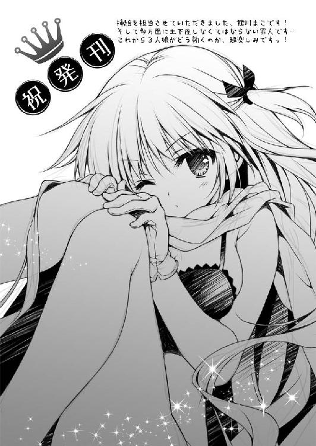
著者
二階堂紘嗣（にかいどう・ひろし）
第４回ＭＦ文庫Ｊライトノベル新人賞「佳作」受賞、『ナインの契約書』でデビュー。
他著作に『D-breaker』『あまとう！』。
哺乳綱・霊長目・ラノベ作科 早く人間になりた......一応、ヒト属です。
イラスト
館川まこ（たてかわ・まこ）
地味系イラストレーターです！
初めての小説挿絵で代表作が出来たーと浮かれつつも、全方向にご迷惑掛け中で猛省中です...！
俺が主人公じゃなかった頃の話をする
part1, 一条ありすがメインヒロインな件
著者名......二階堂紘嗣
発行者......三坂泰二
発行所......株式会社メディアファクトリー
http://www.mediafactory.co.jp/
２０１３年６月30日 電子書籍版 ver.1.0.1
無断で複製・複写・放送・データ配信などをすることは、かたくお断りいたします。
©2013 Hiroshi Nikaido